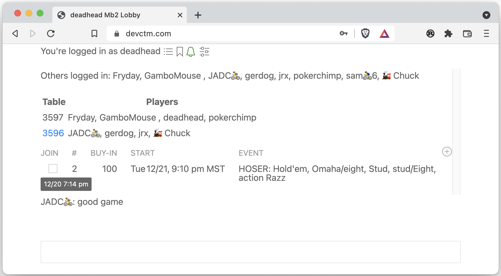

Poker, with your friends
Mb2 is poker software with a nice friendly player base.
Mb2 is in an early stage of development. The server is world-class, full-featured and state-of-the art. However, the user interface is currently mostly unstyled.
The server improves almost every day. The styling of the user interface has slipped repeatedly, but has not been forgotten nor is it being ignored.
Read no further, Try the Demo
Although ugly, the user interface is mostly self explanatory. As such, you can try the demo and only come back to this document if you’re curious.
There’s more information about the demo on the next page of this book.
To advance to the next page, scroll to the bottom of this page and
then click the > in the lower right corner.
Come back for a tournament
Although you can create your own tournaments and have them start whenever you want, typically, the regulars start at least one tournament per day.
The tournaments have Fun Money and bragging rights as a prize.
The tournaments start at 5:05pm Pacific (6:05 Mountain, 7:05 Central, 8:05 Eastern, etc.).
This manual is… Player Driven Largely Unmaintained
Maintaining this documentation is currently, low-priority.
The regular players already know most of the information herein and “outsiders” become insiders simply by joining and playing. However, if there’s anything you’re curious about, ask in the lobby. Not only is it likely that someone will answer, but your question and its answer may well make it into this manual and help someone else.
Demo
There’s a button labeled Demo on
https://craftpoker.com
Go to the site, click that Demo button, and you’ll be presented with
a modal dialog.
Default Values
If you click the CREATE button without changing any of the values in
that dialog, you’ll get a 2-player No-Limit Texas Hold’em tournament
whose structure is based on the 2022 World Series of Poker Main Event.
You’ll then be logged into a demo account and be
placed in the lobby. At the bottom of the lobby chat
will be instructions in red telling you to click the Start button to
start the tournament you just created.
When you click Start, your browser will attempt to open two pop-up
windows, one for each player. If a pop-up blocker prevents the windows
from being opened, you’ll told how to proceed.
To Demo Something other than 2 Player Texas Hold’em
If you’d rather explore something else, you can see other games by choosing a different structure.
Demo Limitations
Demo accounts are able to chat with non-demo accounts, but are not allowed to join events that require a buy-in (the events that don’t require buy-ins are demo events and testing events).
You are not able to change preferences of a demo account.
So, after you’ve played with the demo, you may want to create your own account.
Accounts
Accounts are free.
You may create more than one, but please don’t mislead.
Currently, no email account is associated with an account. Mb2’s purpose is to provide fun, not to sell you things or collect (much less sell) your information. Mb2 currently doesn’t even use cookies, nor does it record your IP address.
No Password Recovery, Only Reset
Your password is never stored in a database. Instead, a hash of a hash of your password is stored (the first hash is done on the client side so that your password is not sent to the server). Consequently there’s no way for anyone associated with mb2 to recover (or even observe) your password. Since mb2 doesn’t use email addresses, the only way to have your password reset is to ask (e.g., via chat or email). So, when you create an account, please remember or write down your password.
Privacy
At the time this page was written, every detail was correct. However, while mb2 is still under rapid development, there’s a chance that some of the information on this page may inadvertently become outdated. So, don’t bet your life—or anyone else’s—that the information here is correct.
Everyone’s privacy is important to the developers of mb2. As such, mb2 does not use cookies. Mb2 does, however, use your browser’s session storage and local storage to keep track of your being logged in and connected to tables. So, were your computer to be forensically examined, it would be possible to tell that you’ve been connected to mb2.
In addition to session storage and local storage, a proof-of-concept feature allows players to load images to be used as their buttons. These images are never sent to the mb2 server, instead the loading is client-side only. Each button image that is loaded is stored on in the IndexedDB of the browser where it is loaded. If no buttons are loaded, nothing is stored in the IndexedDB.
Mb2 logs almost all traffic between the client and the server. The exception is that your login credentials are not logged. These logs are used for debugging and are currently retained forever.
Mb2 uses Cloudflare as a content delivery network, but the WebSockets that connect your lobby and table pages to the server do not run through Cloudflare.
Mb2 currently runs on AWS (Amazon Web Services). The initial connection your browser makes to mb2 runs through an AWS Application Load Balancer (ALB) which decrypts that initial HTTPS connection. However, the successive connections your browser makes to mb2’s server run on WebSockets and the WebSocket connections do not go through an ALB. These WebSockets are WSS encrypted and the traffic is decoded on the AWS instance running mb2 (i.e., it is not decrypted at the Load Balancer). Authentication credentials (e.g. your password’s hash) are only passed through the WebSockets.
GitHub Authentication
As a proof-of-concept, mb2 allows players to create accounts using GitHub’s OAuth server. Nobody is required or even encouraged to use this obscure feature. It exists simply to make sure that mb2’s authorization subsystem supported OAuth. It is likely that other OAuth servers will also be supported as options for authorizing, but mb2 will never require an account to be created via OAuth. So, if you don’t want Microsoft knowing you’re using mb2, don’t use the GitHub Authentication.
Security
Some of mb2’s privacy features also provide a modicum of security. Specifically, your password and all of your actions are encrypted by your web browser and decrypted only inside mb2. Similarly, your hole cards are encrypted by mb2 and only decrypted by your browser.
Although mb2 logs your actions and your hole (or other down) cards, those logs remain in mb2’s memory until the hand is over. Only after the hand has finished is that information logged to mb2’s database. Mb2 uses an Amazon RDS PostgreSQL Database instance that is encrypted at rest. Mb2 communicates with its database using SSL.
Your password is never stored. Instead, a hash of your password is stored. That is sufficient for mb2 to be able to tell if you have provided your password when you sign in. However, your password can never be recovered, although it can be reset.
During development, mb2 uses
thread_rng
from the rand crate (crates are
essentially Rust libraries. Rust is the language mb2 is written
in). The authors of thread_rng believe it to be cryptographically
secure.
New to Poker?
If you’re new to poker, mb2 might be a little overwhelming. The current mb2 player base is a group of people who already have quite a lot of online poker experience. Most of the current participants know each other or want to help test the software or like the fact that mb2 deals a lot of esoteric games.
The current industry leader is PokerStars and they have a nice page you can view without registering. An up and coming challenger to PokerStars is GGPoker and they have a Poker School that requires registration. PokerStars also has a school.
From mb2’s developer’s point of view, poker can—and should—be fun, but poker can also be addicting. We’re pro-fun and anti-addiction (but non-judgmental). Nothing about mb2 is designed to encourage you to play too much poker, much less get addicted.
If you play on mb2, great! Welcome aboard.
Lobby
After you sign in, you’ll be in the lobby, where you can see the active tables, a list of upcoming tournaments and recent chat.

The top line in the lobby starts with the nickname you’ve logged in as. After that are icons.
The second line lists the others logged in.
If any tables are active, each gets a row with the table id and a list of the players at that table. The table id itself is a link. If you click on it, you’ll get a new window that allows you to observe that table.
The list of players at a table does not include former players or observers. When a player busts, that player remains at the table as an observer until that player leaves (i.e., closes the table window).
Any upcoming tournaments that you’re allowed to join are listed below. To join, click the check-box. If you change your mind before the tournament starts, click the check-box again and your buy-in will be refunded and you won’t be in the tournament when it starts.
When you join a tournament there may be esoteric options that you can choose via a pull-down in the right most column. They should be self-explanatory. Above that column is the little white plus sign that brings up the tournament creation modal dialog (see below).
The column labeled # is the number of players currently signed up. If
you want to see which players are signed up, bring your cursor over that
number and the entrants’ nicknames will be revealed.
The starting time is in the timezone that your browser is configured to display. That’s normally the timezone you’re in, but check the three letter timezone abbreviation to be sure.
A synopsis of the tournament structure is in the Tournament column.
If you bring your cursor over the synopsis, more details will drop
down.
The rest of the lobby is chat and a box for you to type your own chat. All chat is logged, but only the chat from the last twenty-four hours is displayed when you log in.
Top Line
Your Nickname
At the top of the lobby is your nickname (e.g., ☕ deadhead). That can be useful if you want to see how you’ve
customized your nickname (e.g., with capitalization, punctuation,
white-space or emojis).
Players Manual
Immediately to the right is circled-i icon. If you click that icon, this Players’ Manual is opened in a new tab or window.
Reports
The next icon looks like three horizontal lines, each with a dot in front of them. This is the reports drop-down icon. It’s where you can choose to see various leaderboards or the recent tournaments.
Leaderboards
By default, the net profit leaderboards only show players who have won more Fun Money in payouts than they’ve paid in buy-ins. However, if you have a non-positive balance and you want to see it, you can hold down the shift key when you click one of the leaderboard menu items. If you hold the shift key down when you click and you don’t see your nick, then no tournaments have finished that you were entered in.
Recent Tournaments
Recent Tournaments brings up a list of the non-demo/non-test tournaments that have finished in the last month.
Each row contains the starting date and time of the tournament, the Fun Money buy-in, the number of entrants and the name of the Event. If you click on a row, the results from that tournament are displayed.
Bragging (or crying) Rights
When you bring up the results of a specific tournament, there is a little icon to the right of the name of that tournament. It looks like a couple of (three if you count the sideways one) links in a chain. If you click on that icon, the URL for this result will be copied to the pasteboard which can then be pasted into email, twitter or some other messaging system.
Here’s an example: https://craftpoker.com/event/3083/player/10
Rules
Beyond that is a drop-down menu to the rules for almost all the games Mb2 knows how to deal. Action Razzdugi does not currently have an entry, but it’s just like Razzdugi, except the Razz half is Action Razz.
Audio
The next item is a bell, which allows you to mute the gong. The gong is rung when a new tournament is added. That alerts people to the presence of the new tournament so they can sign up. If your bell is green, the gong will be played. If gray, it won’t. If you hover your mouse over the bell, it will tell you its status.
Some daily tournaments have the tradition of encouraging the winner to pick the following day’s tournament. It’s viscerally satisfying to win, create the successor tournament and then bang a gong.
Preferences
If you are logged in to a non-demo account, your final icon will be what looks like three horizontal sliders. Clicking it allows you to set preferences that are remembered indefinitely.
Creating Tournaments
In the lobby, if you click on the white plus small icon, you get a dialog that looks something like:

Type
For now, just leave the Type as Tournament.
Structure
The Structure attribute is a pull-down menu from one of more than a hundred pre-existing tournament structures. Currently you can not create your own structure.
Buy-in
Tournaments that are created for testing or demo purposes should be Free, since free tournaments don’t affect anyone’s standings. Tournaments where people are expected to play well should have a 100 buy-in if for no other reason than to make it clear that the participants will be taking the tournament seriously.
Bounty
If the 25 radio button is selected, then sufficient Fun Money is
deducted from the prize pool so that an award of FM 25 can be made to
the player who busts another player. If N people are in a tournament,
then N-1 bounties will be paid out by the time the tournament ends.
Comment
Adding a comment is optional. If you add a comment, it will show up when people hover over the tournament structure in the listing of upcoming tournaments.
Autostart
If you put a number in the Autostart field, then the tournament will
start automatically once that number of participants join. In general,
you should not create an autostart tournament unless you think there
are enough people in the lobby to sign up within five or ten minutes,
otherwise you may find that nobody will sign up because it will be too
hard to predict when it will start.
If you put a number in Autostart, the Start At field will be removed.
You can only either start by Autostart or Start At, not both.
Start At
Start At is in the same timezone as upcoming tournaments are displayed in. That’s whatever your browser thinks your timezone is. The first time you bring up the “Add a Tournament” dialog, “Start At” is pre-populated with a value that is ten minutes into the future. However, after that, the dialog simply remembers whatever value was in that field previously.
If the lobby observes that you’ve won a tournament, then the next time you create a tournament, Start At will be pre-populated with the same starting time as the tournament you won, but be on the following day. This helps people who win the evening or night tournaments, because the convention is to let the winner choose the tournament for the following day.
Round Duration
Round Duration (Minutes) is in essence a scaling factor. In most tournaments, all rounds are the same length. When create a new tournament and specify the round duration, what you’re really doing is saying how long you want the first round to be. If any rounds have a different duration from the duration of the first round, they’ll be scaled.
So, if there’s a structure where the odd numbered rounds are 20 minutes and the even numbered rounds are 30 minutes, if you specify Round Duration as 5 minutes, then you’ll have a tournament where the odd numbered rounds are 5 minutes and the even ones are 7.5 minutes.
The TOC (Tournament of Champions) style format has a 15 minute Hold’em first round, an 18 minute Stud second round and a 22 minute Omaha/8 third round. So, if “Round Duration (Minutes)” is set to 5, then the second round will be 6 minutes and the third round will be seven minutes, twenty seconds long.
For a dozen or so players, five minute rounds for most structures results in a tournament that finishes in about an hour and a half.
Seconds to Act
Seconds to Act is how much time a player gets to act before being sent to vacation. No, 999 is not a reasonable number of “Seconds to Act”. Typically we use 45 there and that’s the default when this dialog comes up.
A player may call time to get more time to act. There currently is no limit on how many times a player can call time. Calling time resets the number of seconds to act (it does not add to the number of seconds to act). So, if “Seconds to Act after calling Time” is set to 60, calling time will mean that the player must act within 60 seconds regardless of how much time to act the player had remaining.
Synchronized Breaks
Schedules have breaks built into them, and like Round Duration, they scale based on the same ration of the “Round Duration (Minutes)” setting to the duration of the first level in the structure. That can result in breaks that would be too short were it not for the “Minimum Break Duration in Minutes” setting. However, the duration of a break is like the duration of a round in that it can start in the middle of a hand. The players who are still in the hand still need to finish the hand.
Preferences
If you click on the preferences icon in the top line of the lobby, you’ll get a modal dialog that looks something like the following.
Almost all of these preferences control what will happen on subsequent
table windows created for you. The New Tournament check-box in the
Sounds To Play section is the exception. The New Tournament sound
comes from the lobby.
The slightly confusing options are: Four Color When Badugi Deck Color option and the Only When Auto-Seated Auto-Center option.
Four Color When Badugi
Four Color When Badugi is a setting “between” Black and Red and
Four Color.
Black and Red always uses black for clubs and spades
and red for diamonds and hearts.
Four Color always uses green for
clubs, blue for diamonds, red for hearts and black for spades.
Four Color When Badugi uses Black and Red unless the game currently
being played uses Badugi ranking when figuring out how to award or
split the pot, in which case Four Color is used. So whether or not
to use a four color deck can change each time the game changes.
Auto-Seated
When you play a tournament, you do not get to choose your seat, hence you are auto-seated.
When Ring Game support is added, you’ll have the option of choosing your seat when a seat is available or having a seat assigned to you when coming off a wait list.
So, for now, there’s basically no difference between Always and
Only When Auto-Seated.

Tables
Mb2 creates a new pop-up window for each table you are seated at or you are observing. A table looks something like this1:

Most of the elements in a table window should be self-explanatory. Additionally, most also have a “tooltip” associated with them. The tooltip will be revealed if you leave your mouse over an element that contains a tooltip.
The remaining pages of this Tables chapter document or clarify some of the things that may not be self-explanatory.
-
Currently, there are also two textual representations of a table, but this manual ignores them because they are likely to go away after the graphical interface becomes more attractive to the current text view players. ↩
Top Line
The upper left portion of a table consists of a row of icons that can be clicked on. Most of them make temporary changes to the appearance of your table. They all have associated tooltips that tell you what they’ll do if you click them.
Players Manual
Like in the lobby, the left-most icon is a circled i. If you click that icon, this Players’ Manual is opened in a new tab or window.
Table View
The next icon switches between
- diagonal arrows pointing outward (at the top of the window)
- diagonal arrows pointing inward (at the bottom of the window)
- a landscape picture of mountains (at the bottom of the window)
This icon is telling you what Will happen if you click it. If you’re in the Table view, you’ll switch to the Text view. If you’re in the Text view and you click it, you’ll switch into the Compact Text view.
The text views are unsupported and undocumented. If you prefer to use them, please let Cliff (aka deadhead) know what causes your preference so that he can improve the graphical view to the point that you’ll prefer that to the text view.
Rotation
If you click the curved arrow, the table will be rotated clockwise, unless you have the shift key held down when you click it. If you have the shift key held down and you click the curved arrow, the table will rotate counter-clockwise.
Audio
You can click on the bell icon to adjust whether or not certain sounds are played at this table. You have more control of which sounds are played in the Preferences dialog available from the Lobby.
Game Notification
The circled exclamation point is similar to the bell, but it changes which game and/or level notifications you get.
Deck Color
The paint bucket allows you to change whether to use a normal two-color (diamonds and hearts are red, clubs and spades are black) deck or a four-color deck (clubs are green, diamonds are blue, hearts are red and spades are black).
If you hold the shift key down when you click on the paint bucket, you change the color of the back of the cards.
Messages to Display
Clicking on the “quotation box” icon allows you to adjust what messages show up in your chat-box (or chat-window if you Pop-out your chat).
Number of Observers
Clicking on the star icon allows you to see how many people are watching your table and how many non-players are watching you in specific. People who are logged in can watch your table by clicking on the table number in the lobby. When you’re playing, your URL is shareable. If you share your URL and someone follows that link, that person is watching you play, meaning if you get sent to another table, they will automatically be switched to watching that table, too.
After you click on the star, you get something that looks like T: 0, P: 0 where the number after the T: is the number of people watching
your table and the number after the P: is the number of people
watching you, the player.
Observers are only counted while they have a table window open. So if
you share your URL with ten people and three of them start watching at
the same time, you’ll get P: 3, which will increase if anyone else
follows that link before any of the original three close their window.
Although it hasn’t been properly load-tested yet, mb2 is designed to support tens of thousands and eventually hundreds of players and/or observers efficiently. During pre-alpha testing it is unlikely that we’ll overload the server, although it could happen if someone with a huge social network shares a URL. If that happens, I’ll make load-testing and bandwidth limiting an exceedingly high priority. Otherwise, I’ll try to get it done before it’s needed.
Optional Scroll to the Bottom
When there are too many lines to display in the chat-box or chat-window, a scroll-bar is presented. If you scroll backward, a down-arrow appears. The down-arrow is black when it’s not your turn to act and red when it is. If you click on the down-arrow it immediately scrolls forward so that the bottom (most recent) message is visible.
Optional Hands Remaining
Which games are played in a tournament are determined by the tournament’s structure.
Some tournament structures only have a single game in them (e.g. a No-Limit Hold’em tournament). Others are mixes, like HORSE (Hold’em, Omaha, Razz, Stud, Stud/Eight).
However, tournament structures have two different ways to determine when to change game
- by a count (HORSE is by count)
- by level (TOC-style is by level)
If you are playing on a table where the game is going to change via a count, the last button on the top-line can tell you how many times more the current game will be played after the current hand completes. If you don’t want to see that that information (perhaps you’re teaching yourself how to count to six), you can click it and the button will remain, but the number won’t be shown.
Advanced Checkboxes
In general, checkboxes are used to select choices before it’s your turn to
act. If you have bad cards and you know you’re going to fold when it
is your turn, you can click on a Fold checkbox. If you change your mind
before it becomes your turn you can simply uncheck the checkbox.
Many of the checkboxes act like “radio buttons” do in other interfaces. If
you check Fold and then check Call Any, the Fold checkbox will
automatically be unchecked.
Immediate Buttons
When it is your turn to act, if you have not previously specified a valid advanced action, you’ll be presented with buttons that represent what you can do. Unlike checkboxes, you can’t change your mind once you click a button.
Shareable URLs
When you are at a table, the URL in the location portion of your table’s windowframe is a URL that you can share with people. People who visit the URL can watch the game (if there’s still something to watch).
For example, the URL https://craftpoker.com/event/3076/player/10 was from a tournament on February 22nd, 2022. Specifically, that was deadhead’s (player #10) URL. The tournament started at 5:05 Pacific and deadhead bust at 6:15 Pacific, so if anyone had visited that URL between when the tournament started and when deadhead bust, that person would have seen the game playing in real time.
If a URL includes a player, then it is player-specific and the observer will automatically follow the player if the player is assigned to a different table.
If a URL is visited after the player has bust or won, a summary of the event will be displayed. E.g.,

Review Button
Clicking the review button brings up a pane in the lower left corner of the table window. That pane shows the ending of the previous hand: players’ hole cards (unless they mucked) and the hand they made.
The winning “high”1 hands are in green (and bold, so color-blind people can recognize them). The winning “low” hands are in blue (and italics). If you mouse over a high or low label that has won chips from a pot, the amount won is displayed as a “tooltip”. If there are multiple pots (due to one or more players being all-in), the amounts won from each pot are shown.
-
Some games split the pot with two different high hands, e.g., Dramaha, where one high hand is made using the board and the other high hand is made using solely the player’s hole cards. In games like these, one of the two high hands gets the extra chip if there is one. It’s the high hand that gets the extra chip that will be in green and bold. ↩
Customizable Dealer Buttons
How to use
By default, the dealer button at a table is an off-white circle with a red letter B inside it. It can be seen here to the upper-left of deadhead:
If you hover over the dealer button, it gets larger and if you click the dealer button, you get an “easter-egg”, a narcoleptic dinosaur:
However, if you shift-click the button, you get a picker that allows you to select an image to send directly to your client (i.e., the image is never sent to the mb2 server):

After you send the image, that will be your button:

The two other built-in images are still available. You can cycle through all your button images by repeatedly clicking on the button.
Where its stored
Since the image was sent directly to your browser (e.g., Chrome), it will not show up if you run a different browser (e.g., Safari). However, if you’re adept with developer tools, you can see that your button has been stored in your browser’s IndexedDB:
Why it matters
This is a proof-of-concept that demonstrates a way that mb2 can be customized using assets that belong to the player and never travel to the mb2 server. Eventually, much more than the button will be customizable and people will be able to make and share asset-packs that allow their tables and the lobby to look how they like.
For the purpose of sharing with others, eventually it will be possible to upload assets to an mb2 server, but that will be in addition to private client-side only loading and will be completely optional.
For the curious programmer
The loading and display of the custom buttons is done entirely using Rust. Mb2’s source code is private, but a stand-alone client-side loader that demonstrates how this is done is available on GitHub.
A Button to try
Any image that is a circle, with everything outside the circle being transparent will work. PNGs are good for this as are SVGs. Here’s an example: lofty_top_small.png
{kind=link}
Customizable Backgrounds
Similar to customizable dealer buttons, you can change the background of all your tables by shift-clicking on the background. That will bring up a picker where you can select an image to be used instead of the green “Craft Poker” table.
The optimal dimension for your custom background is 1906x1314. Anything else will be scaled.
Once you have uploaded a background, it will be remembered for new tables, but you can click on the background and shift back to the default, and click to continue cycling through backgrounds.
A Background to try
Here’s a fair use example: ancient-ps-screenshot.png
{kind=link}
Customizable Styles
Similar to customizable backgrounds, if you also hold the Alt-key (Option-key on Macintosh keyboards) down when you shift-click on a background, you get a picker that allows you to upload CSS or SASS that can change the appearance of a table.
Before you do so, you should upload a custom button or background and then use web developer tools to delete it, just to be sure you can do so, because an unwanted style-sheet is going to be much more annoying than an unwanted button or background.
To delete the database, you need to have a craftpoker.com window as your front-most browser window (it can be the lobby or a table window) then choose “View -> Developer -> Developer Tools” to get the developer window up. Then you need to choose the Application tab, and then select “IndexedDB -> mb2” in the pane on the left. That will bring up a page that has a “Delete Database” button:

You can then choose “Delete database” and an empty database will be rebuilt as soon as you refresh any craftpoker.om window. Once you’re comfortable deleting the database, you can bring up a table by using the demo button on craftpoker.com (you’ll only see the demo button if you’re not logged in, but you can be logged in to the lobby on one tab and not logged in on another tab and get the demo button on that other tab). You have to click the “demo” button, then create a demo tournament, then click “Start” after that tournament has been created. You should then get two table windows and you can play.
This is proof-of-concept, only. The format of a stylesheet is not documented, nor is it stable. However, this is the style sheet used: table.scss. At the end of that file there are two css rules currently commented out by a multi-line comment:
/*
button.fold {
text-indent: -9999px;
line-height: 0;
}
button.fold::after {
content: "Foldem";
text-indent: 0;
display: block;
line-height: initial;
}
*/
If you delete the /* line and the */ line and then use Alt-shift-click to
install the resultant file, the “Fold” button will say “Foldem”. If you change
.pushable.std {
background: #FB0F0C;
}
to
.pushable.std {
background: black;
}
you’ll get black buttons, etc.
E.g., after doing both:

TLDR
Eventually, mb2 will be trivially customizable by anyone. Right now, nobody is using this functionality, because doing so is just too painful even if you are already comfortable with CSS and SASS. However, the underlying mechanism to support customization is present and sound.
Fun Money
Mb2 “keeps score” by tracking “Fun Money”, an abstraction of what a real life poker player spends and perhaps wins while playing poker.
No Intrinsic Value
Mb2 keeps track of how much Fun Money you spend and win. It’s a point system that helps keep the playing of virtual poker fun and challenging. Although it has no intrinsic worth, players are encouraged to take it semi-seriously, because, for mb2’s intended player-base, playing with people who are all taking it semi-seriously is more fun!
You start with Zero, but…
When you create an mb2 account, you start with no Fun Money. However, most events allow you to participate by running a deficit. You can lessen your deficit and run a surplus by winning.
Buy-ins
The only thing you can spend Fun Money on is buying into events, i.e. Tournaments or Ring Games.
Pay-outs
The four ways you can gain Fun Money are:
- Finishing high in a tournament
- Busting a player in a bounty tournament
- Being one of the top three ticket winners in a derby tournament
- Leaving a Ring Game with more chips than you entered with
Tournaments
Mb2 is currently tournament-centric. This is mostly a side-effect of tournaments being more complicated than ring games. Sometimes when creating a new architecture for a software project, it makes sense to implement the more complicated parts first, especially if the less complicated parts are in some sense a subset of more complicated ones.
Joining and Unjoining
The tournaments that you’re allowed to join show up in the lobby. Each has a checkbox to the left. If you mark the checkbox before that tournament starts, then when it starts, you’ll be included. If you change your mind, just uncheck the box.
Late Registration
After a tournament has started, if the tournament supports late registration, you can click the check-box and join that tournament in progress. If there is a seat open, you’ll be seated immediately. If not, a new table may need to be created and that will only be done when there are enough movable players (players not in a hand) on the existing tables to move enough to create a new table, but keep things balanced.
Re-entry
Some tournaments allow re-entry. To re-enter a tournament, you click the same check-box you used to enter. However, not all tournaments allow any re-entry and those that do often limit each player to one or two re-entries. Additionally, the re-entry window typically closes at the end of a level (e.g., “Level 9”) and the re-entry automatically closes as soon as the number of players left meets the minimum number of places pay (i.e., each remaining player is guaranteed to win some Fun Money).
Creating
The Tournament Creation page is in the Lobby sub-section of this manual, because you create a new tournament by clicking on a circled plus sign that’s in the lobby.
Structures
How a tournament is played is defined by the tournament’s structure. Structures contain information like
- how many chips a player starts with
- how many lammers, if any, a player starts with
- the levels
- the breaks
- how many seats per table
Each level includes information like
- which game(s) are played at that level
- the stakes for the games
Limitations
Some of the information for a structure is available from the list of tournaments available in the lobby. Some of the other information is hidden, solely because nobody has written a nice UI to reveal that information.
You can not currently define your own structures, but mb2 has well over a hundred structures “baked in.”
Examples
You can see example structure sheets in the *ARGE Structures section of this manual.
Templates
Each tournament is governed by a structure, like you would see on a structure sheet. The information in a structure is a combination of information that is stored in a structure template and parameters that are customized, typically by choosing values in the creation dialog.
Mb2 does not yet have the ability to create structure sheets, but the first step toward doing that is to provide a human readable version of structure templates. The beginning of that functionality was introduced at the end of April, 2024.
Differences between Structure Templates and Sheets
Customizable Parameters
Several structure sheet items do not come from the template. So, although they will be on structure sheets—when structure sheets are implemented—they are not on structure templates:
- Buy-in
- Bounties
- Comment
- Starting Criteria
- Seconds to Act
- Calling Time Criteria
- Synchronized Breaks (i.e., whether to use)
- Late Registration
Thank you for your patience and understanding.
Payouts
Currently all tournaments with a buy-in pay out via the BARGE Unified Payout Schedule. The size of the payout pool is the sum of all of the buy-ins minus any amount reserved for bounties. Currently, in rebuy and/or add-on tournaments, none of the rebuy or add-on buy-in goes into the prize pool.
Series
A group of tournaments can be bound into a series by an administrator. There is currently no administrative user-interface, so series are relatively rare.
Historical
The first four were put together and run in 2020 and early 2021 as substitutes for the normally-in-a-casino BARGE, FARGO, ATLARGE and EMBARGO events. Each of those four series were private. In order to even see the tournaments in the lobby, a player needed to be authorized.
Although not nearly as much fun as meeting in person, the substitute series were fun and well-received. However, they’re in the past and there’s not much point to documenting them in this book, except this little exchange on the ATLARGE mailing list in March 2023:
Goldie:
I’m in an embarrassing situation and I need your help, please.
ATLARGE2020 did not happen in Atlantic City due to the pandemic raging at that time (April 2020). Instead, we held an on-line ATLARGE2020 later in the year, on Deadhead’s poker site.
Long story, but I’ve been doing a lot of packing and unpacking lately, and just came across the winner’s trophy for the ATLARGE2020 NLHE event. So here’s my problem: I can’t remember who won! If anyone can remember who won this event, or better yet if the winner will contact me, I will arrange to get your trophy to you.
To which I replied:
WAFR!
2022
In 2022, Craft Poker Co. held two series of tournaments, WSOPS, where the winner of each tournament was sent an engraved prize and WYwAB where there were no physical prizes. Unsurprisingly, WSOPS was better attended.
WSOP-Style 2022
Overview
The WSOP-Style 2022 Series consisted of a tournament a day from Saturday, June 11th through Sunday, July 3rd, 2022. Each tournament started at 3pm Pacific time (6pm Eastern).
There was no late entry. Additionally, instead of re-entries, the tournaments used rebuys. The difference being that rebuys happen immediately after you bust and you retain the seat that you were busted in. So, when the structure sheet said the tournament supported two re-entries through level 15, you were allowed (but not required) to rebuy up to twice, but only through level 15.
This series was open to the public.
Prize for first place
Craft Poker Co. sent a physical prize to the winner of each tournament in the series1. The prize will be an Engraved Rectangular Glass Paperweight unless they run out or other unforeseen circumstances.
There will probably also be nicer prizes for the top three leaderboard at the end of the series, but nothing has been finalized yet.
Leaderboard
Mb2 knows which tournaments belonged to this series and there is a “WSOPS Leaderboard” available from the lobby.
The leaderboard tracked Fun Money. Each of the tournaments had an FM 200 buy-in and Fun Money is awarded using the BARGE Unified Payout Schedule. All rebuys were for FM 200 each and all of the Fun Money from rebuys goes directly into the prize pool,
The top three profitable players were:
| RANK | PROFIT | NICK |
|---|---|---|
| 1st | 1520 | royalflush |
| 2nd | 1470 | deadhead |
| 3rd | 760 | ADBDaVoice 🎤 |
The Tournaments Were
| Date | Event | Winner |
|---|---|---|
| June 11th | 6-handed Limit Hold ’em | grizz |
| June 12th | NLHE Deep Stack | LfromHell |
| June 13th | No Limit 2-7 Lowball | ADBDaVoice 🎤 |
| June 14th | PLO 8-handed | ADBDaVoice 🎤 |
| June 15th | HORSE | samarai |
| June 16th | Stud High/Low 8 or better | JPMassar |
| June 17th | NLHE (Millionaire Maker) | jrx |
| June 18th | 6-handed PLO | ADBDaVoice 🎤 |
| June 19th | Super Turbo Bounty NLHE | royalflush♠️ |
| June 20th | NLHE | royalflush♠️ |
| June 21st | PLO 8-handed | royalflush♠️ |
| June 22nd | 6-handed 8-Game Mix | jrx |
| June 23th | NLHE | deadhead |
| June 24th | 6-handed 9-Game Mix | ADBDaVoice 🎤 |
| June 25th | 8-handed Mixed NLHE-PLO | ADBDaVoice 🎤 |
| June 26th | Poker Players Championship | JPMassar |
| June 27th | Deepstack Championship | royalflush♠️ |
| June 28th | Short Deck NLHE | grizz |
| June 29th | PLO/8 Championship | LingCod |
| June 30th | PLO Deep Stack | smalltalkdan |
| July 1st | Super Turbo Bounty NLHE | deadhead |
| July 2nd | 8-handed PLO Championship | smalltalkdan |
| July 3rd | Main Event | jrx |
-
except to the winner who lives out of the country. His paperweights have been engraved and are being kept for him by deadhead. ↩
WYWAB
Overview
WYWAB stands for “Wish You Were At BARGE”. The WYWAB series was an mb2 tournament dealt for most of the BARGE tournaments. There was no fee to enter and entry was available to the public. No prizes were awarded to the winners of the WYWAB tournaments in 2022.
The Tournaments Were
| Date | Event | Winner |
|---|---|---|
| July 27th | Pot-Limit Omaha | jrx |
| July 27th | Eight Game Mix | Pokerchimp |
| July 28th | No-Limit Hold’em Bounty | jrx |
| July 29th | TOC Style | jpmassar |
| July 30th | Quick Quads | pokertest1 |
| July 30th | No-Limit Hold’em | jpmassar |
2023
In February, mb2 dealt WYWAE.
In parallel to the World Series of Poker, Craftpoker.com hosted the WSOP-Style series from May 30th through July 18th (with four make-up tournaments from July 26th through July 29th).
July 18th through July 22nd brought the return of WYWAB (Wish You Were at BARGE).
WYWAE
Overview
WYWAE stands for “Wish You Were At EMBARGO”. The WYWAE series was an mb2 tournament dealt for each of the EMBARGO tournaments. There was no fee to enter and entry was available to the public.
The winner of each tournament will receive either an engraved Solid Crystal Faceted Emerald Cut Desk Weight or has received $50 via Venmo or Zelle (each winner got to choose).
The Tournaments
All five tournaments were held in February. The first was on Thursday the 9th, then the following two days each had two tournaments.
The times listed in this table are all in Pacific Standard, since that’s what was on the structure sheet due to it being the time zone of Las Vegas. However, in the mb2, the times will be in the time zone your browser is configured for (which—for most people—is your local time zone).
Each of the events in the table below is a link to the appropriate page of the EMBARGO 2023 Structure Sheet. Although the EMBARGO Structure Sheet is being used as a reference, this series was not sanctioned, endorsed or in any other way sponsored or related to the BARGE organization. It was put on by Craft Poker Co., a completely unrelated corporation.
| Day | Time | Event | Winner |
|---|---|---|---|
| 9th | 6pm PST | CART before HORSE | ts4z |
| 10th | 11am PST | World Online Chowaha Championship | ADBDaVoice 🎤 |
| 10th | 6pm PST | Pot Limit Omaha High Low (x or Better) | ts4z |
| 11th | 11am PST | No Limit Hold’em Win the Button Ante | uncle al |
| 11th | 6pm PST | 6 Handed BOE | jpmassar |
WSOP-Style 2023
Overview
The WSOP-Style 2023 Series was initially to have been a tournament a day from Tuesday, May 30th through Tuesday, July 18th, 2023. Each tournament started at:
- Monday through Friday: 5pm Pacific time (8pm Eastern)
- Saturday and Sunday: 3pm Pacific time (6pm Eastern)
All but six of the tournaments finished in under two and a half hours. The Razz Championship lasted three hours, eleven minutes.
Four of the fifty tournaments had trouble and were rescheduled as documented in the footnotes of the table below.
Prize for first place
Craft Poker Co. either sent a physical prize to the winner of each tournament in the series or paid $50 in cash via Venmo or Zelle. It was the winner’s choice. When taken, the prize was an Engraved Rectangular Glass Paperweight.
Overall prizes
There were also larger cash awards for the top three players on the leaderboard by profit and also by win rate at the end of the series. Those awards were $250, $125 and $85 for first, second and third.
To qualify for an overall win rate prize, the player must had to have completed at least seven tournaments.
Net Profit
| RANK | PROFIT | NICK |
|---|---|---|
| 1st | 6,980 | Maverick600 |
| 2nd | 5,684 | jrx |
| 3rd | 5,484 | smalltalkdan |
Win Rate
| RANK | # | RATE | NICK |
|---|---|---|---|
| 1st | 8 | 1.62 | samarai |
| 2nd | 22 | 1.00 | Maverick600 |
| 3rd | 22 | 0.64 | JADC🚴 |
All were welcome
All events in this series were open to the public, although they weren’t well publicized.
No Late Registration
During the series, late registration was not yet available (it is now). Because there was no late registration, the tournaments didn’t actually start until five minutes after the hour, but they started exactly at five minutes after the hour.
Rebuys instead of re-entries
Another major difference is that instead of re-entries, the tournaments used rebuys. When rebuys were available to you, there was a checkbox that you could have checked to request a rebuy when you bust. If that checkbox was checked, a rebuy happened immediately after you bust and you retained the seat that you were busted in. If that check box wasn’t checked before you bust, you were not able to rebuy or re-enter.
So, when the structure sheet said the tournament supports two re-entries through level 15, you were allowed (but not required) to rebuy up to twice, but only through level 15.
Leaderboard
Mb2 knows which tournaments belong to this series and there is a “WSOPS 2023 LEADERBOARD” menu entry reachable from the top-line in the lobby. It’s in the middle of the reports drop-down, which is the first small icon to the right of the circled-i. The reports drop-down icon itself consists of three horizontal lines, each with a dot before it.
The leaderboard tracks Fun Money. Each of the tournaments had an FM 200 buy-in and Fun Money is awarded using the BARGE Unified Payout Schedule. All rebuys are for FM 200 each and all of the Fun Money from rebuys goes directly into the prize pool,
Round Duration
The initial rounds of each daily tournament was five minutes long.
If the structure sheet for a tournament had longer rounds on successive days, the levels that correspond to those days were longer in the same proportion.
For example, Event #22, the Limit Hold’em Championship’s structure sheet listed Levels 1-6 as 40 minutes, 7-10 as 60 minutes and 11-end as 90 minutes. When played here, the first six levels were five minutes long, since those are the initial levels. Levels seven through ten were seven and a half minutes long (60 / 40 * 5). The remaining levels were eleven and a quarter minutes long (90 / 40 * 5).
If you click on a nickname in the winner column, you can see how long that tournament took.
The Tournaments
The individual tournaments were available for registration in the lobby for several days (typically at least a week) before the start of each tournament.
Tournament winners were typically be updated within a day of the completion of each tournament, although there were delays around June 24th.
-
At the World Series of Poker, this event was limited to Casino Employees. In this series—in 2023 at least—no events had any such restrictions. However, participants were encouraged to harbor warm thoughts toward casino employees while playing. ↩
-
This was not a charity event in 2023. ↩
-
SAM 🚴6 and HOSDARSS are not (yet!) part of the World Series of Poker. Both of those structures were made—with great respect and sadness—in memory of David Lawful (craftpoker.com player id 22). ↩
-
At the World Series of Poker, the Dealer’s Choice tournaments were scheduled for May 31st and June 3rd, but mb2 didn’t deal Dealer’s Choice then, so they were scheduled for these two slots which had been taken by the multi-day Main Event at the World Series. ↩ ↩2
-
This was supposed to be the Dealer’s Choice Championship, but a bug made it a 21-game Mix. All the Dealer’s Choice games were played in succession with nobody making a choice. ↩
-
This was supposed to the PLO Bounty tournament, but it was actually the Lucky 7’s structure (which included unlimited rebuys up through Level 22). ↩
-
The way I tried to clean up the mislabeled tournaments error caused mb2 to start some players with too few tournament chips, so that tournament does not count toward WSOPS standings, but the (post-BARGE) replacement did. ↩ ↩2
-
The tournament was aborted in the middle. I had started a deploy and taken a short nap and something caused the deploy to take way too long and I didn’t notice it. ↩ ↩2
-
An FM 65 bounty from the prize pool was awarded each time a player was completely busted (i.e. was busted and didn’t rebuy) from the tournament. The bounty was awarded to the player who was considered the “buster”. ↩
-
Although July 29th, 2023 was a Saturday, this tournament ran at 5pm Pacific, like each of the other three make-up (post-WSOP / post-BARGE) WSOP-Style tournaments that immediately preceded it. ↩
WYWAB
Overview
WYWAB stands for “Wish You Were At BARGE”.
WYWAB is an annual series of mb2 tournaments that uses the same tournament structures (and typically same starting times) as most of the tournaments that are spread at BARGE.
WYWAB tournaments are open to all and they’re free.
In 2023, the winner of each tournament received $50 via Venmo or Zelle.
The Tournaments
In 2023, all eight tournaments were held in July. The times listed in this table are all in Pacific Daylight, since that’s what was on the structure sheets due to it being the time zone of Las Vegas. However, in the mb2, all times are in the time zone the browser is configured for (which—for most people—is their local time zone).
Each of the events in the table below is a link to the appropriate page of the BARGE 2023 Structure Sheet. Although the BARGE Structure Sheet is being used as a reference, this series is not sanctioned, endorsed or in any other way sponsored or related to the BARGE organization. It is being put on by Craft Poker Co., a completely unrelated corporation.
| Day | Time | Event (and link to Structure Sheet) | Winner |
|---|---|---|---|
| 18th | 11am PDT | California Lowball | jrx |
| 19th | 11am PDT | No-Limit Hold’em Bounty | ts4z |
| 19th | 5pm PDT | Limit 6-Game HORSE + Lazy Pineapple | maverick600 |
| 20th | 4pm PDT | Pot-Limit Omaha (with lammers) | Bridgeman |
| 20th | 8pm PDT | KoMex (Korean and Mexican) | jrx |
| 21st | 10:30am PDT | Tournament of Champions style | jrx |
| 21st | 8pm PDT | TOC 2.0 | JADC🚴 |
| 22nd | 10:30pm PDT | No-Limit Hold’em Main Event | Bridgeman |
Some Differences
Mb2, the software used to run the tournaments is very flexible, but WYWAB 2023 was put together quickly. As such, two of the complex-to-implement structures were not dealt (NLHE Crapshoot tournament and 3 Hand Hold’em).
For the tournaments that were dealt, some differences were just to improve the online experience and keep the tournaments from taking too long:
-
Except for the Tournament of Champions style tournament, rounds lasted ten minutes. The Tournament of Champions style tournament had seven and a half minute Hold’em rounds, nine minute Stud rounds and eleven minute Omaha/8 rounds.
-
There were no chip races.
-
Breaks started “on the 55”, which means that once each table has finished a hand after fifty-five minutes after the hour, all tables will get a five minute break.
These differences, however, were due to a lack of time:
-
In each tournament with a big blind ante, the antes were posted before the big blind. That meant that if you only had a fraction of the big blind after paying the ante, you were only able to win the ante plus the amount of chips you got when you multiplied that fraction of the big blind by the number of players who had also put in that much or more.
-
Final tables of mixed game tournaments did not restart the mix at the beginning. So, for example, although the Limit 6 Game HORSE tournament started with Hold’em, the final table continued dealing whatever it was dealing before the other table that was merged into it.
-
The “No Limit Hold’em
Go the DistanceBounty” tournament was played until there was only one player left. That player, ts4z, won the $50.
2024
On February 1st, 2nd and 3rd, craftpoker.com hosted WYWAE.
May 28th through July 17th, craftpoker.com is hosting the WSOP-Style series, albeit without awards.
July 15th through July 20th brings the return of WYWAB (Wish You Were at BARGE), also without awards this year.
WYWAE
Overview
WYWAE stands for “Wish You Were At EMBARGO”.
The WYWAE 2024 series was an mb2 tournament dealt for each of the EMBARGO tournaments.
Each tournament was a freeroll: there was no fee to enter and entry was available to the public.
The winner of each tournament received $100 via Venmo or Zelle.
Additional places paid, depending on how many players participated1:
| Place | 2-4 | 5-8 | 9-15 | 16-24 | 25 or more |
|---|---|---|---|---|---|
| 1st | $100 | $100 | $100 | $100 | $100 |
| 2nd | $45 | $60 | $60 | $65 | |
| 3rd | $40 | $45 | $50 | ||
| 4th | $35 | $35 | |||
| 5th | $30 |
Re-entries didn’t count as separate players
Re-entries weren’t included in the player count, because the player who re-entered had already been counted. That means it had been possible for players to win Fun Money but not actually win real cash, because the Fun Money payouts do count re-entries.
The Tournaments
All five tournaments were held in February. The first was on Thursday the 1st, then the following two days each had two tournaments.
The times listed in this table are all in Pacific Standard, since that’s the time zone of Las Vegas.
Each of the events in the table below is a link to the appropriate page of the EMBARGO 2024 Structure Sheet.
Although the EMBARGO Structure Sheet was used as a reference, this series was not sanctioned, endorsed or in any other way sponsored or related to the BARGE organization. It was put on by Craft Poker Co., a completely unrelated corporation.
| Feb. | Time | Event | Players | Winner |
|---|---|---|---|---|
| 1st | 6:00 pm PST | 6-Handed Tournament of Champions | 19 | Bridgeman |
| 2nd | 11:00 am PST | World Online Chowaha Championship | 10 | samarai |
| 2nd | 6:00 pm PST | Double Board Pot-Limit Omaha | 11 | JADC🚴 |
| 3rd | 11:00 am PST | Double Green Chip Bounty No-Limit Hold’em2 | 15 | Mrstcao |
| 3rd | 6:00 pm PST | B.O.S.S. (Big O + Super Stud/8) | 15 | jrx |
A few Differences from EMBARGO
Since this is an online event, we’ve made a few changes.
Round Duration
All rounds were five minutes long, except in the Tournament of Champions, where each round was one third the duration of what was played at EMBARGO:
| Round | Minutes:Seconds |
|---|---|
| Limit Hold’em | 5:00 |
| Stud | 6:00 |
| Omaha | 7:20 |
| No-Limit Hold’em | 6:40 |
Breaks at 55 past the hour
The WYWAE breaks began after each table had finished a hand at or after 55 minutes after the hour. The break was then five minutes long.
Late Registration
In the WYWAE tournaments, late registration was allowed through level 9.
Re-entries
During WYWAE tournaments, players were able to re-enter up to two times, through level 9.
It wasn’t EMBARGO, but it was fun
In addition to it being fun, bugs were found and edge cases were explored. Thank you, all players. Your participation has improved mb2.
-
Real players; no sock puppets or no-shows, please ↩
-
There was no cash value associated with the bounties, per-se, only Fun Money, but the cash payouts were ranked by Fun Money won, which did include the bounties. ↩
WSOP-Style 2024
No Prizes, No Cash, Just Fun
With the exception of the May 28th and July 5th events, there were no prizes. The May 28th tournament had six players, so two places paid: jrx won $100 for finishing first and smalltalkdan won $45 for coming in second. The July 5th event had sixteen players1, so four places paid: smalltalkdan won $100, tegwin won $65 in second place, jpmassar $45 in third and JADC🚴 received $35 for fourth.
Overview
The WSOP-Style Series is a set of free tournaments one per day, from May 28th through July 17th. Those are the days the World Series of Poker are being held in Las Vegas, Nevada and the World Series of Poker prov6ides the inspiration for this series.
This series is not even remotely affiliated with the World Series of Poker.
This series does, however, use modified versions of the World Series of Poker tournament structures for each of the daily tournaments, with the exception of July 5th (see below). All of the craftpoker.com WSOP-Style tournaments are played in one day, with five minute breaks every hour. Each starts at 5:05 pm Pacific time (8:05 pm Eastern).
Late registration varies per tournament, but is always available for at least thirty-five minutes after the tournament starts.
Many tournaments allow one or more re-entries.
All are welcome
All events in this series are open to the public.
No Early Start on Weekend
Unlike 2022 and 2023, when the weekend tournaments started two hours earlier than the weekday tournaments, all WSOP-Style Series tournaments in 2024 start at the same time (5:05 pm Pacific).
Round Duration
All levels will be five minutes long.
There will be a five minute break that will start after each table has completed a hand at 55 minutes past the hour or later. That means the last table to finish a hand at 55 minutes past the hour or later will get exactly a five minute breaks and all other tables will be paused while waiting for that table to finish a hand.
Leaderboard
There is a “WSOPS 2024 Leaderboard” entry in the Leaderboard menu available in the lobby. By default, only players with a net Fun Money win show up on leaderboards, but if you’ve played and have a net loss, you can see your entry by having the shift key held down when you select an entry from the Leaderboard menu.
The Tournaments
The link in the “W#” column is a link to the actual World Series of Poker structure sheet. The link in the “Event” column is a link to the Mb2 structure sheet.
July 5th
Since July 5th has no World Series of Poker tournament play, July 5th is a BARGE inspired structure, “SAM_6”, a four game mix of:
“Sam_6” was the nickname of David Lawful, a generous member of BARGE. He liked to play odd games, although he was a formidable opponent in all and a BARGE main event winner (2013).
-
One player entered twice, using separate nicknames. His second entry took second place, but by mutual agreement we decided to not include his second entry in the prize money. I will make that explicit in future series. ↩
-
I botched and we played nine-handed, rather than eight-handed. When I was setting up the the WSOP-Style series this year, I thought I could re-use the structure from last year’s #94, because I thought they were the same event. They were the same in all respects, except this year’s event was 8-handed IRL (but 9-handed due to my mistake). Oh well. ↩
-
There were not two players registered by the time the tournament was to start, so the tournament was canceled. ↩
WYWAB
Overview
WYWAB stands for “Wish You Were At BARGE”.
WYWAB is an annual series of craftpoker.com tournaments where each tournament uses the same structures (and typically same starting times) as most of the tournaments that are spread at BARGE.
WYWAB tournaments are open to all and are free.
No prizes or awards, just Fun Money
Unlike previous years, in 2024, there are No prizes, or cash awards, just Fun Money.
The Tournaments
All times on this page are in the Pacific Daylight Saving Time time zone. In the craftpoker.com lobby, all times are in the time zone your is browser configured for (probably your local time zone). So, if you’re not going to play in the Pacific DST time zone, you’ll need to either convert from Pacific or use the lobby to figure out when each tournament starts.
Each tournament row in the following table contains two links. The start time is a link to the BARGE Structure Sheet and the event is a link to the Mb2 Structure Sheet.
| Start Time Pacific DST |
Event | Winner |
|---|---|---|
| Monday, July 15th, 2024 | ||
| 6:00 PM | NLHE & PLO Double Board Bomb Pot (w/ rebuys) | 🐭GamboMouse |
| Tuesday, July 16th, 2024 | ||
| 11:00 AM | Pot-Limit Dramadugi | Did Not Have Two Entrants |
| 5:00 PM | HOT (Hold'em, Omaha/8, 2-7 Triple Draw) | memyself |
| Thursday, July 18th, 2024 | ||
| 10:00 AM | Triple Stud *Freezeout* | |
| 4:00 PM | Five Card PLO | |
| Friday, July 19th, 2024 | ||
| 10:00 AM | Tournament Of Champions | |
| 8:30 PM | Bidirectional Chowaha/8 | |
| Saturday, July 20th, 2024 | ||
| 10:30 AM | No-Limit Hold'em Main Event | |
| 1:30 PM | No-Limit Hold'em: Not Yet Champs | |
Some Differences
Mb2, the software used to run the tournaments is very flexible, but it doesn’t (yet?) know how to deal a Funbook tournament, nor does it support CHORSE or Chinese Poker. As such, those three tournaments are not part of WYWAB 2024. Similarly, mb2 doesn’t deal shoot-outs, so the Triple Stud tournament is a Freezeout.
For the tournaments that are dealt, some differences are just to improve the online experience and keep the tournaments from taking too long:
-
Except for Five Card PLO and the Tournament of Champions style tournament, rounds last five minutes. Five Card PLO rounds are six minutes and fifteen seconds. Tournament of Champions style tournament has five minute Hold’em rounds, six minute Stud rounds and seven minute twenty seconds Omaha/8 rounds.
-
There are no chip races.
-
Breaks start “on the 55”, which means that once each table has finished a hand after fifty-five minutes after the hour, all tables will get a five minute break.
These differences, however, are due to a lack of planning:
-
In each tournament with a big blind ante, the antes are posted before the big blind. That meant that if you only have a fraction of the big blind after paying the ante, you are only able to win the ante plus the amount of chips you got when you multiplied that fraction of the big blind by the number of players who had also put in that much or more.
-
Currently, rebuy and add-on support in mb2 is pretty weak. Specifically, add-ons cost the same amount as the entry, so for the “NLHE & PLO Double Board Bomb Pot (w/ rebuys)” tournament, the buy-in is FM 60 so that the rebuys will also be FM 60. Additionally, all the rebuy FM goes into the prize pool (mb2 does not yet implement vig or charity diversions).
-
Mb2 does not yet know how to change the number of seats for the final table, so all final tables will have the number of seats as the tournament starts with. So, “NLHE & PLO Double Board Bomb Pot (w/ rebuys)” will have an eight handed final table, whereas at BARGE it will be nine handed. HOT’s final table will be six, not seven. TOC-Style will have an eight handed final table, as opposed to nine.
2025
Thursday, January 16th through Sunday, January 19th: WYWAE
Tuesday, May 27th through Wednesday, July 16th: WSOP-Style
Monday July 28th, through Saturday, August 2nd: WYWAB
WYWAE
Overview
WYWAE stands for “Wish You Were At EMBARGO”.
The WYWAE series is an mb2 tournament dealt for each of the EMBARGO tournaments.
In 2025, there were no cash prizes.
There has never been (and never will be) an entry fee. It’s a freeroll, although in 2025 it’s a freeroll for bragging rights.
The Tournaments
All seven tournaments were held in January.
The first was on Thursday the 16th at 6pm Pacific. The following three days each had two tournaments, one at 11am Pacific the other at 6pm Pacific.
The times listed in this table are all in Pacific Standard, since that’s the time zone of Las Vegas at this time of year.
In the mb2 lobby, the times will be in the time zone your browser is configured for (which—for most people—is your local time zone).
Each of the times (i.e., under the Times heading) in the table
below is a link to the corresponding page of the EMBARGO 2024
Structure Sheet. Each of the events is a link to the mb2 structure
sheet which will actually be used. This is very important for CHAOS,
because the WYWAE CHAOS event is quite different from the EMBARGO
Chaos No Limit Hold’em event.
Although the EMBARGO Structure Sheet is provided as a reference, this series is not sanctioned, endorsed or in any other way sponsored or related to the BARGE organization. It is being put on by Craft Poker Co., a completely unrelated corporation.
| Jan. | Time | Event | Players | Winner |
|---|---|---|---|---|
| 16th | 6:00 pm PST | Stud Eight or Better | 7 | gerdog |
| 17th | 11:00 am PST | World Online Chowaha Championship | 3 | deadhead |
| 17th | 6:00 pm PST | SHESHE: Simultaneous Hold’em and Super Hold’em | 5 | gerdog |
| 18th | 11:00 am PST | CHAOS | 0 | did not have players |
| 18th | 6:00 pm PST | SHORT: Stud, Hold’em, Omaha Eight, Razz, 2-7 Triple Draw | 8 | jpmassar |
| 19th | 11:00 am PST | Double Green Chip Bounty Pot Limit Omaha1 | 0 | did not have players |
| 19th | 6:00 pm PST | Triple Draw Quick Quads | 5 | jpmassar |
A few Differences from EMBARGO
Since this is an online event, we’ve made a few changes.
FM 100 Buy-in (except for the Bounty PLO)
Each event has an FM 100 buy-in. Mb2 accounts are allowed to go negative, so you do not need Fun Money to enter or re-enter. The Bounty PLO tournament has an FM 150 buy-in so that FM 50 can be paid as a bounty each time someone busts.
Round Duration
All rounds are five minutes long.
Breaks at 55 past the hour
The WYWAE breaks will begin after each table has finished a hand at or after 55 minutes after the hour. The break will then be five minutes long.
Late Registration
In the WYWAE tournaments, late registration will be allowed through level 9.
Re-entries
During WYWAE tournaments, you may re-enter up to two times, through level 9 for all tournaments except CHAOS, which allows up to five re-entries. If that is too chaotic for you, don’t play.
WSOP-Style 2025
The WSOP-Style Series for 2025 finished on July 16th.
Congratulations Grizz, 🐭GamboMouse, jpassar and FerencL
By Profit
| Profit | Nick | # | |
|---|---|---|---|
| 1st | 4,061 | Grizz | 73 |
| 2nd | 3,492 | jpmassar | 55 |
| 3rd | 1,680 | 🐭GamboMouse | 17 |
By Rate
| Rate | Nick | # | |
|---|---|---|---|
| 1st | 0.49 | 🐭GamboMouse | 17 |
| 2nd | 0.48 | FerencL | 8 |
| 3rd | 0.32 | jpmassar | 55 |
Six Prizes, No Cash, Lots of Fun
There were six prizes, all physical awards; no cash:

I (Cliff Matthews, aka deadhead) played in the series but was ineligible for awards.
The awards were for the top three players on the leaderboard by profit and also by win rate at the end of the series.
To qualify for an overall win by rate prize, the player had to have completed at least seven tournaments. NOTE: that was seven different tournaments, so if you played in a tournament and re-entered, only the initial entry counted as one of your at-least-seven tournaments.
The # column in the WSOPS 2025 Leaderboard report
is the total number of entries per player, not the number of distinct
tournaments. So, simply having a value of seven or more in that column
does not mean you’ve played seven or more distinct tournaments.
Overview
The WSOP-Style Series 2025 was a set of free tournaments—one per day—from May 27th through July 16th. Those were the days of the World Series of Poker (WSOP) in Las Vegas, Nevada. The WSOP provides the inspiration for this series.
This series is not even remotely affiliated with the World Series of Poker.
Each day’s tournament (except one) in the WSOP-Style series was a modified version of a tournament that was played in real life on the same day at the WSOP. In general, the same WSOP blind structure and most rules applied.
All of these WSOP-Style tournaments were played in one day, with five minute breaks every hour. Each started at 5:05 pm Pacific time (8:05 pm Eastern).
Late registration varied per tournament, but was always available for at least thirty-five minutes after the tournament started.
Many tournaments allowed one or more re-entries.
All were welcome
All events in this series were open to the public.
Round Duration
All levels were five minutes long.
There was a five minute break that started after each table had completed a hand at 55 minutes past the hour or later. That means the last table to finish a hand at 55 minutes past the hour or later got exactly a five minute breaks and all other tables had been paused while waiting for that table to finish a hand.
Leaderboard
There is a “WSOPS 2025 Leaderboard” entry in the Leaderboard menu available in the lobby. By default, only players with a net Fun Money win show up on leaderboards, but if you’ve played and have a net loss, you can see your entry by having the shift key held down when you select an entry from the Leaderboard menu.
The Tournaments
The link in the W# column is a link to the actual WSOP structure sheet for comparison purposes. The link in the Event column is a link to the
Mb2 structure sheet and will be definitive.
July 7th
At the WSOP, July 7th only had Flight B of event #85. I.e., there was no WSOP tournament unique to July 7th. Since this series already dealt #85 on July 6th, we chose to plug the July 7th hole with a BARGE inspired structure, “SAM_6”, a four game mix of:
“Sam_6” was the nickname of David Lawful, a generous member of BARGE. He liked to play odd games, although he was a formidable opponent in all and a BARGE main event winner (2013).
2025
Friday, January 23rd through Sunday, February 1st: WYWAE.
Late May through mid July: WSOP-Style
July TBD: WYWAB, maybe
WYWAE
Overview
WYWAE stands for “Wish You Were At EMBARGO”.
WYWAE is a series of ten mb2 tournaments leading up to, and running concurrently with, EMBARGO.
In 2025, there are six prizes, all physical awards; no cash. The awards are being painted by the same artist and in the same style as the WSOP-Style 2025 awards were.
I (Cliff Matthews, aka deadhead) will play in the series but will be ineligible for awards.
The awards are for the top three players on the leaderboard by profit and also by win rate at the end of the series.
To qualify for an overall win by rate prize, the player has to complete at least five tournaments. NOTE: that is five different tournaments, so if you play in a tournament and re-enter, only the initial entry counts as one of your at-least-five tournaments. The player does not have to complete five different structures. The SECOR tournament on January 27th is a different tournament from the SECOR tournament on January 31st, even though they’re the same structure.
From the craftpoker.com lobby, the # column in the WYWAE 2026 Leaderboard report is the total number of entries per player, not
the number of distinct tournaments. So, simply having a value of five
or more in that column does not mean you’ve played five or more
distinct tournaments.
It’s a freeroll
There has never been (and never will be) an entry fee.
The Tournaments
The first nine tournaments are held in the last nine days of January, one per day. The tenth (i.e., the final) tournament is held on the first of February.
All tournaments will be held at “the standard craftpoker.com daily tournament time”, which is 5:05 Pacific (which is also 6:05 Mountain, 7:05 Central and 8:05 Eastern).
In the mb2 lobby, the times will be in the time zone your browser is configured for (which—for most people—is your local time zone).
Tournaments are currently (as of January 13th) available for registration at craftpoker.com, but the structures are tentative and are likely to be updated to match the official EMBARGO structures, soon after they’re announced.
This series is not sanctioned, endorsed or in any other way sponsored or related to the BARGE organization. It is being put on by Craft Poker Co., a completely unrelated corporation.
| Day | Date | Event | Winner |
|---|---|---|---|
| Friday | 23rd | HAM & Pineapple | |
| Saturday | 24th | World Online Chowaha Championship (4 Card Chowaha) | |
| Sunday | 25th | Dealer’s Die | |
| Monday | 26th | NLHE | |
| Tuesday | 27th | SECOR | |
| Wednesday | 28th | Drawmaha Mix | |
| Thursday | 29th | HAM & Pineapple | |
| Friday | 30th | Dealer’s Die | |
| Saturday | 31st | SECOR | |
| Sunday | 1st | Drawmaha Mix |
A few Differences from EMBARGO
Since this is an online event, we’ve made a few changes.
Starts before EMBARGO
EMBARGO starts on January 29th, but WYWAE starts on the 23rd, so people attending EMBARGO have a chance to participate in WYWAE and can play EMBARGO’s esoteric games online before playing in real life.
One Tournament a Day
Some of the people who would attend EMBARGO but don’t, because they work or otherwise have daytime commitments, aren’t going to play online poker in the middle of the day. Additionally, regular craftpoker.com denizens are used to the 5:05 Pacific start time, so we’re keeping the start time for WYWAE.
Four of the structures are repeated
All six WYWAE variants of the EMBARGO tournaments are being dealt before EMBARGO starts. EMBARGO itself is four days long, so we’re repeating the four least common structures so that people who can’t make EMBARGO can play vicariously.
Dealer’s Die instead of Mix Max Binglaha
Mb2 doesn’t yet know how to change the number of seats per table in a tournament, so instead of Mix Max Binglaha, we’ll have “Dealer’s Die”, which will have 6-seated tables, and will be a Dealer’s Choice game, but the only choices will be poker games that involve a die roll, which include the various games we’ve played in the past, as well as Crayfish Omaha and Crayfish Hold’em.
FM 100 Buy-in
Each event has an FM 100 buy-in. Mb2 accounts are allowed to go negative, so you do not need Fun Money to enter or re-enter.
Round Duration
All rounds are five minutes long.
Breaks at 55 past the hour
The WYWAE breaks will begin after each table has finished a hand at or after 55 minutes after the hour. The break will then be five minutes long.
Late Registration
In the WYWAE tournaments, late registration will be allowed through level 9.
Re-entries
During WYWAE tournaments, you may re-enter up to two times, through level 9.
Ring Games
Ring games, also known as cash games (even though no cash is involved), are the non-tournament form of poker.
In a Ring Game, you choose how much of your Fun Money you want to bring to the table, where it’s converted to chips. You then play at the table as long as you want and when you leave your chips are converted back to Fun Money. If you gain chips at the table, then when you leave you’ll have gained Fun Money, but if you lose chips at the table, the net effect will be that you lost Fun Money.
Not Supported Yet
Although there’s a brief description of Ring Games here and a few mentions of them elsewhere in this Players’ Manual, Ring Games are currently unsupported. The server knows a bit—but definitely not all—about Ring Games but the client knows very little.
Vacation
Turn Based
Poker is turn-based. All poker games have at least one round of betting where players with uncommitted chips must act, e.g., fold, call, bet or raise. Some poker games also have rounds where cards are “manipulated” (for want of a better term), e.g. discarded or exchanged for new cards.
Although action and manipulation is done in a specific order, in most cases the user interface allows a player to tell the server how that player wants to act or manipulate in advance. When it is a players turn to act or manipulate, if that player has a valid advanced request pending, it is used.
Being Put On Vacation
If it is a player’s turn and that player doesn’t have an advanced request, a timer is started and that player must do whatever is required for that turn before the timer runs out our that payer is put on vacation.
If a player is put on vacation when it is a player’s time to act, that player will check if checking is an option. If checking is not an option, that player will fold.
If a player is put on vacation when it is a player’s time to manipulate the player’s cards, the minimal manipulation possible will be done. For example, if a player has the option of standing pat (i.e. not discarding or exchanging any cards), that’ what the player will do. However, if a player must discard a card, the server will choose a card to discard.
How the Server Decides Which Cards to Manipulate
If the server has to choose a card for manipulation, it will not take the rank or suit or other cards into consideration. In other words, the server will not try to make a good choice for you, nor will it try to make a bad choice for you.
A Vacationed Player May Win a Hand
It is possible for a player to win a hand on vacation, but only if the player starts the hand not on vacation. The act of being put on vacation doesn’t fold a player, so if a player is put on vacation and can check for the rest of the hand, that player’s hand will still be live at the showdown.
Starting On Vacation
If, however, a player starts a hand on vacation, that player’s hand will be folded before showdown.
No Show
In a tournament, if a player goes on vacation before acting or manipulating, that player is considered a no-show until that player does act or manipulate. While a player is considered a no-show, the player’s hand will be folded before the first round of action or manipulation.
Chat
The lobby and the table windows allow you to type messages.
Messages typed in the lobby can be seen by anyone logged in or anyone who logs in in the next twenty-four hours.
Lobby chat can sometimes be a bit confusing because there may be a big lag between when someone asks a question and someone else responds. As such, the original question will no longer appear once it times out, which could leave an answer stranded. For this reason, lobby chat messages have timestamps that can be seen by hovering over the chat line.
Messages typed in tables can be seen by anyone playing at or observing those tables. Observers can be logged in or anonymous.
All chat is preceded by the nickname of the author of the chat. Normal messages then have a colon before the message. Action messages do not have the colon.
Special Formatting
Action Messages
If you preface your message with “/me “, your message will be displayed in italics. E.g., if I type
/me applauds
the output will be
deadhead applauds
Links
You can create a link that other people can click on by surrounding the
label for the link in [] and then, with no space after the closing ],
putting the complete URL within (). E.g., if I type
Craft Poker Co. is [now online](https://craftpoker.com/).
the output will be
Craft Poker Co. is now online.
Only URLs that start with http://, https:// or mailto: can be
used inside the parentheses. If the text inside the parentheses doesn’t
start with those schemes or is not a valid URL, then mb2 will simply
pass the text through, so if you type
[test](link)
the output will be
[test](link)
At some point mb2 will detect failed attempts at links, but that’s not yet a high priority.
Emojis
You can either type (or paste) emojis in as utf-8 or you can use GitHub emoji shortcodes, but only for the GitHub emojis that have a Unicode representation1. E.g., if I type
Yup! I hit my two outer. :grinning:
the output will be
Yup! I hit my two outer. 😀
- Additionally, if you want to use that list, you might be able to tell whether a particular emoji has a Unicode representation by hovering your mouse over the emoji. Try doing that with the bowtie emoji and almost any other emoji on that page and you may see that your cursor turns to an I-beam for emojis with a Unicode representation (e.g.,
- smile:) but remains an arrow for one of the ones that doesn’t work (e.g., :bowtie:).
-
Unfortunately, I know of no nicely structured list of that GitHub emoji subset and the gist that shows all GitHub emoji shortcodes leads with :bowtie: which does not have a Unicode representation. Luckily, the vast majority of the emojis in that list are indeed represented by Unicode. ↩
Games
Mb2 can deal seventy different variations of poker. This includes common ones like Texas Hold’em, Omaha and Seven Card Stud as well as lesser known games like Badugi, Courchevel and Big O.
The BARGE Rule Book has rules to almost all of the games mb2 deals. The exceptions are Sack, Regular Pineapple, Redrum, and Dealer’s Choice.
At the time of this writing, the precise—but misleading—number of games is seventy. That number comes from the source code to mb2:
pub static GAMES: LazyLock<[GameInfo; 70]> = LazyLock::new(|| {
[
// Hold'ems
HOLD_EM.done(),
IRISH.done(),
HOLD_EM_SHORT.done(),
CRAZY_PINE.done(),
CRAZY_PINE_8.done(),
HOLDEM_8.done(),
LAZY_PINE.done(),
LAZY_PINE_8.done(),
REGULAR_PINE.done(),
REGULAR_PINE_8.done(),
RIO_BRAVO.done(),
HOLD_EM_CRAYFISH.done(),
// Omahas
OMAHA.done(),
OMAHA_8.done(),
OMAHA_SHORT.done(),
BIG_O.done(),
BINGLAHA.done(),
...
The 70 shows that we’re populating the GAMES constant with 70
elements, but it’s counting—for example—Hold'em and Hold'em High/Low with an Eight Qualifier as two separate games.
It’s also making the distinction between Crazy Pineapple and Lazy Pineapple, yet collectively those two games count as three (and
not four!) because it has a separate entry for Lazy Pineapple with an
eight qualifier and Lazy Pineapple without an eight qualifier, but
does not do the same for Crazy Pineapple.
The internal names may not mean anything to you, but click the triangle, if you want to see the entire list.
Code that initializes the GAMES constant
pub static GAMES: LazyLock<[GameInfo; 70]> = LazyLock::new(|| {
[
// Hold'ems
HOLD_EM.done(),
IRISH.done(),
HOLD_EM_SHORT.done(),
CRAZY_PINE.done(),
CRAZY_PINE_8.done(),
HOLDEM_8.done(),
LAZY_PINE.done(),
LAZY_PINE_8.done(),
REGULAR_PINE.done(),
REGULAR_PINE_8.done(),
RIO_BRAVO.done(),
HOLD_EM_CRAYFISH.done(),
// Omahas
OMAHA.done(),
OMAHA_8.done(),
OMAHA_SHORT.done(),
BIG_O.done(),
BINGLAHA.done(),
DRAMADUGI.done(),
DRAMAHA.done(),
DRAMAHA_49.done(),
DRAMAHA_3D.done(),
TWO_OR_FIVE_O8.done(),
OMAHA_X_OR_BETTER.done(),
DOUBLE_PLO.done(),
FIVE_CARD_OMAHA.done(),
OMAHA_CRAYFISH.done(),
// Scrotum
SCROTUM.done(),
// Chowahas
CHOWAHA.done(),
CHOWAHA_FOUR_8.done(),
// Triple Boards
OKLAHOMA.done(),
MURDER.done(),
REDRUM.done(),
// Courchevel
COURCHEVEL.done(),
// Draws
DRAW.done(),
LIMIT_CA_LOWBALL.done(),
LIMIT_VANILLA_CA_LOWBALL.done(),
NL_CA_LOWBALL.done(),
DEUCE_TO_SEVEN.done(),
QUICK_QUADS.done(),
// Badugis
BADUGI.done(),
BADACEY.done(),
BADEUCY.done(),
// Triple Draws
ACE_TO_FIVE_3D.done(),
DEUCE_TO_SEVEN_3D.done(),
ARCHIE.done(),
KOREAN.done(),
DUCK_FLUSH.done(),
QUICK_QUADS_3D.done(),
DEUCE_TO_SEVEN_2D.done(),
// Mississippi Studs
MISS_STUD.done(),
MISS_8.done(),
MISS_RAZZ.done(),
// 7-card Studs
STUD.done(),
RAZZ.done(),
STUD_8.done(),
STUD_HIGH_LOW.done(),
DEUCE_TO_SEVEN_RAZZ.done(),
LONDON_LOWBALL.done(),
RAZZDUGI.done(),
ACTION_RAZZ.done(),
ACTION_RAZZDUGI.done(),
SUPER_STUD.done(),
SUPER_STUD_8.done(),
// 5-card studs
FIVE_CARD_STUD.done(),
// Mexicans
MEXICAN.done(),
// Simultaneous
SOHE.done(),
SHESHE.done(),
// Choice
PARADISE_PICK_EM.done(),
WONKY_DONKEY.done(),
DEALERS_CHOICE.done(),
]
});
Internally, games are implemented as core games which can have a
lot of options applied to them and the GAMES constant simply
represents the most popular combinations of core games with
options. There is no requirement for a combination of a core game and
options to be present in GAMES for that combination to be used in a
tournament structure or ring game, so mb2 is already dealing well more
than seventy different variants, but some of the differences are so
small that it’s hard to argue they’re different games.
Here are the core games, with up to three
examples of each. This table is mostly to represent the current flexibility
of mb2; it’s not really that useful to players.
| Core Game | Examples |
|---|---|
| Hold’Em | Hold’em, Irish, Rio Bravo |
| Omaha | Omaha, Binglaha, Dramaha 49 |
| Scrotum | Scrotum |
| Chowaha | Chowaha, Four Card Chowaha |
| Triple Boards | Oklahoma, Murder, Redrum |
| Courchevel | Courchevel |
| Draw | Five Card Draw, California Lowball, Deuce-to-Seven Lowball |
| Badugi | Badugi, Badacey, Badeucy |
| Triple Draw | Ace-to-Five Triple Draw, Deuce-to-Seven Triple Draw, Archie |
| Mississipi Stud | Mississippi Stud, Mississippi Stud Hi/Lo, Mississippi Razz |
| Seven Card Stud | Seven Card Stud, Razz, Action Razzdugi |
| Five Card Stud | Five Card Stud |
| Mexican | Mexican |
| Simultaneous | SOHE (Simultaneous Omaha and Hold’em) |
| Choice | Paradise Road Pick’em, Wonky Donkey, Dealer’s |
Dealer’s Choice
Twenty-one different games are offered in Dealer’s Choice. Initially, the first player in or past seat one chooses the game. That game is then played for six hands, and then the player in the next seat gets to choose. Currently there is no representation (i.e., neither textual nor visual) of who is going to get to choose next.
The Games
- No-Limit Hold’em
- Limit Hold’em
- Razz
- Seven Card Stud
- Seven Card Stud Hi-Lo 8 or Better
- Seven Card Stud Hi-Lo Regular
- Pot-Limit Hold’em
- Pot-Limit Omaha
- Pot-Limit Omaha Hi-Lo 8 or Better
- Pot-Limit 2-7 Lowball Triple Draw
- Big O
- Limit Omaha High
- Omaha Hi-Lo 8 or Better
- Limit 2-7 Lowball Triple Draw
- Ace to 5 Lowball Triple Draw
- Badugi
- Badeucy
- Badacy1
- No-Limit 2-7 Lowball Draw
- No-Limit 5-Card Draw High
- 2-7 Razz
You do not need to know the number to choose a game. The choice is made from a menu, and the numbering just reflects the order of the choices in the menu.
-
also spelled “Badacey” ↩
Redrum
Redrum is Murder where the low is deuce-to-seven style and there’s no qualifier but the high has a Full House of Fives or higher qualifier. Its origins are unclear, but there was probably drinking involved.
Redrum is not well play-balanced. It is either a failed experiment or a stalled experiment. Perhaps the rules will be tweaked in the future to make it fun.
Regular Pineapple
Regular Pineapple is Crazy Pineapple High/Low Eight-or-Better except the discard happens before the flop is dealt.
So, in Regular Pineapple, each player gets three cards and then there’s a round of betting. After that betting round, each player discards a single card. After that, the flop is dealt and there’s another betting round. Then the turn is dealt and there’s betting round, followed by the river being dealt and the final betting round.
Sack
Sack is the genteel name for Scrotum.
In 2022, EMBARGO is being held at the Resorts Casino in Las Vegas. One of the five EMBARGO 2022 tournaments being dealt is a mix called RESORTS:
| Letter | Game |
|---|---|
| R | Rio Bravo |
| E | Eight or Better Stud |
| S | Sack |
| O | Omaha Eight or Better |
| R | Razz |
| T | Triple Draw Deuce-to-Seven |
| S | Stud |
Esoterica
Alan Turing’s fastest marathon time was 2 hours, 46 minutes, 3 seconds.
Lance Armstrong’s fastest marathon time was 2 hours, 46 minutes, 43 seconds.
This section of the Players’ Manual is devoted to little things that someone may want to know that have no other logical place to be.
Lammers
Some of the tournament structures (typically limited to big-bet) include lammers in addition to starting chips. Each lammer is worth a fixed amount and can be used in four different ways:
Redemption Before the First Hand
If you want to redeem any of your lammers before the first hand, you must use the “extra options” menu from the lobby that’s the rightmost column in the upcoming tournaments area. The leftmost column is the check-box that you use to join. The rightmost column is a down chevron that has a drop-down menu associated with it. When a tournament uses lammers, that drop-down allows you to specify how many of the lammers you want to redeem before the start of the first hand.
Manual Redemption During The Game
The redeem command (requires use of the command text box) takes a
single numeric argument that specifies how many lammers you wish to
redeem (e.g., redeem 2).
If you are in a hand, the redemption will happen at the end of that
hand. If you have a redemption scheduled for the end of the hand and
you change your mind you can use redeem 0.
If you’re not in a hand, the redemption will happen immediately and can not be reverted.
Resurrection
If you bust and you have one or more lammers left, exactly one lammer will be cashed in and you’ll be back in the game with the amount of chips that lammer is worth.
Forced Redemption
Typically there’s a final level where lammers are allowed and if you finish that level, all lammers you have are redeemed for you (and all your opponents) automatically.
GitHub
GitHub is a wonderful service for programmers, but if you don’t already know what it is, you probably don’t want to join it just to use your GitHub account to log in to Mb2, but you can if you want.
Mb2 currently supports signing-on (and signing-up) via GitHub as a
proof-of-concept for allowing logging in through social media. GitHub
was chosen to be first because Mb2’s user interface currently is
“sub-optimal” (/me chuckles) and as such the next tranche to be
exposed to Mb2 are likely to be people who can look beyond the
surface, e.g., programmers.
If you sign-in via GitHub, your account’s canonical name will be your
GitHub account’s name canonicalized. You can customize your nickname by
putting the customization in the Nickname field of the sign-up and then
clicking the Login with GitHub button. Your customization will only
be accepted if it is compatible with your canonicalized name.
As an example of customization, if your GitHub account name is ctm and
you put Ctm! in the Nickname field, then when you’re logged in, your
nickname will be Ctm!. If, however, you put deadhead in the Nickname
field, then your nickname will simply be the unadorned ctm.
FWIW, GitHub hosts the source to this Player’s Manual, this Player’s Manual itself, Mb2’s issue tracker and the source to mb2 (in a private repository).
Table Balancing
When there are three or more tables in a tournament, mb2 will keep the player counts of each table within two of each other. It will do this by moving one player at the end of the hand from a table that has more than two more players than the smallest table. The player that is moved will be the player that has the worst position (e.g., about to take the big blind). That player will be moved into the worst position. As such, that player will not move into a worse position than that player would have been in anyway.
When there are enough empty seats to accommodate all the players in the smallest table, that table will be broken. The players at the broken table will be assigned to other tables at random.
When there are two tables, mb2 will keep the player counts of each of the two tables within one of each other. It will rebalance the same way that is done when there are more than two tables.
Sevens Rule
Sevens Rule Definition
The Sevens Rule applies only to California Lowball. It is simply:
After the draw, if you have a seven or better, you may not check it.
For the purposes of the Sevens Rule, calling an amount that is less than the post-draw bet size is considered a check. The only way that can happen is if the first player to bet goes all-in for less than the post-draw bet size.
Penalty
Sevens Rule Penalty
The penalty is:
After violating the Sevens Rule, further action from that player, for the remainder of that hand, will be lost or returned. It will never increase the amount to be won above the amount to be won pre-violation.
If a player checks a seven and subsequently folds or loses the hand, there is no penalty, because that player would not win anything anyway.
However, if a player checks a seven, post-draw, and shows the best hand, all of that player’s post-check action is returned to the player.
Furthermore, if no other hand tied the best hand shown by the violator, then everyone’s action beyond that check, from any pot that includes that hand, is returned.
If there is a tie between one or more Sevens Rule violators and one or more Sevens Rule followers, the post-draw action of the Sevens Rule violators is returned to the violators and the remaining amount in the pot is awarded to the non-violator (or split evenly if more than one non-violator has a tying winning hand).
Examples
The BARGE Rule Book has an elaborate example. It’s worth reading, although it’s slightly incorrect and will be updated soon..
The following page of this Players’ Manual has a simplistic example, and shows what the output looks like in the scrolling text portion of the the table.
BARGE
BARGE stands for the Big August Rec.Gambling Excursion. It’s an event that’s been held annually since 1990.
You don’t need to know anything about BARGE to use mb2, but BARGE and BARGErs have strongly influenced mb2. It is no coincidence that almost all the games mb2 currently knows how to deal occur in the BARGE Rule Book.
In 2020, due to the Covid-19 pandemic, BARGE was held online using an incredibly primitive version of mb2. So far, those tournaments are the largest ones mb2 has dealt to actual people.
BARGE Rule Book
A hyperlinked rulebook is available at https://www.barge.org/rulebook/. A PDF version is available at https://www.barge.org/rulebook.pdf. (The content is the same, but this version is easier to use if printed out.)
Written by BARGE’s very own CMeck, the BARGE Rule Book was updated annually through 2021 to contain all the games to be played in the BARGE tournaments, with games from previous years moved to a different section of the rule book.
In 2024, the rulebook was moved back to the web, and in 2025, it was moved back to barge.org. All the games are just alphabetized now, because the current rulebook maintainer is lazy.
*ARGE Rule Structures
Here are a few collections of *ARGE structure sheets. Almost all of the structures in these sheets are implemented in mb2.
BARGE Unified Tournament Payouts
Currently all tournaments with a buy-in pay out via the BARGE Unified Payout Schedule.
During play-testing, most tournaments have an FM 100 buy-in and have twenty-four or fewer players. The WSOPS 2022 series tournaments have an FM 200 buy-in.
| # Players | Percentage Payout |
|---|---|
| 2-4 | 100% |
| 5-8 | 70%, 30% |
| 9-15 | 50%, 30%, 20% |
| 16-24 | 42%, 26%, 18%, 14% |
Examples
-
An FM 100 four player tournament without bounties pays first place FM 400.
-
An FM 100 four player tournament with an FM 25 bounty pays First place FM 325. Also three FM 25 bounties are awarded.
-
An eight player FM 100 tournament without bounties pays first place 560 FM and second place FM 240.
-
An eight player FM 100 tournament with an FM 25 bounty pays First place FM 438 and second place FM 187. Also seven FM 25 bounties are awarded.
Thanks!
Here’s an incomplete, semi-chronoligical list of people (and one band) who have, in some way contributed to the birth of mb2. I’m sure there are very important people whom I’ve left out. I’ll add them as I think of them. If you’re one of them, let me know.
I am not attempting to thank everyone who has helped my life in general. I’ve been blessed by having great parents, friends, teachers, professors, clients and doctors, all of whom have allowed me to live a charmed life. However, the people mentioned here directly contributed to my creating mb2.
Ancient Programming and Computer Games
Christopher Caldwell
Chris was my best friend in seventh grade and high school. He learned to program before I did and I learned a lot from him. He created some amazing multi-player games on the UNH Dec-10.
Rick Daley
I met Rick at UNH and we hit it off well. After I got my MSCS from UNM, Chris, Rick and I briefly tried to put together a company that was going to create online games.
Gambling Songs and Devices
Intro to Las Vegas and Video Poker
my sister Marcia
My older sister Marcia took me to see the Grateful Dead on January 15th, 1979.
the Grateful Dead
During my college years I had the time, money and inclination to go see the Grateful Dead play in many different venues. Some of their songs (e.g. Deal and Loser) involve gambling, both metaphorically and actually playing poker.
On March 26th, 1983 the Grateful Dead played Las Vegas. I drove out to see them. I had a great time and wound up fascinated by the video poker machine in the Best Western. So, once I got back to Albuquerque, I wrote my own video poker software.
Programming Poker on the internet
I do not remember whether I found IRC poker before or after I found Roy’s C library for evaluating poker hands, but they both were a pleasant distraction from the Macintosh emulation and reverse engineering that occupied the vast majority of my time in the early nineties.
Hand Evaluators
Roy Hashimoto
Roy wrote C software to evaluate poker hands and to iterate through a deck to compute various odds. I, and others, found various ways to speed up Roy’s code.
Mat Hostetter
Mat observed that there was a lot of information to be gained by viewing a hand as four 13-bit numbers (each 13-bit number representing the ranks present for each of the four suits) and then doing a bitwise-or of those four numbers. With Hostetter’s Observation he was able to code up what was the fastest hand evaluator at the time. I did some of the grunt work.
Steve Brecher
Steve also did some poker programming and it was always a delight to bounce ideas off of him.
Michael Maurer and Brian Goetz
Michael and Brian created what was at the time the most elaborate library of hand evaluators and related software.
Andrew Prock
Andrew took on and conquered some of the combinatorical explosions that crop up when doing enumerations. He used techniques that generated perfect odds but called the enumerators far fewer times. His pokerstove was (and presumably still is) the fastest calculator of such odds.
Playing Poker on the internet
IRC poker
Todd Mummert and Greg Reynolds
Todd wrote the bot that dealt poker on an IRC server at CMU. IRC poker was social, but many people honed their game by taking it semi-seriously.
IRC was text-only, but Greg was able to build a Graphical User Interface on top of it (although I used only the text interface).
Playing Poker in Las Vegas
BARGE
In 1994, I attended my first BARGE. The organizers did an excellent job putting the event together and my fellow BARGErs were welcoming, fun, interesting and knowledgeable.
Organizers Emeritus Michael Zimmers and Chuck Weinstock
Michael attended his first BARGE in 1992 when it was still semi-spontaneous. Chuck’s first was 1993.
Since 1994 was my first BARGE, and since BARGE would come to be a minor influence on multibot and a huge influence on mb2, these two organizers get explicit thanks here. Michael and Chuck have also been playing on mb2 since the early days and are two of the most frequent players.
Multibot
Todd’s server did not (initially?) deal tournaments, but, if I remember correctly, some of us chose to create the tournament experience by starting at a table and raising the blinds as we played. There were many drawbacks to these (up to 23-players for Hold’em) tounaments.
On Halloween 1998, I wrote the core of “multibot”, an IRC bot to deal multi-table tournaments. I did it on Halloweeen because I knew that the constant interruption from trick-or-treaters would preclude me from doing Macintosh emulation work that required serious concentration.
Although multibot’s core was initially in C, I soon rewrote multibot in Objective-C, a language that I had to use to port Executor to NeXTSTEP. I wound up liking Objective-C and used multibot as a vehicle to help me learn it better.
I needed money
I had planned on making multibot open source, but I had a loan that I I needed to pay back.
They needed Poker Software
The Napolitanos
So, I wound up selling multibot to the Napolitanos where it became the server for Poker School Online.
Multibot needed a graphical client and support
Mike Wing
My friend Mike Wing wrote the core of the Java client for multibot.
Gavin Scott
Gavin maintained and extended multibot at Poker School Online.
Post-multibot
I had no intention of returning to the poker software business. I certainly didn’t want to compete with the Napolitanos and I had several other opportunities to pursue. However…
My name was out there
Loic Dachary
I was quite honored to be invited to a meeting of people writing poker software in JavaScript. Loic was working for OutFlop and I was amazed by what they could do with JavaScript and impressed that they were building Open Source.
Serious Time Sinks
I don’t want to encourage addiction. I’ve heard about it from a developer and seen it in players.
Anonymous MMO developer
A friend of mine was a lead developer on an MMO. Well after the MMO was released, he heard from several people that they had spent way too much time on that MMO. It was sufficiently addicting that they felt they had lost far too much their life and somehow he was to blame.
Anonymous MMO players
A couple other friends of mine got very active in an MMO and… eventually decided that they had wasted months, if not years, of their time due to the addictiveness of this game.
Rust is an awesome language
I read a lot of good things about Rust and eventually I started dabbling in it. Eventually I started thinking about writing another poker server. By then Poker School Online had been bought by Poker Stars and my software had been completely decommissioned, so I wouldn’t be competing with the people who bought multibot.
The more I played with Rust the more I wanted to learn (although to be fair, there were days when Rust’s steep learning curve was pretty intimidating).
My daughters liked to play poker
My wife and I used a bunch of the money I got from Poker School Online to go through five rounds of in-vitro conception, resulting in three children. As they grew, I spent a little time playing an MMO with my eldest: my son Elvis. For some reason my daughters enjoyed (at least briefly) playing poker with me with real cards and cheap chips.
Margaret and Iris
So, being terminally lazy—and wanting to learn Rust—I decided to write software to deal poker rather than having to get out, play with and put away actual cards and chips.
Mb2
Mb2 is my successor to multibot. The thought of creating a new poker ecosystem rumbled around in my head for a while. In 2019, three days after running the Boston Marathon, I pulled the trigger:
commit 7f1967bef45762774fcee34e24e2afa8a4215ddb
Author: Clifford T. Matthews <ctm@devctm.com>
Date: Thu Apr 18 15:51:25 2019 -0600
output of cargo new poker
BARGE deadheads
On May 7th, I shared my thoughts, concerns and need for play-testers with the BARGE deadheads. I sent out an email with “return, maybe, of IRC poker, sort of” as the subject and I got great feedback.
WRGPT
Although I knew how to play poker and have written a poker server before, I knew that I might forget various edge cases, so one of the first things I did was write a parser to allow me to read all the hand histories from the most recent WRGPT.
I had wanted to do the same using IRC poker histories, but I couldn’t find any. I wasn’t even successful at finding documentation for the IRC poker commands, so I leaned on the WRGPT advanced action documentation when my memory was insufficient as I created mb2’s underlying protocol.
Bill Savage
In mid October, 2019, one of my friends volunteered to invest in my project. I’ve known Bill for a long time. We used to follow the Grateful Dead, often with him driving. He was also my hiking partner for many years. He was around back when I formed Abacus Research & Development (my Macintosh emulation and reverse engineering company).
LFromHell
The earliest version of mb2 used IRC as an interface and LFromHell was essentially my only play-tester. Others stepped in and tried it here and there, but she came out regularly and even brought a friend or two. Her early support was critical to me getting mb2 off the ground.
C. Meck and the BARGE Rule Book
Multibot only dealt a few games. I wanted mb2 to be more flexible, so I implemented all of the games in the BARGE Rule Book, maintained by Christoper J. Mecklin.
Rich Bremer
Similarly, I wanted mb2 to be able to support a variety of tournament structures, so I implemented the most recent tournament structures dealt at BARGE and EMBARGO. They were created by Rich Bremer.
Lee Ward
In mid August, 2020, another of my friends volunteered to invest in my project. Like Bill, I’ve known him since I was in the UNM MSCS program. So he too was around for the birth and death of ARDI (Abacus Research & Development). What a long, strange trip it’s been.
Patrick Milligan
Patrick created mb2’s deck.
Charles Haynes
In mid May, 2021, I sought and found a third investor. Charles got the deal via a simple reply:
“I’m in.”
Ironically, as of mid March 2022, I haven’t yet taken Charles’s money, because it’s taken me a while (far too long) to find a business attorney and to get various preferred shareholder agreements written. Since Charles can back out once the paperwork is ready, that succinct reply has turned into (IMO) a big freeroll.
Gerald (Gerry) Petersen aka gerdog
Back when mb2 was still text only, Gerry started playing in our daily tournaments. There have been other players who have played quite a bit, but Gerry has been a constant presence and has provided many good suggestions.
NNR13
NNR13 is another early adopter. NNR13 has gracefully pointed out several areas where mb2 could be (and has been) improved. Furthermore, NNR13 has consistently kept track of the health—physical and mental—of the other players. It’s always a delight to have NNR13 present.
Dave Tall
As I added a little bit of sound, here and there, to mb2, I poked around and found various CC0 files to use. However, Dave Tall, a fellow Albuquerquean played his trombone and recorded the game-change fanfare and donated it to mb2.
CC0 creators
Although mb2 is not currently stylized and most of the assets are place-holders, I’m thankful that people create “CC0” works that are I can add to mb2.
| Name | Link | Asset |
|---|---|---|
| JensZygar | Gong Brilliant Paiste 32“ | New Tournament sound |
| s-cheremisinov | Click_06.wav | Running Late sound |
| s-cheremisinov | Click_07.wav | Your Turn sound |
| deathpie | shuffle.wav | Shuffle sound |
| unknown | sound-effects-library-applauding.mp3 | Player Bust sound |
| Siddharth Parmar | CSS3 Loaders | Loading spinner |
| Unattributed | dado 1 | Die with one spot |
| Unattributed | dado 2 | Die with two spots |
| Unattributed | dado 3 | Die with three spots |
| Unattributed | dado 4 | Die with four spots |
| Unattributed | dado 5 | Die with five spots |
| Unattributed | dado 6 | Die with six spots |
Ed Baker
Although I’m currently the sole programmer working on mb2, I use GitHub’s issue tracker to log what I need to do and what I’ve done. Although mb2 itself is closed-source, I have a public mb2-doc GitHub repository and that’s where I track mb2 issues.
For whatever reason, Ed has chosen to watch that repository and every once in a while he comments on an issue, typically in commiseration. To a large extent I try to live my life as though someone were watching me, in other words, I behave well even when nobody can see that I’m doing so. However, knowing that Ed may be following my commentary gives me a mental boost that I wouldn’t have anticipated.
Craft Poker Co.
Founded in 2019, incorporated in Nevada in 2022, Craft Poker Co. (CPC) is a C Corporation.
Ownership
There are 15,750 shares of common stock. All are owned by Clifford Matthews.
There are 2,530 shares of Series A Preferred Stock:
| Shares | Shareholder |
|---|---|
| 1,200 | Bill Savage |
| 750 | Lee Ward |
| 300 | Charles Haynes |
| 40 | Anonymous BARGEr #1 |
| 200 | Anonymous BARGEr #2 |
| 40 | Anonymous BARGEr #3 |
An additional 1,520 shares of Series A Preferred Stock have been authorized to be sold to accredited investors and through the Title3Funds Equity Crowdfunding Portal.
Series A Preferred shares come with a liquidity preference. Should CPC or CPC’s software be sold without conversion, the net of the sale is split in half, with one half going to the Series A Preferred Shareholders pro-rata and the other half going to the common stock shareholders pro-rata1.
Conversion happens only if at least one million dollars is raised at a pre-investment valuation of ten million dollars ($10MM) or more, or if the sale price is itself ten million dollars or more.
| Authorized Series A Preferred | 4,050 |
| Outstanding Series A Preferred Shares | 2,530 |
| Available Series A Preferred for Sale | 1,520 |
| Minimum Series A Preferred Sale | 100 |
| Outstanding Common Shares | 15,750 |
| Post Conversion Minimum Shares | 18,380 |
| Post Conversion Maximum Shares | 19,800 |
With a sale price of $175 per Series A Preferred Share, the following are amounts are restatements of the above information.
| Price per Series A Preferred Share | $175 |
| Pre-Overhead Min Raise | $17,500 |
| Pre-Overhead Full Raise | $266,000 |
| Minimum Break-Even | $920,500 |
| Full Raise Break-Even | $1,417,500 |
| Minimum pre-investment | |
| Conversion Valuation | $10,000,000 |
Should conversion occur, the minimum value of each Series A Preffered Share would be $10MM / 19,800 = $505.05, which is 2.88 times $175.
Were CPC sold for less than $10MM, each Series A Preffered Share would be worth at least2 the net of the sale divided by 8,100, so a $1,417,500 net would be break-even, where a $3MM sale would return $370 per share.
The Series A Preferred Stock Purchase Agreement is available for download in its canonical Word format as well as a PDF which has Exhibit B that the Word version lacks.
-
Another way of saying that is that Cliff gets half of the proceeds and the other half is split amongst the Series A Preferred Shareholders. The liquidity preference, along with many other terms are provided in the Series A Preferred Stock Purchase Agreement. ↩
-
The figure here assumes all 1,520 Series A Preferred Shares have been sold. Were CPC to be sold with fewer than 1,520 Series A Preferred Shares sold, the value per share of the shares that were sold would be higher. ↩
craftpoker.com
While Craft Poker Co. is the name of the company, craftpoker.com is the name of the site.
Here’s a super abbreviated version of what I plan for craftpoker.com
- Play money only
- Anyone can play for free, but only in public tournaments and public ring games
- For $5/month (free for players whose id is 99 or less) a player can create and administer a club
- At the $5/month rate, each club’s membership can include the player who creates the club and up to nine other members
- The membership in a club is dynamic and members can be swapped in and out trivially
- Larger clubs can be created by having some of the members also be paying customers (e.g., two paying members can have a club with eighteen non-paying members)
- Or, larger clubs can be created by having the paying member pay more than $5/month (e.g. pay $10/month and have up to nineteen non-paying members)
- Club activities can be public or private
- There will be different ways to keep score, with tools for administering them
- Administrators will be able to create their own tournament and ring game mixes (combinations of games played in rotation)
- Administrators will be able to create their own tournament structures (starting chips, levels, blinds, breaks)
- Paying members will also have more/better history & statistics (this one is a bit hand-wavy, but, as an example, it may be that free players can only request hand histories from the last 24 hours, while paying members can request all their hand histories, etc.)
- No other fees, no upselling, no buying of play chips
- “No”1 dark patterns
- No collection of unnecessary user data
- No selling, trading or sharing of user data
- No ads
- Trivial to quit
- etc.
- Assuming Craft Poker Co. has sufficient capital, while the above is being developed, there will also be great improvements to the User Interface, allowing mb2 to be played on tablets “soon” and the ability to play on phones being a high priority (albeit too far away for me to say more just yet).
-
This requires rewording, because one could make a good argument that closed source itself is a dark pattern. Similarly, the artificial scarcity of low user-ids could be seen as a dark pattern rather than simply a way to reward early adopters. ↩
Updates
This section is an archive of key emails that have been sent to select people who have expressed interest in Craft Poker Co., the company. It is here to serve two purposes:
- Allowing new people to read what has been sent to others
- Documenting my successes and failures
Looking for Interest
On Wednesday, October 27th, I sent email to a group of friends looking to see which ones were potentially interested in investing in CPC. On Tuesday October 29th, I posted essentially the same letter to a private Facebook group. Since the email and Facebook post were essentially the same, with the sole difference being explained in the Facebook post, I’m only including the Facebook post.
Craft Poker Co. investment interest?
Below is a copy of what I posted to the BARGE mailing list on Wednesday, the 23rd. The only change I’ve made is I have fixed an error that was in my BARGE post where I had incorrectly listed the number of remaining shares as 2,530 instead of 1,520 (2,530 is the number of shares sold already).
FWIW, I feel weird posting this here, because by and large I don’t participate on Facebook. I chose not to have a Facebook account until May of 2023 and since then I have mostly found it a time sink and to a lesser extent a source of social anxiety. Oh well, I hope you all understand.
========================================================================
Craft Poker Co. (CPC) has 1,520 remaining shares of Series A Preferred Stock to sell at $175 / share. I’d like to get a ballpark level of interest from BARGErs (and non-BARGErs, too, but at a lower priority).
The current ownership structure and the liquidity preference (i.e., the thing that makes these shares preferred) are described on the Craft Poker Co. page of mb2’s Players’ Manual. Please open and read that page.
Buying Series A Preferred shares is essentially a bet on me, with the work I’ve already done on mb2 as a backstop.
I believe that in the future, I will be able to find investment in CPC at a pre-investment valuation of ten million dollars or more (making each Series A Preferred share worth > $500) and from there grow CPC into a respectable company, supporting both the freemium business craftpoker.com as well as white-labeled sites and other revenue streams.
If I’m wrong, and I have to liquidate CPC before we get that level of investment, then the liquidity preference means that the net proceeds of the sale are split in half, with half going to me and the other half being split pro-rata amongst the Series A Preferred shareholders. In such a liquidation, assuming all 1,520 Series A Preferred shares have been sold, the net liquidation break-even point (i.e., where each Series A Preferred share would be worth $175) is $1,417,500.
For contrast, consider the (I believe very unlikely) scenario where only an additional 100 Series A Preferred shares are sold. In that case, the break-even would be $920,500. So, a hand-wavy way of looking at things would be that the software I’ve already written is worth just a little less than a one million dollars, with the idea that I could make it worth half again as much with an investment of approximately a quarter of a million dollars.
I believe this is a good deal, but I believe a variety of weird things. I’m happy to explain why I think it’s a good deal and to provide a lot more details, but I’d rather do that by answering questions and adding pages to the Players’ Manual than overwhelm people with an even longer email.
The last time I sent an email like this out, I was only looking for accredited investors and was looking for a minimum of $5,000 investment. That went well. This time, I’m looking for interest from anyone–especially BARGErs–with the only minimum being a whole number of shares.
Having some idea of the level of interest from BARGErs will help me decide how best to spend my time to ensure that all 1,520 shares are sold “relatively” quickly. It will also allow me to finalize some elements of the SEC Form C that I need to submit to allow me to sell to non accredited investors. If all 1,520 shares can be sold to BARGErs, great! If not, I’ll query some non-BARGErs, friends of BARGErs, friends of friends, etc.
Assuming there’s at least one person interested, I’ll create a spreadsheet with rows for each inquiry and send a private email acknowledgment. It’ll take a while for me to get the various paperwork in place (everything takes longer when you’re broke, and I’m beyond broke), but I’ll provide updates off this list.
In addition to posting to the BARGE list, I will post on the PokerPeeps Facebook page. I will also be contacting a few BARGErs via email. I do not plan on sending anything to BARGE announce or the other xARGE mailing lists, just because I don’t like spam and clutter. I do, however, hope that if you are reading this and you know an ARGEr that doesn’t read the BARGE mailing list or all the PokerPeeps posts that you spread the word.
Thank you!
2024-10-29 Micro Status Report
At 9:12pm, Tuesday October 29th, I sent the following email to people who had expressed interest in investing. The only change I have made is that I have redacted my cell number. If you’re reading this and you think you should know my cell number, send me email and I’ll share it.
This is shorter than I expected it to be, but I did say I’d get something out today.
I’ve caught up on my investor related email, so anyone who has expressed interest is on my spreadsheet. There are currently nineteen people on the list, expressing interest in 116 shares, with a few people expressing interest in one share, one person for 20, a fifteen and four 10s.
It took me forever to post to Poker Peeps, but I finally did that, minutes ago. I have not yet sent out email to people who have expressed interest in investing previously, because I got caught up in non-work email.
If any interest trickles in, I’ll reply ASAP and add people to the spreadsheet, but I probably won’t try to track down others until I do two things that I can do now that I have an idea of the level of interest: contact CPC’s business attorney and get our Stock Purchase Agreement up to date and contact Title 3 Funds to make sure that they still want CPC as a client. I should be able to get that done tomorrow.
If all goes well, you probably won’t hear anything more from me about this for over a week, because I’ll be getting “i“s dotted, “t“s crossed, working on the SEC “Form C” and doing more outreach. I also will be taking a little time off to go out and attempt the Deadman Peaks Trail 100 miler, which starts Saturday morning and ends Sunday late afternoon. It’s only a two hour drive from here, so it won’t consume as much of my time as the Javelina Jundred. It will, however, interfere with my sleep through Monday.
My cell is [Redacted]. I sometimes get a bit behind in email, so if you ever need to get in touch with me and email doesn’t work, try texting me.
2024-12-18 Status Report
On Sunday, November 17th, I received the Stock Purchase Agreement from our business attorney. Unfortunately, I was a bit tired (and unbeknownst to me at the time, slightly sick) when I received it, so I didn’t make it immediately available. Turns out, I had covid, which I gave to my ninety-two year old mother and that caused a lot of problems1.
Mom's Status (slipping into dementia)
Physically, mom is completely recovered from covid as you can see by her Strava activity (or just trust me if you don’t have a Strava account). However, mentally she took a hit that is worrisome.
People on the BARGE mailing list may know that my mom stuffered a stroke on March 27th, 2024. On April 13th, after she was released from ICU -> Hospital Room -> Inpatient Rehab, she was no longer fit to live alone. My sister lived with her until June 3rd, when I took over. I’ve been there ever since, although I’ve been spelled by my sister or wife here and there.
Mom’s mental acuity and memory were slowly starting to fail pre-stroke. They both took a huge hit with her stroke, but she regained much of—but not all—she had lost, before I gave her covid.
IMO, without the stroke and without covid, mom would have been sliding slowly into dementia. The stroke made things worse, with a big dip followed by a rebound. Covid was a smaller dip and so far, a smaller rebound.
My Status (healthy, and adjusting)
I still have a great immune system and probably never would have gotten covid had I not done a twenty-four hour race in the drinking division (meaning I had to drink a beer before each hilly four mile loop) on November 8th2. FWIW, I’ve done that race several times before without getting sick, but I’ve lost fitness since I’ve become my mother’s minder.
When both mom and I had covid at the same time, I still had to tend to her and her ancient cat, which slowed my recovery. I only missed a few trainings, but I did get very tired every afternoon for a while. Now my afternoon tiredness has returned to “normal” (normal for me), which is dependent on how much quality sleep I got the night before.
Before covid, I had begun reprogramming myself to work efficiently in the presence of a zillion tiny interruptions per-day. During covid it almost seemed hopeless as everything ground to a halt. Now that we’re both through it, I’m continuing to tweak my schedule and habits to be effective even in the absence of large blocks of uninterrupted time (FTR, that mostly means not goofing off at the beginning of each work block).
Title3 Funds is a go!
So, even with the Stock Purchase Agreement in hand, I did not send email to Title3 Funds until I was pretty sure that both mom and I were fully recovered (except her increase in dementia). I got a promising reply Friday the thirteenth and it took a few days to schedule and have a call, but that happened yesterday morning (Tuesday the seventeenth of December) and we’re moving forward.
I’d say “all steam ahead”, except it’s both the holidays and the end of the year, both of which slow things down. Title3 Funds needs a few things:
- reviewed financial statements
- completion of SEC Form C3
- marketing materials
The financial statements have to come from CPC’s accountant and I don’t yet know how long that will take. I think it can be done without much effort, because CPC has had no income and the accountant has already prepared CPC’s 2022 and 2023 tax returns.
I’ve already completed about 80% of the Form C, but I’ll need a little help from our business attorney (and maybe the accountant) to double check a few things.
I can do the marketing materials myself. They’ll suck, but I think they’ll be good enough. Only one way to find out. Spoiler: it’ll largely be a rewording of what I’ve already said, because although I’m literally years behind schedule, the overall plan hasn’t changed.
While working on the above three things, I’ll also continue working on mb2, albeit mostly working on the bug backlog rather than adding functionality.
I’m ashamed that I let so much time pass between my last status report and this one. I have found that if I really want to get stuff done, I need to block out explicit time to do it and I’m especially bad at sending status reports because I want them to be all-singing, all-dancing and there’s typically always one thing that is just about to happen that I am willing to wait for. My solution is to write my status reports on Wednesdays, up at my house, after doing my Wednesday ruck speed run, when I’m caffeinated AF.
Whee!
-
Covid is a complicated subject and writing a status report that provides “the right” amount of information is not something I can do quickly (or perhaps at all). I’m acutely aware that “caused a lot of problems” sounds flip if not actually callous, but I want my opening paragraph to summarize the reason for the delay as well as to not hide challenges. ↩
-
I’d rather document my lack of judgment and foresight than to sweep it under the rug, especially since anyone following me on Strava and/or reading my diet log would already know about this. ↩
-
The PDF link is there just so you can see what it looks like, in general. I actually fill it out via raisepapers.com ↩
2025-12-4 Status Report
I apologize not writing intermediate status reports. I still need investment in Craft Poker Co. (CPC), but there was enough turbulence in my life that I chose to wait until things had been calm for a couple of months before updating people on what happened and what my plans are.
You know those signs that say “N days since someone cut his thumb off
with a circular saw?” Well, I didn’t think it would be that hard to
get to get N to sixty. After all, there’s only one of me and I only havehad
two thumbs. I was mistaken.
TLDR
I was overwhelmed, am broke, still working hard and looking for investment.
Status
The big news is that equity crowdfunding raise is on hold (and may not happen entirely), and in the meantime, I’ll only be able to accept investment from accredited investors, and most BARGErs are non-accredited. Furthermore, securities laws are complex; I’m not a lawyer and I’m broke. That said, I believe that if and when CPC is allowed to accept investment from non-accredited investors (e.g., through an equity crowdfunding portal, or if the laws change), I can arrange things so that everyone who expressed interest last year can buy the same number of shares at the price that they expressed interest in, with me making up the difference in price via an unconditional gift1. As such, if you’re not an accredited investor, there’s nothing for you to do with your money, but you’re more than welcome to continue reading my status reports, using mb2, telling others about mb2 and CPC, etc.
I’ll “soon” be contacting everyone who expressed interest in investing a year ago and checking to see if they still want to invest. If people want to invest and they’re accredited, CPC will allow them to buy as many or as few shares as they want, ASAP. If they want to invest and are not accredited, I’ll reserve the number of shares they expressed interest in last year.
What Went Wrong
In order to proceed with the equity crowdfunding raise, CPC had to have our financials prepared by a certified public accountant (CPA). Our tax preparer isn’t a CPA, but normally, that wouldn’t have been a big deal, per-se, I’d just have to find a local to Albuquerque CPA. However, at the time, I was broke, but awaiting a check. The check was from the sale of the house that my late dad and his wife owned. So, I didn’t send an update, because the house had already been sold.
However, the check wasn’t sent when I thought it was going to be sent due to a combination of my step-mom’s health issues and tax concerns. The health issue delayed the sale toward the end of the year and at that point, delaying until 2025 would save some taxes. So, I didn’t send an update, because I thought the amount that would come in would be sufficient.
However, when the check came in, my bank put a hold on it, even though it was from the same person who had written similar checks previously. Then, that hold turned into a freeze and the freeze turned into the bank closing my account and not giving me my outstanding balance. I did nothing wrong and I have a twelve page PDF that I’ll be happy to send to you that documents what happened and why, but it contains personal information, so I’m not going to put it on GitHub. So, not only did I not send a status report while that fiasco was transpiring, I also didn’t seek out a new CPA. Ugh.
What Went Right
Although the above financial problems were—and still are—stressful and distracting, I continued development and even had a financial company interested in using my software to teach their budding traders poker, in the belief that learning poker helps make them better traders.
Taking a minor detour to add features to support the financial company was designed to get CPC some “quick” cash so that we could get a CPA and proceed as planned. It did indeed give us a very much needed $25,000, but it took long enough that month-to-month expenses did not leave anything leftover, much less to pay a CPA and get back on track with the equity crowdfunding plan.
During this time, overall, mom’s health and mental acuity improved. Mom’s progress was punctuated by some speed-bumps often complicated by my lack of money. In the early days, both mom and I got spooked when she backslid: “Is this the beginning of the end?” she’d ask herself? I never thought so, per-se, but each temporary set-back was certainly distracting.
As mom’s health was improving, I rode a roller-coaster as I tried to come up with a schedule that worked for both of us. It took months of trial end error, but we’ve reached what I think is a great equilibrium, considering the constraints. Other than my teeth, I’ve been exceedingly healthy the entire time. It’s now been over two months since there have been any mom or mom’s house surprises and a about two months since I had my upper six front teeth pulled2.
“Just” Add Money (and thus, Time!)
I need money. I don’t need your money. I don’t need BARGErs’ money, but I do need money. I need to pay monthly bills, but I’d also like to get my head above water so that I am less distracted. There are still 1,520 shares left to be sold at $175 per share. My plan is to let any accredited investor who wants to invest do so now and then, split my CPC time between:
- documenting what I’ve already done,
- seeking more accredited investors (if necessary),
- letting people know about mb2 and CPC, and
- new development (prioritized by investors)
As people invest in CPC, CPC will lend me money to pay bills, pay creditors and do other things. It may be a while before I can pay contractors to do much, although I’ve been experimenting with AI and am having good enough results that I suspect I’ll pay for more AI before contractors. Until I know how many shares I can sell how quickly, I won’t be more specific, but my goal will be to get enough of those shares sold to prepare for a raise at a ten million pre-raise valuation which would trigger the conversion from Series A Preferred to common stock.
I never intended CPC to have only one person working for it, but I also don’t want CPC to have recurring expenses that it can’t meet from revenue, partnerships or investment. Although I’m much further behind in the bootstrapping stage, I’ve done quite a bit of proof-of-concept work in the last year, which will allow a major (probably non-BARGEr, but you never know) investor or client to choose specifically which half-baked feature to fully bake, including:
- Native apps
- Impossible to rig deck
- Asset-pack customization
- Ring games
- Membership administration
- Statistics / Alternate scoring systems
- More games
- White-labeled sites
- The server running on a phone or tablet
- QR-code based pick-up games
If we sell all the Series A Preferred shares, there should be money for contractors as needed and to allow us to go forward with the next round of funding.
Click triangles for more details
Mom's Status (physically healthy, staving off dementia, happy)
Until Monday, the first of December, mom had a huge streak of walking almost every day. She got a little sick on Monday, and has missed four days of walking, but she’s getting better every day. Even with her missing the last four days, Strava lists her walking stats for the last four weeks as 11 activities / week, 12.3 miles / week, 6 hours, 59 minutes / week.
Five days a week, I am standing by mom’s bed with her coffee in my hand when her alarm goes off at 6am. I let her know what the weather is like; she then dresses for conditions and she and I leave the house between 6:15 and 6:30. She walks a 1.6 mile route, without using her walker or cane, but with me by her side, pushing her walker. She has to sit and rest several times during this walk.
Typically, we talk about current family events in the beginning of our walk, and then I help mom with memory, orientation, navigation and cognition exercises. We’ve learned the names of many of her neighbors and their pets as well as the names of the streets and many plants. Lately, we’ve named and have begun to tame a wild roadrunner.
After mom’s stroke, she was on six or seven different medications, some of which she had been on prior to the stroke. She is now down to a single baby aspirin a day. She is in the best physical shape she’s been in for the last ten or more years, but mentally still needs assistance. I have, however, been able to leave the house for days without anyone else moving in. When she’s by herself, my sister and/or wife check in on her regularly.
My Status (healthy, broke, and in debt)
I still have a great immune system and am running regularly. I have begun my training for the Bataan Memorial Death March 2026 and it’s starting out better than it started out last year.
Mentally, I’m doing better than last year, because the roller coaster is much smoother now (getting mom off her meds made her much more stable), and I’m also used to the roller-coaster. I am sleeping better and getting more done per hour, although I have fewer hours than I’d like.
Financially though, I’m hurting. Each month, I have a mortgage, phone bill and insurance bill to pay as well as being on a payment plan with the IRS and another payment plan with New Mexico Taxation and Revenue. All of those will come due for December shortly and I haven’t had enough to pay my November mortgage. For what it’s worth, my son has lent me money in the past and most likely would have lent me money for the November mortgage, but I wanted to get this status report written and to have sent email inquiring about investment before hitting him up again and once again things slipped.
Not having money to pay bills is annoying, distracting and in some sense pathetic. It’s certainly a red flag for potential investors. On the other hand, the amounts that I owe and my monthly spend are very small compared to what I used to make as a consultant and—IMO—the value I continue to add to the company.
Mb2's Status (ugly, unknown, undocumented)
Mb2 continues to be ugly, but there’s actually a way that anyone can customize it to make it look much better. The method is ungainly and undocumented and will change in the future, but documenting it is high priority (although not as high priority as finishing this status report).
Few people know about craftpoker.com and I doubt that I can change that in a big way anytime soon, however, I will stop letting its unpolished nature prevent me from touting it, especially once I can pay my bills.
I will add a section to this Players’ Manual that documents the state of the bulleted half-baked features above. My documentation itself will likely be half-baked, because there’s only one of me, but it’ll at least be something I can point people interested in using mb2 or interested in investing in CPC to.
As always, anyone can see the vast majority of the work that I’m doing
on Mb2 simply by following the issue tracker for my mb2-doc GitHub
repository. I sometimes abuse
the high priority and easy labels, but I try not to work on things
that don’t have issues and I try to work on the issues that are
labeled high priority before working on other issues. The big
exception to working on non high priority issues is when they all
require me to be wide awake and I’m tired and want to do
something. I’ve battled sleep issues all of my life and much of last
year was the worst it’s been in over a decade. Programming is my happy
place, so I’d rather work on something unimportant than not work at
all.
Coda
I started writing this status report on November 12th. It’s been through many revisions, and I also put it aside for a while after Peter’s and Tanya’s death. By the time I picked it up again, Thanksgiving was approaching. I do not want anyone to feel sorry for me, because money is fungible, whereas health is not.
A year ago, I wanted to know who was essentially willing to bet on me, using Mb2 as collateral (i.e., the liquidity preference). I was—and still am—overwhelmed by the positive responses. However, for a second time in a row, I wasn’t able to accomplish what I thought I could, and for months, I was even questioning if I would ever have the stability to predict the future. The answer is, I can’t predict it with any specificity, but I will keep plugging away and using my time in what I think does best for the company and that may change.
I am not a wordsmith, and do not think that this status report does a good job of explaining why I’m so optimistic about CPC; in fact, it feels more like a dirge. OTOH, I hope it does a good enough job. I’m much rather undersell and over-deliver than vice-versa.
-
The unconditional nature of the gift means that if I am indeed able to do this and you elect to not buy the shares, you still get the difference in price. That wouldn’t bother me, because I’ve received more in value just from people’s willingness to invest last year than I’d be paying in this hypothetical scenario. ↩
-
Basically the five teeth I broke or chipped back in my 2017 [bike accident](https://github.com/ctm/Bataan-Memorial-Death-March/blob/master/2017.md #bike-accident) eventually fell prey to further neglect, as did an adjacent tooth which may also have taken damage that day. ↩
2025-12-10 email to potential investors
On Wednesday, December 10th, 2025, I sent the following email to each
of the twenty-two people who had previously expressed interest in
investing in Craft Poker Co. The only changes I’ve made here are to
use markdown to supply links, italics and bold and I’ve ommitted
the PDF attachment that is named NM Complaint Signed 2025_04_07_15_10_01 with Cancellation Letter.pdf.
The email
Hi your-name-here,
I apologize for this being a form letter, but I’m sending this individually (using copy and paste) to twenty-two people and I want to send everyone exactly the same thing (which I’ll then put in the updates section of the Players’ Manual). Previously, I wrote one email and bcc’d it to everyone, however, that meant that as each person replied, although the reply only went to me, it got appended to a single line in my INBOX and led me to overlook some replies. So, although cut-and-paste is error-prone in the sending, I think it’ll lead to me making fewer errors in the replying.
On December 4th, I finalized a status report that I spent a couple weeks thinking about. If you still may be interested in investing in Craft Poker Co., I hope you’ll read it. It mentions an offer to send a twelve page PDF, but rather than make you uncomfortable and have to ask for it, I’ve attached it to this email. The PDF will not, however, be posted in the updates section.
My spreadsheet has you as one of twenty-two people who expressed interest–over a year ago–in investing in Craft Poker Co. I now need that investment more than ever, but that is a major red flag and should give you pause. Furthermore, I can only accept investment from accredited investors and my guess is about half of the twenty-two may be accredited. The good news is that if you’re non-accredited (or are accredited but don’t want to step up to the plate quite yet), you get a freeroll, because you’re on my spreadsheet.
If you’re an accredited investor and you’ve read my status report and you still want to invest, let me know as soon as it’s convenient. I’m in no rush; laggards can’t be rushers.
If you’re not an accredited investor (or if you just want the freeroll), just say that you can’t invest now, but you’d like the ability to buy in the future the amount of shares that you’re listed for on the spreadsheet. It’s a crazy freeroll, because what it’ll mean is that once we can sell to non-accredited investors, I’ll hold ten shares in reserve, then do the offering and assuming I pull in the minimum from the offering, I’ll give you the difference in cash between the amount your shares would have cost “today” and however much the equivalent number of shares cost at that point, whether you then buy the shares or not. At least I think it’s legal for me to do that.
For what it’s worth, it won’t bother me in the least should you or anyone choose not to invest. At minimum, I certainly appear to be flakey and I may indeed be a flake. I actually take Craft Poker Co. exceedingly seriously, but if one or more BARGErs were to create some sort of opportunity to bet against me, it wouldn’t phase me; in fact, I’d be amused.
If you’re on the fence, or just want as much information as possible, I plan on posting to the BARGE list “soon” with a link to a podcast that I’m in, with a bit of an explanation as to how it relates to Craft Poker Co. and my life in general. One could make a very good argument that I spend too much time running and not enough time on my company. I even sort of believe that when I’m tired, but I think it’s more nuanced than that and I think I can articulate my thoughts, but I never know until I try.
Whee!
Cliff Matthews
Founder, Craft Poker Co.
https://craftpoker.com
clifford.t.matthews@gmail.com
2025-12-12 Email to BARGE
Link to Original Email
The original email that I sent should appear at this link, but you’ll need to be logged into a Google account.
What follows is a copy of that email, formatted to reproduce links, quotes and other formatting. Other than formatting, the only I made is: I fixed “I plan to compete” to point to https://github.com/ctm/Bataan-Memorial-Death-March/blob/master/2026.md#im-committed instead of the broken http://2026.md/ which I accidentally had in my original email.
The email (formatted in markdown)
Subject: all things deadhead
On Monday, the sixteenth episode of the niche “Run Long After 60” podcast came out and it’s an interview with me. It was supposed to be about an hour, but we ran long. D’oh! I don’t suggest anyone watch the entire thing, but I did mention BARGE--albeit not by name--at about 14:41. With all my “um“s and “ohs” and other tics removed:
I sort of fell into marathoning accidentally. I fell into running accidentally. I have a group of people that I go out to Las Vegas and play poker with every year. They do side activities. A couple of them decided to organize a fun run and it was like two miles and I had not run. I could draw this out, but one thing led to another and I ran my first marathon in 2009.
Afterward, I felt bad about not mentioning BARGE explicitly, but I did not know what Mark Vega, the host, was going to ask and I hadn’t thought if I should identify names and organizations explicitly. In general, I opted not to, mostly out of a subconscious desire to respect privacy. I will make a conscious effort, however, to mention BARGE explicitly and to mention barge.org in my future conversations, interviews (I hope to do some poker related ones “soon”), etc.
The only other portion of my interview that may have semi-wide BARGE appeal is begins at 1:31:59:
Some people drink and have fun, and there are a number of running events where alcohol plays a role…. It’s how many four mile laps you can do in twenty-four hours, drinking a beer each time… Peter Livingstone used to hold the course record in the beer division. But, of course, I had to take it away from him.
In other news, I’m ridiculously broke, but my mom is amazingly healthy. Once again, I plan to compete in the Bataan Memorial Death March and I got exceedingly lucky and will be attempting to “run” the Hardrock 100.
At this point, anyone who has read so far may be asking “If you’re so broke, shouldn’t you forego all the running and take better care of your company?” That’s a great question and one that I’ve asked myself several times (almost exclusively when I’ve been tired; I rarely ask that when I’m awake). My answer is that I’ve definitely backed off on my running significantly and perhaps I should do so more, but I got into trouble when I did so last time. This letter is far too long already, so I’ve added a little more info below my signature1.
For what it’s worth, since mid November I’ve been in my “training for the Bataan Memorial Death March” training block and it’s going significantly better than last year (and I came in 3rd last year). At a very high level, I’ve applied to mom much of what I do to squeak performance out of myself. It’s worked a treat.
There are currently twelve members of the BARGE Strava group, including mom. If two more join, I’ll finally add a logo and picture, although to be fair, I’ll probably do that regardless. However, it’s free to join and not only can you see some BARGE “faces” (some of us post selfies), you can also meet Albie, the roadrunner mom and I have befriended (if you’re logged into Strava, that’s a video of Albie eating out of my hand).
Whatever you do, don’t let winter get you down or hold you back.
Whee!
--
Cliff Matthews
Founder, Craft Poker Co.
https://craftpoker.com
clifford.t.matthews@gmail.com
-
I have battled sleep problems since I was a pre-teen. I had mixed (i.e. both central-nervous-system as well as obstructive) sleep apnea for more than half my life. It--IMO--almost killed me. It certainly contributed to the death of my first company (where we did some Macintosh emulation that was impressive at least to some people). Eventually, I had three surgeries to correct the obstructive portion, but I’m still an amazingly light sleeper in the best of circumstances and--perhaps because I suck at it--founding a poker company is stressful.
Empirically, I’ve found that I gain productivity by running. When I cut back on my running due to the amount of time I was spending with mom, on the mistaken assumption that there are only so many hours in a day and that I’d get more done if I spent less time running, I slept much worse and I believe I got a lot less done. When I added running back in, it was tricky because at first the running was making me tired because my body was no longer used to running and to make matters worse, I then injured myself, due to my body not being used to the stress. Eventually, I returned to what I consider a great balance between time lost running and productivity gained by running. During all my experimentation on myself, however, I was making mom healthier and improving her cognition and memory.
FWIW, I’m not suggesting that others should run to gain productivity, nor am I painting myself as virtuous for doing so. I’m flawed to require as much activity as I appear to require, but it’s kind of like breeds of dogs: some of them really need their exercise. ↩
Third Party Licenses
Third Party Licenses
The Mb2 client includes Web Assembly derived from crates
with permissive licenses.
Those licenses are listed here.
Overview of licenses:
- MIT License (175)
- Unicode License v3 (19)
- Apache License 2.0 (3)
- BSD 2-Clause "Simplified" License (2)
- Creative Commons Zero v1.0 Universal (2)
All license text:
-
Apache License 2.0
Used by:
Apache License Version 2.0, January 2004 http://www.apache.org/licenses/
TERMS AND CONDITIONS FOR USE, REPRODUCTION, AND DISTRIBUTION
- Definitions.
"License" shall mean the terms and conditions for use, reproduction, and distribution as defined by Sections 1 through 9 of this document.
"Licensor" shall mean the copyright owner or entity authorized by the copyright owner that is granting the License.
"Legal Entity" shall mean the union of the acting entity and all other entities that control, are controlled by, or are under common control with that entity. For the purposes of this definition, "control" means (i) the power, direct or indirect, to cause the direction or management of such entity, whether by contract or otherwise, or (ii) ownership of fifty percent (50%) or more of the outstanding shares, or (iii) beneficial ownership of such entity.
"You" (or "Your") shall mean an individual or Legal Entity exercising permissions granted by this License.
"Source" form shall mean the preferred form for making modifications, including but not limited to software source code, documentation source, and configuration files.
"Object" form shall mean any form resulting from mechanical transformation or translation of a Source form, including but not limited to compiled object code, generated documentation, and conversions to other media types.
"Work" shall mean the work of authorship, whether in Source or Object form, made available under the License, as indicated by a copyright notice that is included in or attached to the work (an example is provided in the Appendix below).
"Derivative Works" shall mean any work, whether in Source or Object form, that is based on (or derived from) the Work and for which the editorial revisions, annotations, elaborations, or other modifications represent, as a whole, an original work of authorship. For the purposes of this License, Derivative Works shall not include works that remain separable from, or merely link (or bind by name) to the interfaces of, the Work and Derivative Works thereof.
"Contribution" shall mean any work of authorship, including the original version of the Work and any modifications or additions to that Work or Derivative Works thereof, that is intentionally submitted to Licensor for inclusion in the Work by the copyright owner or by an individual or Legal Entity authorized to submit on behalf of the copyright owner. For the purposes of this definition, "submitted" means any form of electronic, verbal, or written communication sent to the Licensor or its representatives, including but not limited to communication on electronic mailing lists, source code control systems, and issue tracking systems that are managed by, or on behalf of, the Licensor for the purpose of discussing and improving the Work, but excluding communication that is conspicuously marked or otherwise designated in writing by the copyright owner as "Not a Contribution."
"Contributor" shall mean Licensor and any individual or Legal Entity on behalf of whom a Contribution has been received by Licensor and subsequently incorporated within the Work.
-
Grant of Copyright License. Subject to the terms and conditions of this License, each Contributor hereby grants to You a perpetual, worldwide, non-exclusive, no-charge, royalty-free, irrevocable copyright license to reproduce, prepare Derivative Works of, publicly display, publicly perform, sublicense, and distribute the Work and such Derivative Works in Source or Object form.
-
Grant of Patent License. Subject to the terms and conditions of this License, each Contributor hereby grants to You a perpetual, worldwide, non-exclusive, no-charge, royalty-free, irrevocable (except as stated in this section) patent license to make, have made, use, offer to sell, sell, import, and otherwise transfer the Work, where such license applies only to those patent claims licensable by such Contributor that are necessarily infringed by their Contribution(s) alone or by combination of their Contribution(s) with the Work to which such Contribution(s) was submitted. If You institute patent litigation against any entity (including a cross-claim or counterclaim in a lawsuit) alleging that the Work or a Contribution incorporated within the Work constitutes direct or contributory patent infringement, then any patent licenses granted to You under this License for that Work shall terminate as of the date such litigation is filed.
-
Redistribution. You may reproduce and distribute copies of the Work or Derivative Works thereof in any medium, with or without modifications, and in Source or Object form, provided that You meet the following conditions:
(a) You must give any other recipients of the Work or Derivative Works a copy of this License; and
(b) You must cause any modified files to carry prominent notices stating that You changed the files; and
(c) You must retain, in the Source form of any Derivative Works that You distribute, all copyright, patent, trademark, and attribution notices from the Source form of the Work, excluding those notices that do not pertain to any part of the Derivative Works; and
(d) If the Work includes a "NOTICE" text file as part of its distribution, then any Derivative Works that You distribute must include a readable copy of the attribution notices contained within such NOTICE file, excluding those notices that do not pertain to any part of the Derivative Works, in at least one of the following places: within a NOTICE text file distributed as part of the Derivative Works; within the Source form or documentation, if provided along with the Derivative Works; or, within a display generated by the Derivative Works, if and wherever such third-party notices normally appear. The contents of the NOTICE file are for informational purposes only and do not modify the License. You may add Your own attribution notices within Derivative Works that You distribute, alongside or as an addendum to the NOTICE text from the Work, provided that such additional attribution notices cannot be construed as modifying the License.
You may add Your own copyright statement to Your modifications and may provide additional or different license terms and conditions for use, reproduction, or distribution of Your modifications, or for any such Derivative Works as a whole, provided Your use, reproduction, and distribution of the Work otherwise complies with the conditions stated in this License.
-
Submission of Contributions. Unless You explicitly state otherwise, any Contribution intentionally submitted for inclusion in the Work by You to the Licensor shall be under the terms and conditions of this License, without any additional terms or conditions. Notwithstanding the above, nothing herein shall supersede or modify the terms of any separate license agreement you may have executed with Licensor regarding such Contributions.
-
Trademarks. This License does not grant permission to use the trade names, trademarks, service marks, or product names of the Licensor, except as required for reasonable and customary use in describing the origin of the Work and reproducing the content of the NOTICE file.
-
Disclaimer of Warranty. Unless required by applicable law or agreed to in writing, Licensor provides the Work (and each Contributor provides its Contributions) on an "AS IS" BASIS, WITHOUT WARRANTIES OR CONDITIONS OF ANY KIND, either express or implied, including, without limitation, any warranties or conditions of TITLE, NON-INFRINGEMENT, MERCHANTABILITY, or FITNESS FOR A PARTICULAR PURPOSE. You are solely responsible for determining the appropriateness of using or redistributing the Work and assume any risks associated with Your exercise of permissions under this License.
-
Limitation of Liability. In no event and under no legal theory, whether in tort (including negligence), contract, or otherwise, unless required by applicable law (such as deliberate and grossly negligent acts) or agreed to in writing, shall any Contributor be liable to You for damages, including any direct, indirect, special, incidental, or consequential damages of any character arising as a result of this License or out of the use or inability to use the Work (including but not limited to damages for loss of goodwill, work stoppage, computer failure or malfunction, or any and all other commercial damages or losses), even if such Contributor has been advised of the possibility of such damages.
-
Accepting Warranty or Additional Liability. While redistributing the Work or Derivative Works thereof, You may choose to offer, and charge a fee for, acceptance of support, warranty, indemnity, or other liability obligations and/or rights consistent with this License. However, in accepting such obligations, You may act only on Your own behalf and on Your sole responsibility, not on behalf of any other Contributor, and only if You agree to indemnify, defend, and hold each Contributor harmless for any liability incurred by, or claims asserted against, such Contributor by reason of your accepting any such warranty or additional liability.
END OF TERMS AND CONDITIONS
APPENDIX: How to apply the Apache License to your work.
To apply the Apache License to your work, attach the following boilerplate notice, with the fields enclosed by brackets "[]" replaced with your own identifying information. (Don't include the brackets!) The text should be enclosed in the appropriate comment syntax for the file format. We also recommend that a file or class name and description of purpose be included on the same "printed page" as the copyright notice for easier identification within third-party archives.
Copyright [yyyy] [name of copyright owner]
Licensed under the Apache License, Version 2.0 (the "License"); you may not use this file except in compliance with the License. You may obtain a copy of the License at
http://www.apache.org/licenses/LICENSE-2.0
Unless required by applicable law or agreed to in writing, software distributed under the License is distributed on an "AS IS" BASIS, WITHOUT WARRANTIES OR CONDITIONS OF ANY KIND, either express or implied. See the License for the specific language governing permissions and limitations under the License.
-
BSD 2-Clause "Simplified" License
Used by:
Copyright (c) 2015 David Roundy <roundyd@physics.oregonstate.edu> All rights reserved.
Redistribution and use in source and binary forms, with or without modification, are permitted provided that the following conditions are met:
-
Redistributions of source code must retain the above copyright notice, this list of conditions and the following disclaimer.
-
Redistributions in binary form must reproduce the above copyright notice, this list of conditions and the following disclaimer in the documentation and/or other materials provided with the distribution.
THIS SOFTWARE IS PROVIDED BY THE COPYRIGHT HOLDERS AND CONTRIBUTORS "AS IS" AND ANY EXPRESS OR IMPLIED WARRANTIES, INCLUDING, BUT NOT LIMITED TO, THE IMPLIED WARRANTIES OF MERCHANTABILITY AND FITNESS FOR A PARTICULAR PURPOSE ARE DISCLAIMED. IN NO EVENT SHALL THE COPYRIGHT HOLDER OR CONTRIBUTORS BE LIABLE FOR ANY DIRECT, INDIRECT, INCIDENTAL, SPECIAL, EXEMPLARY, OR CONSEQUENTIAL DAMAGES (INCLUDING, BUT NOT LIMITED TO, PROCUREMENT OF SUBSTITUTE GOODS OR SERVICES; LOSS OF USE, DATA, OR PROFITS; OR BUSINESS INTERRUPTION) HOWEVER CAUSED AND ON ANY THEORY OF LIABILITY, WHETHER IN CONTRACT, STRICT LIABILITY, OR TORT (INCLUDING NEGLIGENCE OR OTHERWISE) ARISING IN ANY WAY OUT OF THE USE OF THIS SOFTWARE, EVEN IF ADVISED OF THE POSSIBILITY OF SUCH DAMAGE.
-
-
BSD 2-Clause "Simplified" License
Used by:
Copyright (c) <year> <owner>
Redistribution and use in source and binary forms, with or without modification, are permitted provided that the following conditions are met:
-
Redistributions of source code must retain the above copyright notice, this list of conditions and the following disclaimer.
-
Redistributions in binary form must reproduce the above copyright notice, this list of conditions and the following disclaimer in the documentation and/or other materials provided with the distribution.
THIS SOFTWARE IS PROVIDED BY THE COPYRIGHT HOLDERS AND CONTRIBUTORS "AS IS" AND ANY EXPRESS OR IMPLIED WARRANTIES, INCLUDING, BUT NOT LIMITED TO, THE IMPLIED WARRANTIES OF MERCHANTABILITY AND FITNESS FOR A PARTICULAR PURPOSE ARE DISCLAIMED. IN NO EVENT SHALL THE COPYRIGHT HOLDER OR CONTRIBUTORS BE LIABLE FOR ANY DIRECT, INDIRECT, INCIDENTAL, SPECIAL, EXEMPLARY, OR CONSEQUENTIAL DAMAGES (INCLUDING, BUT NOT LIMITED TO, PROCUREMENT OF SUBSTITUTE GOODS OR SERVICES; LOSS OF USE, DATA, OR PROFITS; OR BUSINESS INTERRUPTION) HOWEVER CAUSED AND ON ANY THEORY OF LIABILITY, WHETHER IN CONTRACT, STRICT LIABILITY, OR TORT (INCLUDING NEGLIGENCE OR OTHERWISE) ARISING IN ANY WAY OUT OF THE USE OF THIS SOFTWARE, EVEN IF ADVISED OF THE POSSIBILITY OF SUCH DAMAGE.
-
-
Creative Commons Zero v1.0 Universal
Used by:
Creative Commons Legal Code
CC0 1.0 Universal
CREATIVE COMMONS CORPORATION IS NOT A LAW FIRM AND DOES NOT PROVIDE LEGAL SERVICES. DISTRIBUTION OF THIS DOCUMENT DOES NOT CREATE AN ATTORNEY-CLIENT RELATIONSHIP. CREATIVE COMMONS PROVIDES THIS INFORMATION ON AN "AS-IS" BASIS. CREATIVE COMMONS MAKES NO WARRANTIES REGARDING THE USE OF THIS DOCUMENT OR THE INFORMATION OR WORKS PROVIDED HEREUNDER, AND DISCLAIMS LIABILITY FOR DAMAGES RESULTING FROM THE USE OF THIS DOCUMENT OR THE INFORMATION OR WORKS PROVIDED HEREUNDER.Statement of Purpose
The laws of most jurisdictions throughout the world automatically confer exclusive Copyright and Related Rights (defined below) upon the creator and subsequent owner(s) (each and all, an "owner") of an original work of authorship and/or a database (each, a "Work").
Certain owners wish to permanently relinquish those rights to a Work for the purpose of contributing to a commons of creative, cultural and scientific works ("Commons") that the public can reliably and without fear of later claims of infringement build upon, modify, incorporate in other works, reuse and redistribute as freely as possible in any form whatsoever and for any purposes, including without limitation commercial purposes. These owners may contribute to the Commons to promote the ideal of a free culture and the further production of creative, cultural and scientific works, or to gain reputation or greater distribution for their Work in part through the use and efforts of others.
For these and/or other purposes and motivations, and without any expectation of additional consideration or compensation, the person associating CC0 with a Work (the "Affirmer"), to the extent that he or she is an owner of Copyright and Related Rights in the Work, voluntarily elects to apply CC0 to the Work and publicly distribute the Work under its terms, with knowledge of his or her Copyright and Related Rights in the Work and the meaning and intended legal effect of CC0 on those rights.
- Copyright and Related Rights. A Work made available under CC0 may be protected by copyright and related or neighboring rights ("Copyright and Related Rights"). Copyright and Related Rights include, but are not limited to, the following:
i. the right to reproduce, adapt, distribute, perform, display, communicate, and translate a Work; ii. moral rights retained by the original author(s) and/or performer(s); iii. publicity and privacy rights pertaining to a person's image or likeness depicted in a Work; iv. rights protecting against unfair competition in regards to a Work, subject to the limitations in paragraph 4(a), below; v. rights protecting the extraction, dissemination, use and reuse of data in a Work; vi. database rights (such as those arising under Directive 96/9/EC of the European Parliament and of the Council of 11 March 1996 on the legal protection of databases, and under any national implementation thereof, including any amended or successor version of such directive); and vii. other similar, equivalent or corresponding rights throughout the world based on applicable law or treaty, and any national implementations thereof.
-
Waiver. To the greatest extent permitted by, but not in contravention of, applicable law, Affirmer hereby overtly, fully, permanently, irrevocably and unconditionally waives, abandons, and surrenders all of Affirmer's Copyright and Related Rights and associated claims and causes of action, whether now known or unknown (including existing as well as future claims and causes of action), in the Work (i) in all territories worldwide, (ii) for the maximum duration provided by applicable law or treaty (including future time extensions), (iii) in any current or future medium and for any number of copies, and (iv) for any purpose whatsoever, including without limitation commercial, advertising or promotional purposes (the "Waiver"). Affirmer makes the Waiver for the benefit of each member of the public at large and to the detriment of Affirmer's heirs and successors, fully intending that such Waiver shall not be subject to revocation, rescission, cancellation, termination, or any other legal or equitable action to disrupt the quiet enjoyment of the Work by the public as contemplated by Affirmer's express Statement of Purpose.
-
Public License Fallback. Should any part of the Waiver for any reason be judged legally invalid or ineffective under applicable law, then the Waiver shall be preserved to the maximum extent permitted taking into account Affirmer's express Statement of Purpose. In addition, to the extent the Waiver is so judged Affirmer hereby grants to each affected person a royalty-free, non transferable, non sublicensable, non exclusive, irrevocable and unconditional license to exercise Affirmer's Copyright and Related Rights in the Work (i) in all territories worldwide, (ii) for the maximum duration provided by applicable law or treaty (including future time extensions), (iii) in any current or future medium and for any number of copies, and (iv) for any purpose whatsoever, including without limitation commercial, advertising or promotional purposes (the "License"). The License shall be deemed effective as of the date CC0 was applied by Affirmer to the Work. Should any part of the License for any reason be judged legally invalid or ineffective under applicable law, such partial invalidity or ineffectiveness shall not invalidate the remainder of the License, and in such case Affirmer hereby affirms that he or she will not (i) exercise any of his or her remaining Copyright and Related Rights in the Work or (ii) assert any associated claims and causes of action with respect to the Work, in either case contrary to Affirmer's express Statement of Purpose.
-
Limitations and Disclaimers.
a. No trademark or patent rights held by Affirmer are waived, abandoned, surrendered, licensed or otherwise affected by this document. b. Affirmer offers the Work as-is and makes no representations or warranties of any kind concerning the Work, express, implied, statutory or otherwise, including without limitation warranties of title, merchantability, fitness for a particular purpose, non infringement, or the absence of latent or other defects, accuracy, or the present or absence of errors, whether or not discoverable, all to the greatest extent permissible under applicable law. c. Affirmer disclaims responsibility for clearing rights of other persons that may apply to the Work or any use thereof, including without limitation any person's Copyright and Related Rights in the Work. Further, Affirmer disclaims responsibility for obtaining any necessary consents, permissions or other rights required for any use of the Work. d. Affirmer understands and acknowledges that Creative Commons is not a party to this document and has no duty or obligation with respect to this CC0 or use of the Work.
-
MIT License
Used by:
../LICENSE
-
MIT License
Used by:
Copyright (c) 2006-2009 Graydon Hoare Copyright (c) 2009-2013 Mozilla Foundation Copyright (c) 2014 Sébastien Martini Copyright (c) 2016-2023 Artyom Pavlov, Marek Kotewicz
Permission is hereby granted, free of charge, to any person obtaining a copy of this software and associated documentation files (the "Software"), to deal in the Software without restriction, including without limitation the rights to use, copy, modify, merge, publish, distribute, sublicense, and/or sell copies of the Software, and to permit persons to whom the Software is furnished to do so, subject to the following conditions:
The above copyright notice and this permission notice shall be included in all copies or substantial portions of the Software.
THE SOFTWARE IS PROVIDED "AS IS", WITHOUT WARRANTY OF ANY KIND, EXPRESS OR IMPLIED, INCLUDING BUT NOT LIMITED TO THE WARRANTIES OF MERCHANTABILITY, FITNESS FOR A PARTICULAR PURPOSE AND NONINFRINGEMENT. IN NO EVENT SHALL THE AUTHORS OR COPYRIGHT HOLDERS BE LIABLE FOR ANY CLAIM, DAMAGES OR OTHER LIABILITY, WHETHER IN AN ACTION OF CONTRACT, TORT OR OTHERWISE, ARISING FROM, OUT OF OR IN CONNECTION WITH THE SOFTWARE OR THE USE OR OTHER DEALINGS IN THE SOFTWARE.
-
MIT License
Used by:
Copyright (c) 2010 The Rust Project Developers
Permission is hereby granted, free of charge, to any person obtaining a copy of this software and associated documentation files (the "Software"), to deal in the Software without restriction, including without limitation the rights to use, copy, modify, merge, publish, distribute, sublicense, and/or sell copies of the Software, and to permit persons to whom the Software is furnished to do so, subject to the following conditions:
The above copyright notice and this permission notice shall be included in all copies or substantial portions of the Software.
THE SOFTWARE IS PROVIDED "AS IS", WITHOUT WARRANTY OF ANY KIND, EXPRESS OR IMPLIED, INCLUDING BUT NOT LIMITED TO THE WARRANTIES OF MERCHANTABILITY, FITNESS FOR A PARTICULAR PURPOSE AND NONINFRINGEMENT. IN NO EVENT SHALL THE AUTHORS OR COPYRIGHT HOLDERS BE LIABLE FOR ANY CLAIM, DAMAGES OR OTHER LIABILITY, WHETHER IN AN ACTION OF CONTRACT, TORT OR OTHERWISE, ARISING FROM, OUT OF OR IN CONNECTION WITH THE SOFTWARE OR THE USE OR OTHER DEALINGS IN THE SOFTWARE.
-
MIT License
Used by:
Copyright (c) 2013-2016 The rust-url developers
Permission is hereby granted, free of charge, to any person obtaining a copy of this software and associated documentation files (the "Software"), to deal in the Software without restriction, including without limitation the rights to use, copy, modify, merge, publish, distribute, sublicense, and/or sell copies of the Software, and to permit persons to whom the Software is furnished to do so, subject to the following conditions:
The above copyright notice and this permission notice shall be included in all copies or substantial portions of the Software.
THE SOFTWARE IS PROVIDED "AS IS", WITHOUT WARRANTY OF ANY KIND, EXPRESS OR IMPLIED, INCLUDING BUT NOT LIMITED TO THE WARRANTIES OF MERCHANTABILITY, FITNESS FOR A PARTICULAR PURPOSE AND NONINFRINGEMENT. IN NO EVENT SHALL THE AUTHORS OR COPYRIGHT HOLDERS BE LIABLE FOR ANY CLAIM, DAMAGES OR OTHER LIABILITY, WHETHER IN AN ACTION OF CONTRACT, TORT OR OTHERWISE, ARISING FROM, OUT OF OR IN CONNECTION WITH THE SOFTWARE OR THE USE OR OTHER DEALINGS IN THE SOFTWARE.
-
MIT License
Used by:
Copyright (c) 2013-2025 The rust-url developers
Permission is hereby granted, free of charge, to any person obtaining a copy of this software and associated documentation files (the "Software"), to deal in the Software without restriction, including without limitation the rights to use, copy, modify, merge, publish, distribute, sublicense, and/or sell copies of the Software, and to permit persons to whom the Software is furnished to do so, subject to the following conditions:
The above copyright notice and this permission notice shall be included in all copies or substantial portions of the Software.
THE SOFTWARE IS PROVIDED "AS IS", WITHOUT WARRANTY OF ANY KIND, EXPRESS OR IMPLIED, INCLUDING BUT NOT LIMITED TO THE WARRANTIES OF MERCHANTABILITY, FITNESS FOR A PARTICULAR PURPOSE AND NONINFRINGEMENT. IN NO EVENT SHALL THE AUTHORS OR COPYRIGHT HOLDERS BE LIABLE FOR ANY CLAIM, DAMAGES OR OTHER LIABILITY, WHETHER IN AN ACTION OF CONTRACT, TORT OR OTHERWISE, ARISING FROM, OUT OF OR IN CONNECTION WITH THE SOFTWARE OR THE USE OR OTHER DEALINGS IN THE SOFTWARE.
-
MIT License
Used by:
- cfg-if 1.0.4
- js-sys 0.3.83
- proc-macro2 0.4.30
- scoped-tls 1.0.1
- toml_datetime 0.6.3
- wasm-bindgen-futures 0.4.56
- wasm-bindgen-macro-support 0.2.106
- wasm-bindgen-macro 0.2.106
- wasm-bindgen-shared 0.2.106
- wasm-bindgen 0.2.106
- web-sys 0.3.83
Copyright (c) 2014 Alex Crichton
Permission is hereby granted, free of charge, to any person obtaining a copy of this software and associated documentation files (the "Software"), to deal in the Software without restriction, including without limitation the rights to use, copy, modify, merge, publish, distribute, sublicense, and/or sell copies of the Software, and to permit persons to whom the Software is furnished to do so, subject to the following conditions:
The above copyright notice and this permission notice shall be included in all copies or substantial portions of the Software.
THE SOFTWARE IS PROVIDED "AS IS", WITHOUT WARRANTY OF ANY KIND, EXPRESS OR IMPLIED, INCLUDING BUT NOT LIMITED TO THE WARRANTIES OF MERCHANTABILITY, FITNESS FOR A PARTICULAR PURPOSE AND NONINFRINGEMENT. IN NO EVENT SHALL THE AUTHORS OR COPYRIGHT HOLDERS BE LIABLE FOR ANY CLAIM, DAMAGES OR OTHER LIABILITY, WHETHER IN AN ACTION OF CONTRACT, TORT OR OTHERWISE, ARISING FROM, OUT OF OR IN CONNECTION WITH THE SOFTWARE OR THE USE OR OTHER DEALINGS IN THE SOFTWARE.
-
MIT License
Used by:
- log 0.4.29
- num-integer 0.1.46
- num-rational 0.4.2
- num-traits 0.2.19
- regex-automata 0.4.13
- regex-syntax 0.8.8
- regex 1.12.2
Copyright (c) 2014 The Rust Project Developers
Permission is hereby granted, free of charge, to any person obtaining a copy of this software and associated documentation files (the "Software"), to deal in the Software without restriction, including without limitation the rights to use, copy, modify, merge, publish, distribute, sublicense, and/or sell copies of the Software, and to permit persons to whom the Software is furnished to do so, subject to the following conditions:
The above copyright notice and this permission notice shall be included in all copies or substantial portions of the Software.
THE SOFTWARE IS PROVIDED "AS IS", WITHOUT WARRANTY OF ANY KIND, EXPRESS OR IMPLIED, INCLUDING BUT NOT LIMITED TO THE WARRANTIES OF MERCHANTABILITY, FITNESS FOR A PARTICULAR PURPOSE AND NONINFRINGEMENT. IN NO EVENT SHALL THE AUTHORS OR COPYRIGHT HOLDERS BE LIABLE FOR ANY CLAIM, DAMAGES OR OTHER LIABILITY, WHETHER IN AN ACTION OF CONTRACT, TORT OR OTHERWISE, ARISING FROM, OUT OF OR IN CONNECTION WITH THE SOFTWARE OR THE USE OR OTHER DEALINGS IN THE SOFTWARE.
-
MIT License
Used by:
Copyright (c) 2014-2019 Geoffroy Couprie
Permission is hereby granted, free of charge, to any person obtaining a copy of this software and associated documentation files (the "Software"), to deal in the Software without restriction, including without limitation the rights to use, copy, modify, merge, publish, distribute, sublicense, and/or sell copies of the Software, and to permit persons to whom the Software is furnished to do so, subject to the following conditions:
The above copyright notice and this permission notice shall be included in all copies or substantial portions of the Software.
THE SOFTWARE IS PROVIDED "AS IS", WITHOUT WARRANTY OF ANY KIND, EXPRESS OR IMPLIED, INCLUDING BUT NOT LIMITED TO THE WARRANTIES OF MERCHANTABILITY, FITNESS FOR A PARTICULAR PURPOSE AND NONINFRINGEMENT. IN NO EVENT SHALL THE AUTHORS OR COPYRIGHT HOLDERS BE LIABLE FOR ANY CLAIM, DAMAGES OR OTHER LIABILITY, WHETHER IN AN ACTION OF CONTRACT, TORT OR OTHERWISE, ARISING FROM, OUT OF OR IN CONNECTION WITH THE SOFTWARE OR THE USE OR OTHER DEALINGS IN THE SOFTWARE.
-
MIT License
Used by:
Copyright (c) 2015
Permission is hereby granted, free of charge, to any person obtaining a copy of this software and associated documentation files (the "Software"), to deal in the Software without restriction, including without limitation the rights to use, copy, modify, merge, publish, distribute, sublicense, and/or sell copies of the Software, and to permit persons to whom the Software is furnished to do so, subject to the following conditions:
The above copyright notice and this permission notice shall be included in all copies or substantial portions of the Software.
THE SOFTWARE IS PROVIDED "AS IS", WITHOUT WARRANTY OF ANY KIND, EXPRESS OR IMPLIED, INCLUDING BUT NOT LIMITED TO THE WARRANTIES OF MERCHANTABILITY, FITNESS FOR A PARTICULAR PURPOSE AND NONINFRINGEMENT. IN NO EVENT SHALL THE AUTHORS OR COPYRIGHT HOLDERS BE LIABLE FOR ANY CLAIM, DAMAGES OR OTHER LIABILITY, WHETHER IN AN ACTION OF CONTRACT, TORT OR OTHERWISE, ARISING FROM, OUT OF OR IN CONNECTION WITH THE SOFTWARE OR THE USE OR OTHER DEALINGS IN THE SOFTWARE.
-
MIT License
Used by:
- heck 0.5.0
- unicode-normalization 0.1.25
- unicode-properties 0.1.4
- unicode-segmentation 1.12.0
- unicode-xid 0.1.0
- unicode-xid 0.2.6
Copyright (c) 2015 The Rust Project Developers
Permission is hereby granted, free of charge, to any person obtaining a copy of this software and associated documentation files (the "Software"), to deal in the Software without restriction, including without limitation the rights to use, copy, modify, merge, publish, distribute, sublicense, and/or sell copies of the Software, and to permit persons to whom the Software is furnished to do so, subject to the following conditions:
The above copyright notice and this permission notice shall be included in all copies or substantial portions of the Software.
THE SOFTWARE IS PROVIDED "AS IS", WITHOUT WARRANTY OF ANY KIND, EXPRESS OR IMPLIED, INCLUDING BUT NOT LIMITED TO THE WARRANTIES OF MERCHANTABILITY, FITNESS FOR A PARTICULAR PURPOSE AND NONINFRINGEMENT. IN NO EVENT SHALL THE AUTHORS OR COPYRIGHT HOLDERS BE LIABLE FOR ANY CLAIM, DAMAGES OR OTHER LIABILITY, WHETHER IN AN ACTION OF CONTRACT, TORT OR OTHERWISE, ARISING FROM, OUT OF OR IN CONNECTION WITH THE SOFTWARE OR THE USE OR OTHER DEALINGS IN THE SOFTWARE.
-
MIT License
Used by:
Copyright (c) 2015 The cobs.rs Developers
Permission is hereby granted, free of charge, to any person obtaining a copy of this software and associated documentation files (the "Software"), to deal in the Software without restriction, including without limitation the rights to use, copy, modify, merge, publish, distribute, sublicense, and/or sell copies of the Software, and to permit persons to whom the Software is furnished to do so, subject to the following conditions:
The above copyright notice and this permission notice shall be included in all copies or substantial portions of the Software.
THE SOFTWARE IS PROVIDED "AS IS", WITHOUT WARRANTY OF ANY KIND, EXPRESS OR IMPLIED, INCLUDING BUT NOT LIMITED TO THE WARRANTIES OF MERCHANTABILITY, FITNESS FOR A PARTICULAR PURPOSE AND NONINFRINGEMENT. IN NO EVENT SHALL THE AUTHORS OR COPYRIGHT HOLDERS BE LIABLE FOR ANY CLAIM, DAMAGES OR OTHER LIABILITY, WHETHER IN AN ACTION OF CONTRACT, TORT OR OTHERWISE, ARISING FROM, OUT OF OR IN CONNECTION WITH THE SOFTWARE OR THE USE OR OTHER DEALINGS IN THE SOFTWARE.
-
MIT License
Used by:
- futures-channel 0.3.31
- futures-core 0.3.31
- futures-io 0.3.31
- futures-macro 0.3.31
- futures-sink 0.3.31
- futures-task 0.3.31
- futures-util 0.3.31
- futures 0.3.31
Copyright (c) 2016 Alex Crichton Copyright (c) 2017 The Tokio Authors
Permission is hereby granted, free of charge, to any person obtaining a copy of this software and associated documentation files (the "Software"), to deal in the Software without restriction, including without limitation the rights to use, copy, modify, merge, publish, distribute, sublicense, and/or sell copies of the Software, and to permit persons to whom the Software is furnished to do so, subject to the following conditions:
The above copyright notice and this permission notice shall be included in all copies or substantial portions of the Software.
THE SOFTWARE IS PROVIDED "AS IS", WITHOUT WARRANTY OF ANY KIND, EXPRESS OR IMPLIED, INCLUDING BUT NOT LIMITED TO THE WARRANTIES OF MERCHANTABILITY, FITNESS FOR A PARTICULAR PURPOSE AND NONINFRINGEMENT. IN NO EVENT SHALL THE AUTHORS OR COPYRIGHT HOLDERS BE LIABLE FOR ANY CLAIM, DAMAGES OR OTHER LIABILITY, WHETHER IN AN ACTION OF CONTRACT, TORT OR OTHERWISE, ARISING FROM, OUT OF OR IN CONNECTION WITH THE SOFTWARE OR THE USE OR OTHER DEALINGS IN THE SOFTWARE.
-
MIT License
Used by:
Copyright (c) 2016 Amanieu d'Antras
Permission is hereby granted, free of charge, to any person obtaining a copy of this software and associated documentation files (the "Software"), to deal in the Software without restriction, including without limitation the rights to use, copy, modify, merge, publish, distribute, sublicense, and/or sell copies of the Software, and to permit persons to whom the Software is furnished to do so, subject to the following conditions:
The above copyright notice and this permission notice shall be included in all copies or substantial portions of the Software.
THE SOFTWARE IS PROVIDED "AS IS", WITHOUT WARRANTY OF ANY KIND, EXPRESS OR IMPLIED, INCLUDING BUT NOT LIMITED TO THE WARRANTIES OF MERCHANTABILITY, FITNESS FOR A PARTICULAR PURPOSE AND NONINFRINGEMENT. IN NO EVENT SHALL THE AUTHORS OR COPYRIGHT HOLDERS BE LIABLE FOR ANY CLAIM, DAMAGES OR OTHER LIABILITY, WHETHER IN AN ACTION OF CONTRACT, TORT OR OTHERWISE, ARISING FROM, OUT OF OR IN CONNECTION WITH THE SOFTWARE OR THE USE OR OTHER DEALINGS IN THE SOFTWARE.
-
MIT License
Used by:
Copyright (c) 2016 Anthony Ramine
Permission is hereby granted, free of charge, to any person obtaining a copy of this software and associated documentation files (the "Software"), to deal in the Software without restriction, including without limitation the rights to use, copy, modify, merge, publish, distribute, sublicense, and/or sell copies of the Software, and to permit persons to whom the Software is furnished to do so, subject to the following conditions:
The above copyright notice and this permission notice shall be included in all copies or substantial portions of the Software.
THE SOFTWARE IS PROVIDED "AS IS", WITHOUT WARRANTY OF ANY KIND, EXPRESS OR IMPLIED, INCLUDING BUT NOT LIMITED TO THE WARRANTIES OF MERCHANTABILITY, FITNESS FOR A PARTICULAR PURPOSE AND NONINFRINGEMENT. IN NO EVENT SHALL THE AUTHORS OR COPYRIGHT HOLDERS BE LIABLE FOR ANY CLAIM, DAMAGES OR OTHER LIABILITY, WHETHER IN AN ACTION OF CONTRACT, TORT OR OTHERWISE, ARISING FROM, OUT OF OR IN CONNECTION WITH THE SOFTWARE OR THE USE OR OTHER DEALINGS IN THE SOFTWARE.
-
MIT License
Used by:
Copyright (c) 2016 Josh Robson Chase
Permission is hereby granted, free of charge, to any person obtaining a copy of this software and associated documentation files (the "Software"), to deal in the Software without restriction, including without limitation the rights to use, copy, modify, merge, publish, distribute, sublicense, and/or sell copies of the Software, and to permit persons to whom the Software is furnished to do so, subject to the following conditions:
The above copyright notice and this permission notice shall be included in all copies or substantial portions of the Software.
THE SOFTWARE IS PROVIDED "AS IS", WITHOUT WARRANTY OF ANY KIND, EXPRESS OR IMPLIED, INCLUDING BUT NOT LIMITED TO THE WARRANTIES OF MERCHANTABILITY, FITNESS FOR A PARTICULAR PURPOSE AND NONINFRINGEMENT. IN NO EVENT SHALL THE AUTHORS OR COPYRIGHT HOLDERS BE LIABLE FOR ANY CLAIM, DAMAGES OR OTHER LIABILITY, WHETHER IN AN ACTION OF CONTRACT, TORT OR OTHERWISE, ARISING FROM, OUT OF OR IN CONNECTION WITH THE SOFTWARE OR THE USE OR OTHER DEALINGS IN THE SOFTWARE.
-
MIT License
Used by:
Copyright (c) 2016 The Rust Project Developers
Permission is hereby granted, free of charge, to any person obtaining a copy of this software and associated documentation files (the "Software"), to deal in the Software without restriction, including without limitation the rights to use, copy, modify, merge, publish, distribute, sublicense, and/or sell copies of the Software, and to permit persons to whom the Software is furnished to do so, subject to the following conditions:
The above copyright notice and this permission notice shall be included in all copies or substantial portions of the Software.
THE SOFTWARE IS PROVIDED "AS IS", WITHOUT WARRANTY OF ANY KIND, EXPRESS OR IMPLIED, INCLUDING BUT NOT LIMITED TO THE WARRANTIES OF MERCHANTABILITY, FITNESS FOR A PARTICULAR PURPOSE AND NONINFRINGEMENT. IN NO EVENT SHALL THE AUTHORS OR COPYRIGHT HOLDERS BE LIABLE FOR ANY CLAIM, DAMAGES OR OTHER LIABILITY, WHETHER IN AN ACTION OF CONTRACT, TORT OR OTHERWISE, ARISING FROM, OUT OF OR IN CONNECTION WITH THE SOFTWARE OR THE USE OR OTHER DEALINGS IN THE SOFTWARE.
-
MIT License
Used by:
Copyright (c) 2016--2017
Permission is hereby granted, free of charge, to any person obtaining a copy of this software and associated documentation files (the "Software"), to deal in the Software without restriction, including without limitation the rights to use, copy, modify, merge, publish, distribute, sublicense, and/or sell copies of the Software, and to permit persons to whom the Software is furnished to do so, subject to the following conditions:
The above copyright notice and this permission notice shall be included in all copies or substantial portions of the Software.
THE SOFTWARE IS PROVIDED "AS IS", WITHOUT WARRANTY OF ANY KIND, EXPRESS OR IMPLIED, INCLUDING BUT NOT LIMITED TO THE WARRANTIES OF MERCHANTABILITY, FITNESS FOR A PARTICULAR PURPOSE AND NONINFRINGEMENT. IN NO EVENT SHALL THE AUTHORS OR COPYRIGHT HOLDERS BE LIABLE FOR ANY CLAIM, DAMAGES OR OTHER LIABILITY, WHETHER IN AN ACTION OF CONTRACT, TORT OR OTHERWISE, ARISING FROM, OUT OF OR IN CONNECTION WITH THE SOFTWARE OR THE USE OR OTHER DEALINGS IN THE SOFTWARE.
-
MIT License
Used by:
Copyright (c) 2016--2023
Permission is hereby granted, free of charge, to any person obtaining a copy of this software and associated documentation files (the "Software"), to deal in the Software without restriction, including without limitation the rights to use, copy, modify, merge, publish, distribute, sublicense, and/or sell copies of the Software, and to permit persons to whom the Software is furnished to do so, subject to the following conditions:
The above copyright notice and this permission notice shall be included in all copies or substantial portions of the Software.
THE SOFTWARE IS PROVIDED "AS IS", WITHOUT WARRANTY OF ANY KIND, EXPRESS OR IMPLIED, INCLUDING BUT NOT LIMITED TO THE WARRANTIES OF MERCHANTABILITY, FITNESS FOR A PARTICULAR PURPOSE AND NONINFRINGEMENT. IN NO EVENT SHALL THE AUTHORS OR COPYRIGHT HOLDERS BE LIABLE FOR ANY CLAIM, DAMAGES OR OTHER LIABILITY, WHETHER IN AN ACTION OF CONTRACT, TORT OR OTHERWISE, ARISING FROM, OUT OF OR IN CONNECTION WITH THE SOFTWARE OR THE USE OR OTHER DEALINGS IN THE SOFTWARE.
-
MIT License
Used by:
Copyright (c) 2017 Artyom Pavlov
Permission is hereby granted, free of charge, to any person obtaining a copy of this software and associated documentation files (the "Software"), to deal in the Software without restriction, including without limitation the rights to use, copy, modify, merge, publish, distribute, sublicense, and/or sell copies of the Software, and to permit persons to whom the Software is furnished to do so, subject to the following conditions:
The above copyright notice and this permission notice shall be included in all copies or substantial portions of the Software.
THE SOFTWARE IS PROVIDED "AS IS", WITHOUT WARRANTY OF ANY KIND, EXPRESS OR IMPLIED, INCLUDING BUT NOT LIMITED TO THE WARRANTIES OF MERCHANTABILITY, FITNESS FOR A PARTICULAR PURPOSE AND NONINFRINGEMENT. IN NO EVENT SHALL THE AUTHORS OR COPYRIGHT HOLDERS BE LIABLE FOR ANY CLAIM, DAMAGES OR OTHER LIABILITY, WHETHER IN AN ACTION OF CONTRACT, TORT OR OTHERWISE, ARISING FROM, OUT OF OR IN CONNECTION WITH THE SOFTWARE OR THE USE OR OTHER DEALINGS IN THE SOFTWARE.
-
MIT License
Used by:
Copyright (c) 2017 Contributors
Permission is hereby granted, free of charge, to any person obtaining a copy of this software and associated documentation files (the "Software"), to deal in the Software without restriction, including without limitation the rights to use, copy, modify, merge, publish, distribute, sublicense, and/or sell copies of the Software, and to permit persons to whom the Software is furnished to do so, subject to the following conditions:
The above copyright notice and this permission notice shall be included in all copies or substantial portions of the Software.
THE SOFTWARE IS PROVIDED "AS IS", WITHOUT WARRANTY OF ANY KIND, EXPRESS OR IMPLIED, INCLUDING BUT NOT LIMITED TO THE WARRANTIES OF MERCHANTABILITY, FITNESS FOR A PARTICULAR PURPOSE AND NONINFRINGEMENT. IN NO EVENT SHALL THE AUTHORS OR COPYRIGHT HOLDERS BE LIABLE FOR ANY CLAIM, DAMAGES OR OTHER LIABILITY, WHETHER IN AN ACTION OF CONTRACT, TORT OR OTHERWISE, ARISING FROM, OUT OF OR IN CONNECTION WITH THE SOFTWARE OR THE USE OR OTHER DEALINGS IN THE SOFTWARE.
-
MIT License
Used by:
Copyright (c) 2017 Kevin Mehall
Permission is hereby granted, free of charge, to any person obtaining a copy of this software and associated documentation files (the "Software"), to deal in the Software without restriction, including without limitation the rights to use, copy, modify, merge, publish, distribute, sublicense, and/or sell copies of the Software, and to permit persons to whom the Software is furnished to do so, subject to the following conditions:
The above copyright notice and this permission notice shall be included in all copies or substantial portions of the Software.
THE SOFTWARE IS PROVIDED "AS IS", WITHOUT WARRANTY OF ANY KIND, EXPRESS OR IMPLIED, INCLUDING BUT NOT LIMITED TO THE WARRANTIES OF MERCHANTABILITY, FITNESS FOR A PARTICULAR PURPOSE AND NONINFRINGEMENT. IN NO EVENT SHALL THE AUTHORS OR COPYRIGHT HOLDERS BE LIABLE FOR ANY CLAIM, DAMAGES OR OTHER LIABILITY, WHETHER IN AN ACTION OF CONTRACT, TORT OR OTHERWISE, ARISING FROM, OUT OF OR IN CONNECTION WITH THE SOFTWARE OR THE USE OR OTHER DEALINGS IN THE SOFTWARE.
-
MIT License
Used by:
Copyright (c) 2017 Robert Grosse
Permission is hereby granted, free of charge, to any person obtaining a copy of this software and associated documentation files (the "Software"), to deal in the Software without restriction, including without limitation the rights to use, copy, modify, merge, publish, distribute, sublicense, and/or sell copies of the Software, and to permit persons to whom the Software is furnished to do so, subject to the following conditions:
The above copyright notice and this permission notice shall be included in all copies or substantial portions of the Software.
THE SOFTWARE IS PROVIDED "AS IS", WITHOUT WARRANTY OF ANY KIND, EXPRESS OR IMPLIED, INCLUDING BUT NOT LIMITED TO THE WARRANTIES OF MERCHANTABILITY, FITNESS FOR A PARTICULAR PURPOSE AND NONINFRINGEMENT. IN NO EVENT SHALL THE AUTHORS OR COPYRIGHT HOLDERS BE LIABLE FOR ANY CLAIM, DAMAGES OR OTHER LIABILITY, WHETHER IN AN ACTION OF CONTRACT, TORT OR OTHERWISE, ARISING FROM, OUT OF OR IN CONNECTION WITH THE SOFTWARE OR THE USE OR OTHER DEALINGS IN THE SOFTWARE.
-
MIT License
Used by:
Copyright (c) 2017 http-rs authors
Permission is hereby granted, free of charge, to any person obtaining a copy of this software and associated documentation files (the "Software"), to deal in the Software without restriction, including without limitation the rights to use, copy, modify, merge, publish, distribute, sublicense, and/or sell copies of the Software, and to permit persons to whom the Software is furnished to do so, subject to the following conditions:
The above copyright notice and this permission notice shall be included in all copies or substantial portions of the Software.
THE SOFTWARE IS PROVIDED "AS IS", WITHOUT WARRANTY OF ANY KIND, EXPRESS OR IMPLIED, INCLUDING BUT NOT LIMITED TO THE WARRANTIES OF MERCHANTABILITY, FITNESS FOR A PARTICULAR PURPOSE AND NONINFRINGEMENT. IN NO EVENT SHALL THE AUTHORS OR COPYRIGHT HOLDERS BE LIABLE FOR ANY CLAIM, DAMAGES OR OTHER LIABILITY, WHETHER IN AN ACTION OF CONTRACT, TORT OR OTHERWISE, ARISING FROM, OUT OF OR IN CONNECTION WITH THE SOFTWARE OR THE USE OR OTHER DEALINGS IN THE SOFTWARE.
-
MIT License
Used by:
Copyright (c) 2018 Carl Lerche
Permission is hereby granted, free of charge, to any person obtaining a copy of this software and associated documentation files (the "Software"), to deal in the Software without restriction, including without limitation the rights to use, copy, modify, merge, publish, distribute, sublicense, and/or sell copies of the Software, and to permit persons to whom the Software is furnished to do so, subject to the following conditions:
The above copyright notice and this permission notice shall be included in all copies or substantial portions of the Software.
THE SOFTWARE IS PROVIDED "AS IS", WITHOUT WARRANTY OF ANY KIND, EXPRESS OR IMPLIED, INCLUDING BUT NOT LIMITED TO THE WARRANTIES OF MERCHANTABILITY, FITNESS FOR A PARTICULAR PURPOSE AND NONINFRINGEMENT. IN NO EVENT SHALL THE AUTHORS OR COPYRIGHT HOLDERS BE LIABLE FOR ANY CLAIM, DAMAGES OR OTHER LIABILITY, WHETHER IN AN ACTION OF CONTRACT, TORT OR OTHERWISE, ARISING FROM, OUT OF OR IN CONNECTION WITH THE SOFTWARE OR THE USE OR OTHER DEALINGS IN THE SOFTWARE.
-
MIT License
Used by:
Copyright (c) 2018 Josh Stone
Permission is hereby granted, free of charge, to any person obtaining a copy of this software and associated documentation files (the "Software"), to deal in the Software without restriction, including without limitation the rights to use, copy, modify, merge, publish, distribute, sublicense, and/or sell copies of the Software, and to permit persons to whom the Software is furnished to do so, subject to the following conditions:
The above copyright notice and this permission notice shall be included in all copies or substantial portions of the Software.
THE SOFTWARE IS PROVIDED "AS IS", WITHOUT WARRANTY OF ANY KIND, EXPRESS OR IMPLIED, INCLUDING BUT NOT LIMITED TO THE WARRANTIES OF MERCHANTABILITY, FITNESS FOR A PARTICULAR PURPOSE AND NONINFRINGEMENT. IN NO EVENT SHALL THE AUTHORS OR COPYRIGHT HOLDERS BE LIABLE FOR ANY CLAIM, DAMAGES OR OTHER LIABILITY, WHETHER IN AN ACTION OF CONTRACT, TORT OR OTHERWISE, ARISING FROM, OUT OF OR IN CONNECTION WITH THE SOFTWARE OR THE USE OR OTHER DEALINGS IN THE SOFTWARE.
-
MIT License
Used by:
Copyright (c) 2018 Nick Fitzgerald
Permission is hereby granted, free of charge, to any person obtaining a copy of this software and associated documentation files (the "Software"), to deal in the Software without restriction, including without limitation the rights to use, copy, modify, merge, publish, distribute, sublicense, and/or sell copies of the Software, and to permit persons to whom the Software is furnished to do so, subject to the following conditions:
The above copyright notice and this permission notice shall be included in all copies or substantial portions of the Software.
THE SOFTWARE IS PROVIDED "AS IS", WITHOUT WARRANTY OF ANY KIND, EXPRESS OR IMPLIED, INCLUDING BUT NOT LIMITED TO THE WARRANTIES OF MERCHANTABILITY, FITNESS FOR A PARTICULAR PURPOSE AND NONINFRINGEMENT. IN NO EVENT SHALL THE AUTHORS OR COPYRIGHT HOLDERS BE LIABLE FOR ANY CLAIM, DAMAGES OR OTHER LIABILITY, WHETHER IN AN ACTION OF CONTRACT, TORT OR OTHERWISE, ARISING FROM, OUT OF OR IN CONNECTION WITH THE SOFTWARE OR THE USE OR OTHER DEALINGS IN THE SOFTWARE.
-
MIT License
Used by:
Copyright (c) 2018 The Servo Project Developers
Permission is hereby granted, free of charge, to any person obtaining a copy of this software and associated documentation files (the "Software"), to deal in the Software without restriction, including without limitation the rights to use, copy, modify, merge, publish, distribute, sublicense, and/or sell copies of the Software, and to permit persons to whom the Software is furnished to do so, subject to the following conditions:
The above copyright notice and this permission notice shall be included in all copies or substantial portions of the Software.
THE SOFTWARE IS PROVIDED "AS IS", WITHOUT WARRANTY OF ANY KIND, EXPRESS OR IMPLIED, INCLUDING BUT NOT LIMITED TO THE WARRANTIES OF MERCHANTABILITY, FITNESS FOR A PARTICULAR PURPOSE AND NONINFRINGEMENT. IN NO EVENT SHALL THE AUTHORS OR COPYRIGHT HOLDERS BE LIABLE FOR ANY CLAIM, DAMAGES OR OTHER LIABILITY, WHETHER IN AN ACTION OF CONTRACT, TORT OR OTHERWISE, ARISING FROM, OUT OF OR IN CONNECTION WITH THE SOFTWARE OR THE USE OR OTHER DEALINGS IN THE SOFTWARE.
-
MIT License
Used by:
Copyright (c) 2018 The pin-utils authors
Permission is hereby granted, free of charge, to any person obtaining a copy of this software and associated documentation files (the "Software"), to deal in the Software without restriction, including without limitation the rights to use, copy, modify, merge, publish, distribute, sublicense, and/or sell copies of the Software, and to permit persons to whom the Software is furnished to do so, subject to the following conditions:
The above copyright notice and this permission notice shall be included in all copies or substantial portions of the Software.
THE SOFTWARE IS PROVIDED "AS IS", WITHOUT WARRANTY OF ANY KIND, EXPRESS OR IMPLIED, INCLUDING BUT NOT LIMITED TO THE WARRANTIES OF MERCHANTABILITY, FITNESS FOR A PARTICULAR PURPOSE AND NONINFRINGEMENT. IN NO EVENT SHALL THE AUTHORS OR COPYRIGHT HOLDERS BE LIABLE FOR ANY CLAIM, DAMAGES OR OTHER LIABILITY, WHETHER IN AN ACTION OF CONTRACT, TORT OR OTHERWISE, ARISING FROM, OUT OF OR IN CONNECTION WITH THE SOFTWARE OR THE USE OR OTHER DEALINGS IN THE SOFTWARE.
-
MIT License
Used by:
Copyright (c) 2018 Tom Kaitchuck
Permission is hereby granted, free of charge, to any person obtaining a copy of this software and associated documentation files (the "Software"), to deal in the Software without restriction, including without limitation the rights to use, copy, modify, merge, publish, distribute, sublicense, and/or sell copies of the Software, and to permit persons to whom the Software is furnished to do so, subject to the following conditions:
The above copyright notice and this permission notice shall be included in all copies or substantial portions of the Software.
THE SOFTWARE IS PROVIDED "AS IS", WITHOUT WARRANTY OF ANY KIND, EXPRESS OR IMPLIED, INCLUDING BUT NOT LIMITED TO THE WARRANTIES OF MERCHANTABILITY, FITNESS FOR A PARTICULAR PURPOSE AND NONINFRINGEMENT. IN NO EVENT SHALL THE AUTHORS OR COPYRIGHT HOLDERS BE LIABLE FOR ANY CLAIM, DAMAGES OR OTHER LIABILITY, WHETHER IN AN ACTION OF CONTRACT, TORT OR OTHERWISE, ARISING FROM, OUT OF OR IN CONNECTION WITH THE SOFTWARE OR THE USE OR OTHER DEALINGS IN THE SOFTWARE.
-
MIT License
Used by:
Copyright (c) 2018-2019 The RustCrypto Project Developers
Permission is hereby granted, free of charge, to any person obtaining a copy of this software and associated documentation files (the "Software"), to deal in the Software without restriction, including without limitation the rights to use, copy, modify, merge, publish, distribute, sublicense, and/or sell copies of the Software, and to permit persons to whom the Software is furnished to do so, subject to the following conditions:
The above copyright notice and this permission notice shall be included in all copies or substantial portions of the Software.
THE SOFTWARE IS PROVIDED "AS IS", WITHOUT WARRANTY OF ANY KIND, EXPRESS OR IMPLIED, INCLUDING BUT NOT LIMITED TO THE WARRANTIES OF MERCHANTABILITY, FITNESS FOR A PARTICULAR PURPOSE AND NONINFRINGEMENT. IN NO EVENT SHALL THE AUTHORS OR COPYRIGHT HOLDERS BE LIABLE FOR ANY CLAIM, DAMAGES OR OTHER LIABILITY, WHETHER IN AN ACTION OF CONTRACT, TORT OR OTHERWISE, ARISING FROM, OUT OF OR IN CONNECTION WITH THE SOFTWARE OR THE USE OR OTHER DEALINGS IN THE SOFTWARE.
-
MIT License
Used by:
Copyright (c) 2018-2022 RustCrypto Developers
Permission is hereby granted, free of charge, to any person obtaining a copy of this software and associated documentation files (the "Software"), to deal in the Software without restriction, including without limitation the rights to use, copy, modify, merge, publish, distribute, sublicense, and/or sell copies of the Software, and to permit persons to whom the Software is furnished to do so, subject to the following conditions:
The above copyright notice and this permission notice shall be included in all copies or substantial portions of the Software.
THE SOFTWARE IS PROVIDED "AS IS", WITHOUT WARRANTY OF ANY KIND, EXPRESS OR IMPLIED, INCLUDING BUT NOT LIMITED TO THE WARRANTIES OF MERCHANTABILITY, FITNESS FOR A PARTICULAR PURPOSE AND NONINFRINGEMENT. IN NO EVENT SHALL THE AUTHORS OR COPYRIGHT HOLDERS BE LIABLE FOR ANY CLAIM, DAMAGES OR OTHER LIABILITY, WHETHER IN AN ACTION OF CONTRACT, TORT OR OTHERWISE, ARISING FROM, OUT OF OR IN CONNECTION WITH THE SOFTWARE OR THE USE OR OTHER DEALINGS IN THE SOFTWARE.
-
MIT License
Used by:
Copyright (c) 2018-2024 The rust-random Project Developers Copyright (c) 2014 The Rust Project Developers
Permission is hereby granted, free of charge, to any person obtaining a copy of this software and associated documentation files (the "Software"), to deal in the Software without restriction, including without limitation the rights to use, copy, modify, merge, publish, distribute, sublicense, and/or sell copies of the Software, and to permit persons to whom the Software is furnished to do so, subject to the following conditions:
The above copyright notice and this permission notice shall be included in all copies or substantial portions of the Software.
THE SOFTWARE IS PROVIDED "AS IS", WITHOUT WARRANTY OF ANY KIND, EXPRESS OR IMPLIED, INCLUDING BUT NOT LIMITED TO THE WARRANTIES OF MERCHANTABILITY, FITNESS FOR A PARTICULAR PURPOSE AND NONINFRINGEMENT. IN NO EVENT SHALL THE AUTHORS OR COPYRIGHT HOLDERS BE LIABLE FOR ANY CLAIM, DAMAGES OR OTHER LIABILITY, WHETHER IN AN ACTION OF CONTRACT, TORT OR OTHERWISE, ARISING FROM, OUT OF OR IN CONNECTION WITH THE SOFTWARE OR THE USE OR OTHER DEALINGS IN THE SOFTWARE.
-
MIT License
Used by:
Copyright (c) 2018-2025 The rust-random Project Developers Copyright (c) 2014 The Rust Project Developers
Permission is hereby granted, free of charge, to any person obtaining a copy of this software and associated documentation files (the "Software"), to deal in the Software without restriction, including without limitation the rights to use, copy, modify, merge, publish, distribute, sublicense, and/or sell copies of the Software, and to permit persons to whom the Software is furnished to do so, subject to the following conditions:
The above copyright notice and this permission notice shall be included in all copies or substantial portions of the Software.
THE SOFTWARE IS PROVIDED "AS IS", WITHOUT WARRANTY OF ANY KIND, EXPRESS OR IMPLIED, INCLUDING BUT NOT LIMITED TO THE WARRANTIES OF MERCHANTABILITY, FITNESS FOR A PARTICULAR PURPOSE AND NONINFRINGEMENT. IN NO EVENT SHALL THE AUTHORS OR COPYRIGHT HOLDERS BE LIABLE FOR ANY CLAIM, DAMAGES OR OTHER LIABILITY, WHETHER IN AN ACTION OF CONTRACT, TORT OR OTHERWISE, ARISING FROM, OUT OF OR IN CONNECTION WITH THE SOFTWARE OR THE USE OR OTHER DEALINGS IN THE SOFTWARE.
-
MIT License
Used by:
Copyright (c) 2019 Anthony James Munns
Permission is hereby granted, free of charge, to any person obtaining a copy of this software and associated documentation files (the "Software"), to deal in the Software without restriction, including without limitation the rights to use, copy, modify, merge, publish, distribute, sublicense, and/or sell copies of the Software, and to permit persons to whom the Software is furnished to do so, subject to the following conditions:
The above copyright notice and this permission notice shall be included in all copies or substantial portions of the Software.
THE SOFTWARE IS PROVIDED "AS IS", WITHOUT WARRANTY OF ANY KIND, EXPRESS OR IMPLIED, INCLUDING BUT NOT LIMITED TO THE WARRANTIES OF MERCHANTABILITY, FITNESS FOR A PARTICULAR PURPOSE AND NONINFRINGEMENT. IN NO EVENT SHALL THE AUTHORS OR COPYRIGHT HOLDERS BE LIABLE FOR ANY CLAIM, DAMAGES OR OTHER LIABILITY, WHETHER IN AN ACTION OF CONTRACT, TORT OR OTHERWISE, ARISING FROM, OUT OF OR IN CONNECTION WITH THE SOFTWARE OR THE USE OR OTHER DEALINGS IN THE SOFTWARE.
-
MIT License
Used by:
Copyright (c) 2019 Carl Lerche
Permission is hereby granted, free of charge, to any person obtaining a copy of this software and associated documentation files (the "Software"), to deal in the Software without restriction, including without limitation the rights to use, copy, modify, merge, publish, distribute, sublicense, and/or sell copies of the Software, and to permit persons to whom the Software is furnished to do so, subject to the following conditions:
The above copyright notice and this permission notice shall be included in all copies or substantial portions of the Software.
THE SOFTWARE IS PROVIDED "AS IS", WITHOUT WARRANTY OF ANY KIND, EXPRESS OR IMPLIED, INCLUDING BUT NOT LIMITED TO THE WARRANTIES OF MERCHANTABILITY, FITNESS FOR A PARTICULAR PURPOSE AND NONINFRINGEMENT. IN NO EVENT SHALL THE AUTHORS OR COPYRIGHT HOLDERS BE LIABLE FOR ANY CLAIM, DAMAGES OR OTHER LIABILITY, WHETHER IN AN ACTION OF CONTRACT, TORT OR OTHERWISE, ARISING FROM, OUT OF OR IN CONNECTION WITH THE SOFTWARE OR THE USE OR OTHER DEALINGS IN THE SOFTWARE.
-
MIT License
Used by:
Copyright (c) 2019 Nick Fitzgerald
Permission is hereby granted, free of charge, to any person obtaining a copy of this software and associated documentation files (the "Software"), to deal in the Software without restriction, including without limitation the rights to use, copy, modify, merge, publish, distribute, sublicense, and/or sell copies of the Software, and to permit persons to whom the Software is furnished to do so, subject to the following conditions:
The above copyright notice and this permission notice shall be included in all copies or substantial portions of the Software.
THE SOFTWARE IS PROVIDED "AS IS", WITHOUT WARRANTY OF ANY KIND, EXPRESS OR IMPLIED, INCLUDING BUT NOT LIMITED TO THE WARRANTIES OF MERCHANTABILITY, FITNESS FOR A PARTICULAR PURPOSE AND NONINFRINGEMENT. IN NO EVENT SHALL THE AUTHORS OR COPYRIGHT HOLDERS BE LIABLE FOR ANY CLAIM, DAMAGES OR OTHER LIABILITY, WHETHER IN AN ACTION OF CONTRACT, TORT OR OTHERWISE, ARISING FROM, OUT OF OR IN CONNECTION WITH THE SOFTWARE OR THE USE OR OTHER DEALINGS IN THE SOFTWARE.
-
MIT License
Used by:
Copyright (c) 2019 Rust and WebAssembly Working Group
Permission is hereby granted, free of charge, to any person obtaining a copy of this software and associated documentation files (the "Software"), to deal in the Software without restriction, including without limitation the rights to use, copy, modify, merge, publish, distribute, sublicense, and/or sell copies of the Software, and to permit persons to whom the Software is furnished to do so, subject to the following conditions:
The above copyright notice and this permission notice shall be included in all copies or substantial portions of the Software.
THE SOFTWARE IS PROVIDED "AS IS", WITHOUT WARRANTY OF ANY KIND, EXPRESS OR IMPLIED, INCLUDING BUT NOT LIMITED TO THE WARRANTIES OF MERCHANTABILITY, FITNESS FOR A PARTICULAR PURPOSE AND NONINFRINGEMENT. IN NO EVENT SHALL THE AUTHORS OR COPYRIGHT HOLDERS BE LIABLE FOR ANY CLAIM, DAMAGES OR OTHER LIABILITY, WHETHER IN AN ACTION OF CONTRACT, TORT OR OTHERWISE, ARISING FROM, OUT OF OR IN CONNECTION WITH THE SOFTWARE OR THE USE OR OTHER DEALINGS IN THE SOFTWARE.
-
MIT License
Used by:
Copyright (c) 2019 The CryptoCorrosion Contributors
Permission is hereby granted, free of charge, to any person obtaining a copy of this software and associated documentation files (the "Software"), to deal in the Software without restriction, including without limitation the rights to use, copy, modify, merge, publish, distribute, sublicense, and/or sell copies of the Software, and to permit persons to whom the Software is furnished to do so, subject to the following conditions:
The above copyright notice and this permission notice shall be included in all copies or substantial portions of the Software.
THE SOFTWARE IS PROVIDED "AS IS", WITHOUT WARRANTY OF ANY KIND, EXPRESS OR IMPLIED, INCLUDING BUT NOT LIMITED TO THE WARRANTIES OF MERCHANTABILITY, FITNESS FOR A PARTICULAR PURPOSE AND NONINFRINGEMENT. IN NO EVENT SHALL THE AUTHORS OR COPYRIGHT HOLDERS BE LIABLE FOR ANY CLAIM, DAMAGES OR OTHER LIABILITY, WHETHER IN AN ACTION OF CONTRACT, TORT OR OTHERWISE, ARISING FROM, OUT OF OR IN CONNECTION WITH THE SOFTWARE OR THE USE OR OTHER DEALINGS IN THE SOFTWARE.
-
MIT License
Used by:
Copyright (c) 2019 Tokio Contributors
Permission is hereby granted, free of charge, to any person obtaining a copy of this software and associated documentation files (the "Software"), to deal in the Software without restriction, including without limitation the rights to use, copy, modify, merge, publish, distribute, sublicense, and/or sell copies of the Software, and to permit persons to whom the Software is furnished to do so, subject to the following conditions:
The above copyright notice and this permission notice shall be included in all copies or substantial portions of the Software.
THE SOFTWARE IS PROVIDED "AS IS", WITHOUT WARRANTY OF ANY KIND, EXPRESS OR IMPLIED, INCLUDING BUT NOT LIMITED TO THE WARRANTIES OF MERCHANTABILITY, FITNESS FOR A PARTICULAR PURPOSE AND NONINFRINGEMENT. IN NO EVENT SHALL THE AUTHORS OR COPYRIGHT HOLDERS BE LIABLE FOR ANY CLAIM, DAMAGES OR OTHER LIABILITY, WHETHER IN AN ACTION OF CONTRACT, TORT OR OTHERWISE, ARISING FROM, OUT OF OR IN CONNECTION WITH THE SOFTWARE OR THE USE OR OTHER DEALINGS IN THE SOFTWARE.
-
MIT License
Used by:
Copyright (c) 2021 RustCrypto Developers
Permission is hereby granted, free of charge, to any person obtaining a copy of this software and associated documentation files (the "Software"), to deal in the Software without restriction, including without limitation the rights to use, copy, modify, merge, publish, distribute, sublicense, and/or sell copies of the Software, and to permit persons to whom the Software is furnished to do so, subject to the following conditions:
The above copyright notice and this permission notice shall be included in all copies or substantial portions of the Software.
THE SOFTWARE IS PROVIDED "AS IS", WITHOUT WARRANTY OF ANY KIND, EXPRESS OR IMPLIED, INCLUDING BUT NOT LIMITED TO THE WARRANTIES OF MERCHANTABILITY, FITNESS FOR A PARTICULAR PURPOSE AND NONINFRINGEMENT. IN NO EVENT SHALL THE AUTHORS OR COPYRIGHT HOLDERS BE LIABLE FOR ANY CLAIM, DAMAGES OR OTHER LIABILITY, WHETHER IN AN ACTION OF CONTRACT, TORT OR OTHERWISE, ARISING FROM, OUT OF OR IN CONNECTION WITH THE SOFTWARE OR THE USE OR OTHER DEALINGS IN THE SOFTWARE.
-
MIT License
Used by:
Copyright (c) 2024 Leo Gaspard
Permission is hereby granted, free of charge, to any person obtaining a copy of this software and associated documentation files (the "Software"), to deal in the Software without restriction, including without limitation the rights to use, copy, modify, merge, publish, distribute, sublicense, and/or sell copies of the Software, and to permit persons to whom the Software is furnished to do so, subject to the following conditions:
The above copyright notice and this permission notice shall be included in all copies or substantial portions of the Software.
THE SOFTWARE IS PROVIDED "AS IS", WITHOUT WARRANTY OF ANY KIND, EXPRESS OR IMPLIED, INCLUDING BUT NOT LIMITED TO THE WARRANTIES OF MERCHANTABILITY, FITNESS FOR A PARTICULAR PURPOSE AND NONINFRINGEMENT. IN NO EVENT SHALL THE AUTHORS OR COPYRIGHT HOLDERS BE LIABLE FOR ANY CLAIM, DAMAGES OR OTHER LIABILITY, WHETHER IN AN ACTION OF CONTRACT, TORT OR OTHERWISE, ARISING FROM, OUT OF OR IN CONNECTION WITH THE SOFTWARE OR THE USE OR OTHER DEALINGS IN THE SOFTWARE.
-
MIT License
Used by:
Copyright (c) Individual contributors
Permission is hereby granted, free of charge, to any person obtaining a copy of this software and associated documentation files (the "Software"), to deal in the Software without restriction, including without limitation the rights to use, copy, modify, merge, publish, distribute, sublicense, and/or sell copies of the Software, and to permit persons to whom the Software is furnished to do so, subject to the following conditions:
The above copyright notice and this permission notice shall be included in all copies or substantial portions of the Software.
THE SOFTWARE IS PROVIDED "AS IS", WITHOUT WARRANTY OF ANY KIND, EXPRESS OR IMPLIED, INCLUDING BUT NOT LIMITED TO THE WARRANTIES OF MERCHANTABILITY, FITNESS FOR A PARTICULAR PURPOSE AND NONINFRINGEMENT. IN NO EVENT SHALL THE AUTHORS OR COPYRIGHT HOLDERS BE LIABLE FOR ANY CLAIM, DAMAGES OR OTHER LIABILITY, WHETHER IN AN ACTION OF CONTRACT, TORT OR OTHERWISE, ARISING FROM, OUT OF OR IN CONNECTION WITH THE SOFTWARE OR THE USE OR OTHER DEALINGS IN THE SOFTWARE.
-
MIT License
Used by:
Copyright (c) The rust-url developers
Permission is hereby granted, free of charge, to any person obtaining a copy of this software and associated documentation files (the "Software"), to deal in the Software without restriction, including without limitation the rights to use, copy, modify, merge, publish, distribute, sublicense, and/or sell copies of the Software, and to permit persons to whom the Software is furnished to do so, subject to the following conditions:
The above copyright notice and this permission notice shall be included in all copies or substantial portions of the Software.
THE SOFTWARE IS PROVIDED "AS IS", WITHOUT WARRANTY OF ANY KIND, EXPRESS OR IMPLIED, INCLUDING BUT NOT LIMITED TO THE WARRANTIES OF MERCHANTABILITY, FITNESS FOR A PARTICULAR PURPOSE AND NONINFRINGEMENT. IN NO EVENT SHALL THE AUTHORS OR COPYRIGHT HOLDERS BE LIABLE FOR ANY CLAIM, DAMAGES OR OTHER LIABILITY, WHETHER IN AN ACTION OF CONTRACT, TORT OR OTHERWISE, ARISING FROM, OUT OF OR IN CONNECTION WITH THE SOFTWARE OR THE USE OR OTHER DEALINGS IN THE SOFTWARE.
-
MIT License
Used by:
Copyright (c) Ulrik Sverdrup "bluss" 2015-2023
Permission is hereby granted, free of charge, to any person obtaining a copy of this software and associated documentation files (the "Software"), to deal in the Software without restriction, including without limitation the rights to use, copy, modify, merge, publish, distribute, sublicense, and/or sell copies of the Software, and to permit persons to whom the Software is furnished to do so, subject to the following conditions:
The above copyright notice and this permission notice shall be included in all copies or substantial portions of the Software.
THE SOFTWARE IS PROVIDED "AS IS", WITHOUT WARRANTY OF ANY KIND, EXPRESS OR IMPLIED, INCLUDING BUT NOT LIMITED TO THE WARRANTIES OF MERCHANTABILITY, FITNESS FOR A PARTICULAR PURPOSE AND NONINFRINGEMENT. IN NO EVENT SHALL THE AUTHORS OR COPYRIGHT HOLDERS BE LIABLE FOR ANY CLAIM, DAMAGES OR OTHER LIABILITY, WHETHER IN AN ACTION OF CONTRACT, TORT OR OTHERWISE, ARISING FROM, OUT OF OR IN CONNECTION WITH THE SOFTWARE OR THE USE OR OTHER DEALINGS IN THE SOFTWARE.
-
MIT License
Used by:
Copyright 2016 Nika Layzell
Permission is hereby granted, free of charge, to any person obtaining a copy of this software and associated documentation files (the "Software"), to deal in the Software without restriction, including without limitation the rights to use, copy, modify, merge, publish, distribute, sublicense, and/or sell copies of the Software, and to permit persons to whom the Software is furnished to do so, subject to the following conditions:
The above copyright notice and this permission notice shall be included in all copies or substantial portions of the Software.
THE SOFTWARE IS PROVIDED "AS IS", WITHOUT WARRANTY OF ANY KIND, EXPRESS OR IMPLIED, INCLUDING BUT NOT LIMITED TO THE WARRANTIES OF MERCHANTABILITY, FITNESS FOR A PARTICULAR PURPOSE AND NONINFRINGEMENT. IN NO EVENT SHALL THE AUTHORS OR COPYRIGHT HOLDERS BE LIABLE FOR ANY CLAIM, DAMAGES OR OTHER LIABILITY, WHETHER IN AN ACTION OF CONTRACT, TORT OR OTHERWISE, ARISING FROM, OUT OF OR IN CONNECTION WITH THE SOFTWARE OR THE USE OR OTHER DEALINGS IN THE SOFTWARE.
-
MIT License
Used by:
Copyright 2018 Developers of the Rand project Copyright (c) 2014 The Rust Project Developers
Permission is hereby granted, free of charge, to any person obtaining a copy of this software and associated documentation files (the "Software"), to deal in the Software without restriction, including without limitation the rights to use, copy, modify, merge, publish, distribute, sublicense, and/or sell copies of the Software, and to permit persons to whom the Software is furnished to do so, subject to the following conditions:
The above copyright notice and this permission notice shall be included in all copies or substantial portions of the Software.
THE SOFTWARE IS PROVIDED "AS IS", WITHOUT WARRANTY OF ANY KIND, EXPRESS OR IMPLIED, INCLUDING BUT NOT LIMITED TO THE WARRANTIES OF MERCHANTABILITY, FITNESS FOR A PARTICULAR PURPOSE AND NONINFRINGEMENT. IN NO EVENT SHALL THE AUTHORS OR COPYRIGHT HOLDERS BE LIABLE FOR ANY CLAIM, DAMAGES OR OTHER LIABILITY, WHETHER IN AN ACTION OF CONTRACT, TORT OR OTHERWISE, ARISING FROM, OUT OF OR IN CONNECTION WITH THE SOFTWARE OR THE USE OR OTHER DEALINGS IN THE SOFTWARE.
-
MIT License
Used by:
Copyright 2020 Chase Wilson
Permission is hereby granted, free of charge, to any person obtaining a copy of this software and associated documentation files (the "Software"), to deal in the Software without restriction, including without limitation the rights to use, copy, modify, merge, publish, distribute, sublicense, and/or sell copies of the Software, and to permit persons to whom the Software is furnished to do so, subject to the following conditions:
The above copyright notice and this permission notice shall be included in all copies or substantial portions of the Software.
THE SOFTWARE IS PROVIDED "AS IS", WITHOUT WARRANTY OF ANY KIND, EXPRESS OR IMPLIED, INCLUDING BUT NOT LIMITED TO THE WARRANTIES OF MERCHANTABILITY, FITNESS FOR A PARTICULAR PURPOSE AND NONINFRINGEMENT. IN NO EVENT SHALL THE AUTHORS OR COPYRIGHT HOLDERS BE LIABLE FOR ANY CLAIM, DAMAGES OR OTHER LIABILITY, WHETHER IN AN ACTION OF CONTRACT, TORT OR OTHERWISE, ARISING FROM, OUT OF OR IN CONNECTION WITH THE SOFTWARE OR THE USE OR OTHER DEALINGS IN THE SOFTWARE.
-
MIT License
Used by:
Copyright 2023 The Fuchsia Authors
Permission is hereby granted, free of charge, to any person obtaining a copy of this software and associated documentation files (the "Software"), to deal in the Software without restriction, including without limitation the rights to use, copy, modify, merge, publish, distribute, sublicense, and/or sell copies of the Software, and to permit persons to whom the Software is furnished to do so, subject to the following conditions:
The above copyright notice and this permission notice shall be included in all copies or substantial portions of the Software.
THE SOFTWARE IS PROVIDED "AS IS", WITHOUT WARRANTY OF ANY KIND, EXPRESS OR IMPLIED, INCLUDING BUT NOT LIMITED TO THE WARRANTIES OF MERCHANTABILITY, FITNESS FOR A PARTICULAR PURPOSE AND NONINFRINGEMENT. IN NO EVENT SHALL THE AUTHORS OR COPYRIGHT HOLDERS BE LIABLE FOR ANY CLAIM, DAMAGES OR OTHER LIABILITY, WHETHER IN AN ACTION OF CONTRACT, TORT OR OTHERWISE, ARISING FROM, OUT OF OR IN CONNECTION WITH THE SOFTWARE OR THE USE OR OTHER DEALINGS IN THE SOFTWARE.
-
MIT License
Used by:
Copyright Mozilla Foundation
Permission is hereby granted, free of charge, to any person obtaining a copy of this software and associated documentation files (the "Software"), to deal in the Software without restriction, including without limitation the rights to use, copy, modify, merge, publish, distribute, sublicense, and/or sell copies of the Software, and to permit persons to whom the Software is furnished to do so, subject to the following conditions:
The above copyright notice and this permission notice shall be included in all copies or substantial portions of the Software.
THE SOFTWARE IS PROVIDED "AS IS", WITHOUT WARRANTY OF ANY KIND, EXPRESS OR IMPLIED, INCLUDING BUT NOT LIMITED TO THE WARRANTIES OF MERCHANTABILITY, FITNESS FOR A PARTICULAR PURPOSE AND NONINFRINGEMENT. IN NO EVENT SHALL THE AUTHORS OR COPYRIGHT HOLDERS BE LIABLE FOR ANY CLAIM, DAMAGES OR OTHER LIABILITY, WHETHER IN AN ACTION OF CONTRACT, TORT OR OTHERWISE, ARISING FROM, OUT OF OR IN CONNECTION WITH THE SOFTWARE OR THE USE OR OTHER DEALINGS IN THE SOFTWARE.
-
MIT License
Used by:
MIT License
Copyright (c) 2018 Brian Myers
Permission is hereby granted, free of charge, to any person obtaining a copy of this software and associated documentation files (the "Software"), to deal in the Software without restriction, including without limitation the rights to use, copy, modify, merge, publish, distribute, sublicense, and/or sell copies of the Software, and to permit persons to whom the Software is furnished to do so, subject to the following conditions:
The above copyright notice and this permission notice shall be included in all copies or substantial portions of the Software.
THE SOFTWARE IS PROVIDED "AS IS", WITHOUT WARRANTY OF ANY KIND, EXPRESS OR IMPLIED, INCLUDING BUT NOT LIMITED TO THE WARRANTIES OF MERCHANTABILITY, FITNESS FOR A PARTICULAR PURPOSE AND NONINFRINGEMENT. IN NO EVENT SHALL THE AUTHORS OR COPYRIGHT HOLDERS BE LIABLE FOR ANY CLAIM, DAMAGES OR OTHER LIABILITY, WHETHER IN AN ACTION OF CONTRACT, TORT OR OTHERWISE, ARISING FROM, OUT OF OR IN CONNECTION WITH THE SOFTWARE OR THE USE OR OTHER DEALINGS IN THE SOFTWARE.
-
MIT License
Used by:
MIT License
Copyright (c) 2018 Limira
Permission is hereby granted, free of charge, to any person obtaining a copy of this software and associated documentation files (the "Software"), to deal in the Software without restriction, including without limitation the rights to use, copy, modify, merge, publish, distribute, sublicense, and/or sell copies of the Software, and to permit persons to whom the Software is furnished to do so, subject to the following conditions:
The above copyright notice and this permission notice shall be included in all copies or substantial portions of the Software.
THE SOFTWARE IS PROVIDED "AS IS", WITHOUT WARRANTY OF ANY KIND, EXPRESS OR IMPLIED, INCLUDING BUT NOT LIMITED TO THE WARRANTIES OF MERCHANTABILITY, FITNESS FOR A PARTICULAR PURPOSE AND NONINFRINGEMENT. IN NO EVENT SHALL THE AUTHORS OR COPYRIGHT HOLDERS BE LIABLE FOR ANY CLAIM, DAMAGES OR OTHER LIABILITY, WHETHER IN AN ACTION OF CONTRACT, TORT OR OTHERWISE, ARISING FROM, OUT OF OR IN CONNECTION WITH THE SOFTWARE OR THE USE OR OTHER DEALINGS IN THE SOFTWARE.
-
MIT License
Used by:
MIT License
Copyright (c) 2019 Anton Lazarev
Permission is hereby granted, free of charge, to any person obtaining a copy of this software and associated documentation files (the "Software"), to deal in the Software without restriction, including without limitation the rights to use, copy, modify, merge, publish, distribute, sublicense, and/or sell copies of the Software, and to permit persons to whom the Software is furnished to do so, subject to the following conditions:
The above copyright notice and this permission notice shall be included in all copies or substantial portions of the Software.
THE SOFTWARE IS PROVIDED "AS IS", WITHOUT WARRANTY OF ANY KIND, EXPRESS OR IMPLIED, INCLUDING BUT NOT LIMITED TO THE WARRANTIES OF MERCHANTABILITY, FITNESS FOR A PARTICULAR PURPOSE AND NONINFRINGEMENT. IN NO EVENT SHALL THE AUTHORS OR COPYRIGHT HOLDERS BE LIABLE FOR ANY CLAIM, DAMAGES OR OTHER LIABILITY, WHETHER IN AN ACTION OF CONTRACT, TORT OR OTHERWISE, ARISING FROM, OUT OF OR IN CONNECTION WITH THE SOFTWARE OR THE USE OR OTHER DEALINGS IN THE SOFTWARE.
-
MIT License
Used by:
MIT License
Copyright (c) 2019 Peter Glotfelty
Permission is hereby granted, free of charge, to any person obtaining a copy of this software and associated documentation files (the "Software"), to deal in the Software without restriction, including without limitation the rights to use, copy, modify, merge, publish, distribute, sublicense, and/or sell copies of the Software, and to permit persons to whom the Software is furnished to do so, subject to the following conditions:
The above copyright notice and this permission notice shall be included in all copies or substantial portions of the Software.
THE SOFTWARE IS PROVIDED "AS IS", WITHOUT WARRANTY OF ANY KIND, EXPRESS OR IMPLIED, INCLUDING BUT NOT LIMITED TO THE WARRANTIES OF MERCHANTABILITY, FITNESS FOR A PARTICULAR PURPOSE AND NONINFRINGEMENT. IN NO EVENT SHALL THE AUTHORS OR COPYRIGHT HOLDERS BE LIABLE FOR ANY CLAIM, DAMAGES OR OTHER LIABILITY, WHETHER IN AN ACTION OF CONTRACT, TORT OR OTHERWISE, ARISING FROM, OUT OF OR IN CONNECTION WITH THE SOFTWARE OR THE USE OR OTHER DEALINGS IN THE SOFTWARE.
-
MIT License
Used by:
MIT License
Copyright (c) 2019-2020 CreepySkeleton
Permission is hereby granted, free of charge, to any person obtaining a copy of this software and associated documentation files (the "Software"), to deal in the Software without restriction, including without limitation the rights to use, copy, modify, merge, publish, distribute, sublicense, and/or sell copies of the Software, and to permit persons to whom the Software is furnished to do so, subject to the following conditions:
The above copyright notice and this permission notice shall be included in all copies or substantial portions of the Software.
THE SOFTWARE IS PROVIDED "AS IS", WITHOUT WARRANTY OF ANY KIND, EXPRESS OR IMPLIED, INCLUDING BUT NOT LIMITED TO THE WARRANTIES OF MERCHANTABILITY, FITNESS FOR A PARTICULAR PURPOSE AND NONINFRINGEMENT. IN NO EVENT SHALL THE AUTHORS OR COPYRIGHT HOLDERS BE LIABLE FOR ANY CLAIM, DAMAGES OR OTHER LIABILITY, WHETHER IN AN ACTION OF CONTRACT, TORT OR OTHERWISE, ARISING FROM, OUT OF OR IN CONNECTION WITH THE SOFTWARE OR THE USE OR OTHER DEALINGS IN THE SOFTWARE.
-
MIT License
Used by:
MIT License
Copyright (c) 2020 Soveu
Permission is hereby granted, free of charge, to any person obtaining a copy of this software and associated documentation files (the "Software"), to deal in the Software without restriction, including without limitation the rights to use, copy, modify, merge, publish, distribute, sublicense, and/or sell copies of the Software, and to permit persons to whom the Software is furnished to do so, subject to the following conditions:
The above copyright notice and this permission notice shall be included in all copies or substantial portions of the Software.
THE SOFTWARE IS PROVIDED "AS IS", WITHOUT WARRANTY OF ANY KIND, EXPRESS OR IMPLIED, INCLUDING BUT NOT LIMITED TO THE WARRANTIES OF MERCHANTABILITY, FITNESS FOR A PARTICULAR PURPOSE AND NONINFRINGEMENT. IN NO EVENT SHALL THE AUTHORS OR COPYRIGHT HOLDERS BE LIABLE FOR ANY CLAIM, DAMAGES OR OTHER LIABILITY, WHETHER IN AN ACTION OF CONTRACT, TORT OR OTHERWISE, ARISING FROM, OUT OF OR IN CONNECTION WITH THE SOFTWARE OR THE USE OR OTHER DEALINGS IN THE SOFTWARE.
-
MIT License
Used by:
MIT License
Copyright (c) 2025 rutrum
Permission is hereby granted, free of charge, to any person obtaining a copy of this software and associated documentation files (the "Software"), to deal in the Software without restriction, including without limitation the rights to use, copy, modify, merge, publish, distribute, sublicense, and/or sell copies of the Software, and to permit persons to whom the Software is furnished to do so, subject to the following conditions:
The above copyright notice and this permission notice shall be included in all copies or substantial portions of the Software.
THE SOFTWARE IS PROVIDED "AS IS", WITHOUT WARRANTY OF ANY KIND, EXPRESS OR IMPLIED, INCLUDING BUT NOT LIMITED TO THE WARRANTIES OF MERCHANTABILITY, FITNESS FOR A PARTICULAR PURPOSE AND NONINFRINGEMENT. IN NO EVENT SHALL THE AUTHORS OR COPYRIGHT HOLDERS BE LIABLE FOR ANY CLAIM, DAMAGES OR OTHER LIABILITY, WHETHER IN AN ACTION OF CONTRACT, TORT OR OTHERWISE, ARISING FROM, OUT OF OR IN CONNECTION WITH THE SOFTWARE OR THE USE OR OTHER DEALINGS IN THE SOFTWARE.
-
MIT License
Used by:
- blake2b_simd 1.0.4
- chrono 0.4.42
- derive-newtype 0.2.3
- gloo-console 0.3.0
- gloo-dialogs 0.2.0
- gloo-events 0.2.0
- gloo-file 0.3.0
- gloo-history 0.2.2
- gloo-net 0.5.0
- gloo-render 0.2.0
- gloo-storage 0.3.0
- gloo-timers 0.3.0
- gloo-utils 0.2.0
- gloo-worker-macros 0.1.0
- gloo-worker 0.5.0
- grass 0.13.4
- grass_compiler 0.13.4
- implicit-clone-derive 0.1.2
- implicit-clone 0.6.0
- parse-zoneinfo 0.3.1
- siphasher 1.0.1
- unicode-display-width 0.3.0
- yew-macro 0.22.0
- yew-router-macro 0.19.0
- yew-router 0.19.0
- yew 0.22.0
MIT License
Copyright (c) <year> <copyright holders>
Permission is hereby granted, free of charge, to any person obtaining a copy of this software and associated documentation files (the "Software"), to deal in the Software without restriction, including without limitation the rights to use, copy, modify, merge, publish, distribute, sublicense, and/or sell copies of the Software, and to permit persons to whom the Software is furnished to do so, subject to the following conditions:
The above copyright notice and this permission notice shall be included in all copies or substantial portions of the Software.
THE SOFTWARE IS PROVIDED "AS IS", WITHOUT WARRANTY OF ANY KIND, EXPRESS OR IMPLIED, INCLUDING BUT NOT LIMITED TO THE WARRANTIES OF MERCHANTABILITY, FITNESS FOR A PARTICULAR PURPOSE AND NONINFRINGEMENT. IN NO EVENT SHALL THE AUTHORS OR COPYRIGHT HOLDERS BE LIABLE FOR ANY CLAIM, DAMAGES OR OTHER LIABILITY, WHETHER IN AN ACTION OF CONTRACT, TORT OR OTHERWISE, ARISING FROM, OUT OF OR IN CONNECTION WITH THE SOFTWARE OR THE USE OR OTHER DEALINGS IN THE SOFTWARE.
-
MIT License
Used by:
MIT License
Copyright (c) 2019 Cloudflare, Inc.
Permission is hereby granted, free of charge, to any person obtaining a copy of this software and associated documentation files (the "Software"), to deal in the Software without restriction, including without limitation the rights to use, copy, modify, merge, publish, distribute, sublicense, and/or sell copies of the Software, and to permit persons to whom the Software is furnished to do so, subject to the following conditions:
The above copyright notice and this permission notice shall be included in all copies or substantial portions of the Software.
THE SOFTWARE IS PROVIDED "AS IS", WITHOUT WARRANTY OF ANY KIND, EXPRESS OR IMPLIED, INCLUDING BUT NOT LIMITED TO THE WARRANTIES OF MERCHANTABILITY, FITNESS FOR A PARTICULAR PURPOSE AND NONINFRINGEMENT. IN NO EVENT SHALL THE AUTHORS OR COPYRIGHT HOLDERS BE LIABLE FOR ANY CLAIM, DAMAGES OR OTHER LIABILITY, WHETHER IN AN ACTION OF CONTRACT, TORT OR OTHERWISE, ARISING FROM, OUT OF OR IN CONNECTION WITH THE SOFTWARE OR THE USE OR OTHER DEALINGS IN THE SOFTWARE.
-
MIT License
Used by:
- anyhow 1.0.100
- displaydoc 0.2.5
- itoa 1.0.17
- once_cell 1.21.3
- pin-project-internal 1.1.10
- pin-project-lite 0.2.16
- pin-project 1.1.10
- prettyplease 0.2.37
- proc-macro-crate 1.3.1
- proc-macro2 1.0.105
- quote 1.0.43
- rustversion 1.0.22
- semver 1.0.27
- serde 1.0.228
- serde_core 1.0.228
- serde_derive 1.0.228
- serde_json 1.0.149
- syn 0.15.44
- syn 1.0.109
- syn 2.0.114
- thiserror-impl 1.0.69
- thiserror-impl 2.0.17
- thiserror 1.0.69
- thiserror 2.0.17
- unicode-ident 1.0.22
- zmij 1.0.13
Permission is hereby granted, free of charge, to any person obtaining a copy of this software and associated documentation files (the "Software"), to deal in the Software without restriction, including without limitation the rights to use, copy, modify, merge, publish, distribute, sublicense, and/or sell copies of the Software, and to permit persons to whom the Software is furnished to do so, subject to the following conditions:
The above copyright notice and this permission notice shall be included in all copies or substantial portions of the Software.
THE SOFTWARE IS PROVIDED "AS IS", WITHOUT WARRANTY OF ANY KIND, EXPRESS OR IMPLIED, INCLUDING BUT NOT LIMITED TO THE WARRANTIES OF MERCHANTABILITY, FITNESS FOR A PARTICULAR PURPOSE AND NONINFRINGEMENT. IN NO EVENT SHALL THE AUTHORS OR COPYRIGHT HOLDERS BE LIABLE FOR ANY CLAIM, DAMAGES OR OTHER LIABILITY, WHETHER IN AN ACTION OF CONTRACT, TORT OR OTHERWISE, ARISING FROM, OUT OF OR IN CONNECTION WITH THE SOFTWARE OR THE USE OR OTHER DEALINGS IN THE SOFTWARE.
-
MIT License
Used by:
Permission is hereby granted, free of charge, to any person obtaining a copy of this software and associated documentation files (the "Software"), to deal in the Software without restriction, including without limitation the rights to use, copy, modify, merge, publish, distribute, sublicense, and/or sell copies of the Software, and to permit persons to whom the Software is furnished to do so, subject to the following conditions:
The above copyright notice and this permission notice shall be included in all copies or substantial portions of the Software.
THE SOFTWARE IS PROVIDED "AS IS", WITHOUT WARRANTY OF ANY KIND, EXPRESS OR IMPLIED, INCLUDING BUT NOT LIMITED TO THE WARRANTIES OF MERCHANTABILITY, FITNESS FOR A PARTICULAR PURPOSE AND NONINFRINGEMENT. IN NO EVENT SHALL THE AUTHORS OR COPYRIGHT HOLDERS BE LIABLE FOR ANY CLAIM, DAMAGES OR OTHER LIABILITY, WHETHER IN AN ACTION OF CONTRACT, TORT OR OTHERWISE, ARISING FROM, OUT OF OR IN CONNECTION WITH THE SOFTWARE OR THE USE OR OTHER DEALINGS IN THE SOFTWARE.
-
MIT License
Used by:
Permission is hereby granted, free of charge, to any person obtaining a copy of this software and associated documentation files (the "Software"), to deal in the Software without restriction, including without limitation the rights to use, copy, modify, merge, publish, distribute, sublicense, and/or sell copies of the Software, and to permit persons to whom the Software is furnished to do so, subject to the following conditions:
The above copyright notice and this permission notice shall be included in all copies or substantial portions of the Software.
THE SOFTWARE IS PROVIDED "AS IS", WITHOUT WARRANTY OF ANY KIND, EXPRESS OR IMPLIED, INCLUDING BUT NOT LIMITED TO THE WARRANTIES OF MERCHANTABILITY, FITNESS FOR A PARTICULAR PURPOSE AND NONINFRINGEMENT. IN NO EVENT SHALL THE AUTHORS OR COPYRIGHT HOLDERS BE LIABLE FOR ANY CLAIM, DAMAGES OR OTHER LIABILITY, WHETHER IN AN ACTION OF CONTRACT, TORT OR OTHERWISE, ARISING FROM, OUT OF OR IN CONNECTION WITH THE SOFTWARE OR THE USE OR OTHER DEALINGS IN THE SOFTWARE.
-
MIT License
Used by:
Permission is hereby granted, free of charge, to any person obtaining a copy of this software and associated documentation files (the "Software"), to deal in the Software without restriction, including without limitation the rights to use, copy, modify, merge, publish, distribute, sublicense, and/or sell copies of the Software, and to permit persons to whom the Software is furnished to do so, subject to the following conditions:
The above copyright notice and this permission notice shall be included in all copies or substantial portions of the Software.
THE SOFTWARE IS PROVIDED "AS IS", WITHOUT WARRANTY OF ANY KIND, EXPRESS OR IMPLIED, INCLUDING BUT NOT LIMITED TO THE WARRANTIES OF MERCHANTABILITY, FITNESS FOR A PARTICULAR PURPOSE AND NONINFRINGEMENT. IN NO EVENT SHALL THE AUTHORS OR COPYRIGHT HOLDERS BE LIABLE FOR ANY CLAIM, DAMAGES OR OTHER LIABILITY, WHETHER IN AN ACTION OF CONTRACT, TORT OR OTHERWISE, ARISING FROM, OUT OF OR IN CONNECTION WITH THE SOFTWARE OR THE USE OR OTHER DEALINGS IN THE SOFTWARE.
-
MIT License
Used by:
Permission is hereby granted, free of charge, to any person obtaining a copy of this software and associated documentation files (the "Software"), to deal in the Software without restriction, including without limitation the rights to use, copy, modify, merge, publish, distribute, sublicense, and/or sell copies of the Software, and to permit persons to whom the Software is furnished to do so, subject to the following conditions:
The above copyright notice and this permission notice shall be included in all copies or substantial portions of the Software.
THE SOFTWARE IS PROVIDED "AS IS", WITHOUT WARRANTY OF ANY KIND, EXPRESS OR IMPLIED, INCLUDING BUT NOT LIMITED TO THE WARRANTIES OF MERCHANTABILITY, FITNESS FOR A PARTICULAR PURPOSE AND NONINFRINGEMENT. IN NO EVENT SHALL THE AUTHORS OR COPYRIGHT HOLDERS BE LIABLE FOR ANY CLAIM, DAMAGES OR OTHER LIABILITY, WHETHER IN AN ACTION OF CONTRACT, TORT OR OTHERWISE, ARISING FROM, OUT OF OR IN CONNECTION WITH THE SOFTWARE OR THE USE OR OTHER DEALINGS IN THE SOFTWARE.
-
MIT License
Used by:
The MIT License (MIT)
Copyright (c) 2014 Paho Lurie-Gregg
Permission is hereby granted, free of charge, to any person obtaining a copy of this software and associated documentation files (the "Software"), to deal in the Software without restriction, including without limitation the rights to use, copy, modify, merge, publish, distribute, sublicense, and/or sell copies of the Software, and to permit persons to whom the Software is furnished to do so, subject to the following conditions:
The above copyright notice and this permission notice shall be included in all copies or substantial portions of the Software.
THE SOFTWARE IS PROVIDED "AS IS", WITHOUT WARRANTY OF ANY KIND, EXPRESS OR IMPLIED, INCLUDING BUT NOT LIMITED TO THE WARRANTIES OF MERCHANTABILITY, FITNESS FOR A PARTICULAR PURPOSE AND NONINFRINGEMENT. IN NO EVENT SHALL THE AUTHORS OR COPYRIGHT HOLDERS BE LIABLE FOR ANY CLAIM, DAMAGES OR OTHER LIABILITY, WHETHER IN AN ACTION OF CONTRACT, TORT OR OTHERWISE, ARISING FROM, OUT OF OR IN CONNECTION WITH THE SOFTWARE OR THE USE OR OTHER DEALINGS IN THE SOFTWARE.
-
MIT License
Used by:
The MIT License (MIT)
Copyright (c) 2014-2022 Steven Fackler, Yuki Okushi
Permission is hereby granted, free of charge, to any person obtaining a copy of this software and associated documentation files (the "Software"), to deal in the Software without restriction, including without limitation the rights to use, copy, modify, merge, publish, distribute, sublicense, and/or sell copies of the Software, and to permit persons to whom the Software is furnished to do so, subject to the following conditions:
The above copyright notice and this permission notice shall be included in all copies or substantial portions of the Software.
THE SOFTWARE IS PROVIDED "AS IS", WITHOUT WARRANTY OF ANY KIND, EXPRESS OR IMPLIED, INCLUDING BUT NOT LIMITED TO THE WARRANTIES OF MERCHANTABILITY, FITNESS FOR A PARTICULAR PURPOSE AND NONINFRINGEMENT. IN NO EVENT SHALL THE AUTHORS OR COPYRIGHT HOLDERS BE LIABLE FOR ANY CLAIM, DAMAGES OR OTHER LIABILITY, WHETHER IN AN ACTION OF CONTRACT, TORT OR OTHERWISE, ARISING FROM, OUT OF OR IN CONNECTION WITH THE SOFTWARE OR THE USE OR OTHER DEALINGS IN THE SOFTWARE.
-
MIT License
Used by:
The MIT License (MIT)
Copyright (c) 2015 Alice Maz
Permission is hereby granted, free of charge, to any person obtaining a copy of this software and associated documentation files (the "Software"), to deal in the Software without restriction, including without limitation the rights to use, copy, modify, merge, publish, distribute, sublicense, and/or sell copies of the Software, and to permit persons to whom the Software is furnished to do so, subject to the following conditions:
The above copyright notice and this permission notice shall be included in all copies or substantial portions of the Software.
THE SOFTWARE IS PROVIDED "AS IS", WITHOUT WARRANTY OF ANY KIND, EXPRESS OR IMPLIED, INCLUDING BUT NOT LIMITED TO THE WARRANTIES OF MERCHANTABILITY, FITNESS FOR A PARTICULAR PURPOSE AND NONINFRINGEMENT. IN NO EVENT SHALL THE AUTHORS OR COPYRIGHT HOLDERS BE LIABLE FOR ANY CLAIM, DAMAGES OR OTHER LIABILITY, WHETHER IN AN ACTION OF CONTRACT, TORT OR OTHERWISE, ARISING FROM, OUT OF OR IN CONNECTION WITH THE SOFTWARE OR THE USE OR OTHER DEALINGS IN THE SOFTWARE.
-
MIT License
Used by:
The MIT License (MIT)
Copyright (c) 2015 Andrew Gallant
Permission is hereby granted, free of charge, to any person obtaining a copy of this software and associated documentation files (the "Software"), to deal in the Software without restriction, including without limitation the rights to use, copy, modify, merge, publish, distribute, sublicense, and/or sell copies of the Software, and to permit persons to whom the Software is furnished to do so, subject to the following conditions:
The above copyright notice and this permission notice shall be included in all copies or substantial portions of the Software.
THE SOFTWARE IS PROVIDED "AS IS", WITHOUT WARRANTY OF ANY KIND, EXPRESS OR IMPLIED, INCLUDING BUT NOT LIMITED TO THE WARRANTIES OF MERCHANTABILITY, FITNESS FOR A PARTICULAR PURPOSE AND NONINFRINGEMENT. IN NO EVENT SHALL THE AUTHORS OR COPYRIGHT HOLDERS BE LIABLE FOR ANY CLAIM, DAMAGES OR OTHER LIABILITY, WHETHER IN AN ACTION OF CONTRACT, TORT OR OTHERWISE, ARISING FROM, OUT OF OR IN CONNECTION WITH THE SOFTWARE OR THE USE OR OTHER DEALINGS IN THE SOFTWARE.
-
MIT License
Used by:
The MIT License (MIT)
Copyright (c) 2016 Jelte Fennema
Permission is hereby granted, free of charge, to any person obtaining a copy of this software and associated documentation files (the "Software"), to deal in the Software without restriction, including without limitation the rights to use, copy, modify, merge, publish, distribute, sublicense, and/or sell copies of the Software, and to permit persons to whom the Software is furnished to do so, subject to the following conditions:
The above copyright notice and this permission notice shall be included in all copies or substantial portions of the Software.
THE SOFTWARE IS PROVIDED "AS IS", WITHOUT WARRANTY OF ANY KIND, EXPRESS OR IMPLIED, INCLUDING BUT NOT LIMITED TO THE WARRANTIES OF MERCHANTABILITY, FITNESS FOR A PARTICULAR PURPOSE AND NONINFRINGEMENT. IN NO EVENT SHALL THE AUTHORS OR COPYRIGHT HOLDERS BE LIABLE FOR ANY CLAIM, DAMAGES OR OTHER LIABILITY, WHETHER IN AN ACTION OF CONTRACT, TORT OR OTHERWISE, ARISING FROM, OUT OF OR IN CONNECTION WITH THE SOFTWARE OR THE USE OR OTHER DEALINGS IN THE SOFTWARE.
-
MIT License
Used by:
The MIT License (MIT)
Copyright (c) 2017 Andrew Gallant
Permission is hereby granted, free of charge, to any person obtaining a copy of this software and associated documentation files (the "Software"), to deal in the Software without restriction, including without limitation the rights to use, copy, modify, merge, publish, distribute, sublicense, and/or sell copies of the Software, and to permit persons to whom the Software is furnished to do so, subject to the following conditions:
The above copyright notice and this permission notice shall be included in all copies or substantial portions of the Software.
THE SOFTWARE IS PROVIDED "AS IS", WITHOUT WARRANTY OF ANY KIND, EXPRESS OR IMPLIED, INCLUDING BUT NOT LIMITED TO THE WARRANTIES OF MERCHANTABILITY, FITNESS FOR A PARTICULAR PURPOSE AND NONINFRINGEMENT. IN NO EVENT SHALL THE AUTHORS OR COPYRIGHT HOLDERS BE LIABLE FOR ANY CLAIM, DAMAGES OR OTHER LIABILITY, WHETHER IN AN ACTION OF CONTRACT, TORT OR OTHERWISE, ARISING FROM, OUT OF OR IN CONNECTION WITH THE SOFTWARE OR THE USE OR OTHER DEALINGS IN THE SOFTWARE.
-
MIT License
Used by:
The MIT License (MIT)
Copyright (c) 2021 Christian Tamblyn
Permission is hereby granted, free of charge, to any person obtaining a copy of this software and associated documentation files (the "Software"), to deal in the Software without restriction, including without limitation the rights to use, copy, modify, merge, publish, distribute, sublicense, and/or sell copies of the Software, and to permit persons to whom the Software is furnished to do so, subject to the following conditions:
The above copyright notice and this permission notice shall be included in all copies or substantial portions of the Software.
THE SOFTWARE IS PROVIDED "AS IS", WITHOUT WARRANTY OF ANY KIND, EXPRESS OR IMPLIED, INCLUDING BUT NOT LIMITED TO THE WARRANTIES OF MERCHANTABILITY, FITNESS FOR A PARTICULAR PURPOSE AND NONINFRINGEMENT. IN NO EVENT SHALL THE AUTHORS OR COPYRIGHT HOLDERS BE LIABLE FOR ANY CLAIM, DAMAGES OR OTHER LIABILITY, WHETHER IN AN ACTION OF CONTRACT, TORT OR OTHERWISE, ARISING FROM, OUT OF OR IN CONNECTION WITH THE SOFTWARE OR THE USE OR OTHER DEALINGS IN THE SOFTWARE.
-
MIT License
Used by:
The MIT License (MIT) Copyright (c) 2017-2018 Sergio Benitez
Permission is hereby granted, free of charge, to any person obtaining a copy of this software and associated documentation files (the "Software"), to deal in the Software without restriction, including without limitation the rights to use, copy, modify, merge, publish, distribute, sublicense, and/or sell copies of the Software, and to permit persons to whom the Software is furnished to do so, subject to the following conditions:
The above copyright notice and this permission notice shall be included in all copies or substantial portions of the Software.
THE SOFTWARE IS PROVIDED "AS IS", WITHOUT WARRANTY OF ANY KIND, EXPRESS OR IMPLIED, INCLUDING BUT NOT LIMITED TO THE WARRANTIES OF MERCHANTABILITY, FITNESS FOR A PARTICULAR PURPOSE AND NONINFRINGEMENT. IN NO EVENT SHALL THE AUTHORS OR COPYRIGHT HOLDERS BE LIABLE FOR ANY CLAIM, DAMAGES OR OTHER LIABILITY, WHETHER IN AN ACTION OF CONTRACT, TORT OR OTHERWISE, ARISING FROM, OUT OF OR IN CONNECTION WITH THE SOFTWARE OR THE USE OR OTHER DEALINGS IN THE SOFTWARE.
-
MIT License
Used by:
The MIT License (MIT)
Copyright (c) 2014 Ty Overby
Permission is hereby granted, free of charge, to any person obtaining a copy of this software and associated documentation files (the "Software"), to deal in the Software without restriction, including without limitation the rights to use, copy, modify, merge, publish, distribute, sublicense, and/or sell copies of the Software, and to permit persons to whom the Software is furnished to do so, subject to the following conditions:
The above copyright notice and this permission notice shall be included in all copies or substantial portions of the Software.
THE SOFTWARE IS PROVIDED "AS IS", WITHOUT WARRANTY OF ANY KIND, EXPRESS OR IMPLIED, INCLUDING BUT NOT LIMITED TO THE WARRANTIES OF MERCHANTABILITY, FITNESS FOR A PARTICULAR PURPOSE AND NONINFRINGEMENT. IN NO EVENT SHALL THE AUTHORS OR COPYRIGHT HOLDERS BE LIABLE FOR ANY CLAIM, DAMAGES OR OTHER LIABILITY, WHETHER IN AN ACTION OF CONTRACT, TORT OR OTHERWISE, ARISING FROM, OUT OF OR IN CONNECTION WITH THE SOFTWARE OR THE USE OR OTHER DEALINGS IN THE SOFTWARE.
-
MIT License
Used by:
The MIT License (MIT)
Copyright (c) 2015 Bartłomiej Kamiński
Permission is hereby granted, free of charge, to any person obtaining a copy of this software and associated documentation files (the "Software"), to deal in the Software without restriction, including without limitation the rights to use, copy, modify, merge, publish, distribute, sublicense, and/or sell copies of the Software, and to permit persons to whom the Software is furnished to do so, subject to the following conditions:
The above copyright notice and this permission notice shall be included in all copies or substantial portions of the Software.
THE SOFTWARE IS PROVIDED "AS IS", WITHOUT WARRANTY OF ANY KIND, EXPRESS OR IMPLIED, INCLUDING BUT NOT LIMITED TO THE WARRANTIES OF MERCHANTABILITY, FITNESS FOR A PARTICULAR PURPOSE AND NONINFRINGEMENT. IN NO EVENT SHALL THE AUTHORS OR COPYRIGHT HOLDERS BE LIABLE FOR ANY CLAIM, DAMAGES OR OTHER LIABILITY, WHETHER IN AN ACTION OF CONTRACT, TORT OR OTHERWISE, ARISING FROM, OUT OF OR IN CONNECTION WITH THE SOFTWARE OR THE USE OR OTHER DEALINGS IN THE SOFTWARE.
-
MIT License
Used by:
The MIT License (MIT)
Copyright (c) 2020 The http-rs contributors Copyright (c) 2019 The rustasync contributors Copyright (c) 2014 Yehuda Katz
Permission is hereby granted, free of charge, to any person obtaining a copy of this software and associated documentation files (the "Software"), to deal in the Software without restriction, including without limitation the rights to use, copy, modify, merge, publish, distribute, sublicense, and/or sell copies of the Software, and to permit persons to whom the Software is furnished to do so, subject to the following conditions:
The above copyright notice and this permission notice shall be included in all copies or substantial portions of the Software.
THE SOFTWARE IS PROVIDED "AS IS", WITHOUT WARRANTY OF ANY KIND, EXPRESS OR IMPLIED, INCLUDING BUT NOT LIMITED TO THE WARRANTIES OF MERCHANTABILITY, FITNESS FOR A PARTICULAR PURPOSE AND NONINFRINGEMENT. IN NO EVENT SHALL THE AUTHORS OR COPYRIGHT HOLDERS BE LIABLE FOR ANY CLAIM, DAMAGES OR OTHER LIABILITY, WHETHER IN AN ACTION OF CONTRACT, TORT OR OTHERWISE, ARISING FROM, OUT OF OR IN CONNECTION WITH THE SOFTWARE OR THE USE OR OTHER DEALINGS IN THE SOFTWARE.
-
MIT License
Used by:
The MIT license.
Copyright (c) 2017 Martijn Rijkeboer <mrr@sru-systems.com>
Permission is hereby granted, free of charge, to any person obtaining a copy of this software and associated documentation files (the "Software"), to deal in the Software without restriction, including without limitation the rights to use, copy, modify, merge, publish, distribute, sublicense, and/or sell copies of the Software, and to permit persons to whom the Software is furnished to do so, subject to the following conditions:
The above copyright notice and this permission notice shall be included in all copies or substantial portions of the Software.
THE SOFTWARE IS PROVIDED "AS IS", WITHOUT WARRANTY OF ANY KIND, EXPRESS OR IMPLIED, INCLUDING BUT NOT LIMITED TO THE WARRANTIES OF MERCHANTABILITY, FITNESS FOR A PARTICULAR PURPOSE AND NONINFRINGEMENT. IN NO EVENT SHALL THE AUTHORS OR COPYRIGHT HOLDERS BE LIABLE FOR ANY CLAIM, DAMAGES OR OTHER LIABILITY, WHETHER IN AN ACTION OF CONTRACT, TORT OR OTHERWISE, ARISING FROM, OUT OF OR IN CONNECTION WITH THE SOFTWARE OR THE USE OR OTHER DEALINGS IN THE SOFTWARE.
-
MIT License
Used by:
© 2013 GitHub, Inc. © 2018 Jiří Šebele © 2018 Kornel Lesiński
Permission is hereby granted, free of charge, to any person obtaining a copy of this software and associated documentation files (the "Software"), to deal in the Software without restriction, including without limitation the rights to use, copy, modify, merge, publish, distribute, sublicense, and/or sell copies of the Software, and to permit persons to whom the Software is furnished to do so, subject to the following conditions:
The above copyright notice and this permission notice shall be included in all copies or substantial portions of the Software.
THE SOFTWARE IS PROVIDED "AS IS", WITHOUT WARRANTY OF ANY KIND, EXPRESS OR IMPLIED, INCLUDING BUT NOT LIMITED TO THE WARRANTIES OF MERCHANTABILITY, FITNESS FOR A PARTICULAR PURPOSE AND NONINFRINGEMENT. IN NO EVENT SHALL THE AUTHORS OR COPYRIGHT HOLDERS BE LIABLE FOR ANY CLAIM, DAMAGES OR OTHER LIABILITY, WHETHER IN AN ACTION OF CONTRACT, TORT OR OTHERWISE, ARISING FROM, OUT OF OR IN CONNECTION WITH THE SOFTWARE OR THE USE OR OTHER DEALINGS IN THE SOFTWARE.
-
MIT License
Used by:
© 2016 Bertram Truong © 2021 Kornel Lesiński
Permission is hereby granted, free of charge, to any person obtaining a copy of this software and associated documentation files (the "Software"), to deal in the Software without restriction, including without limitation the rights to use, copy, modify, merge, publish, distribute, sublicense, and/or sell copies of the Software, and to permit persons to whom the Software is furnished to do so, subject to the following conditions:
The above copyright notice and this permission notice shall be included in all copies or substantial portions of the Software.
THE SOFTWARE IS PROVIDED "AS IS", WITHOUT WARRANTY OF ANY KIND, EXPRESS OR IMPLIED, INCLUDING BUT NOT LIMITED TO THE WARRANTIES OF MERCHANTABILITY, FITNESS FOR A PARTICULAR PURPOSE AND NONINFRINGEMENT. IN NO EVENT SHALL THE AUTHORS OR COPYRIGHT HOLDERS BE LIABLE FOR ANY CLAIM, DAMAGES OR OTHER LIABILITY, WHETHER IN AN ACTION OF CONTRACT, TORT OR OTHERWISE, ARISING FROM, OUT OF OR IN CONNECTION WITH THE SOFTWARE OR THE USE OR OTHER DEALINGS IN THE SOFTWARE.
-
Unicode License v3
Used by:
UNICODE LICENSE V3
COPYRIGHT AND PERMISSION NOTICE
Copyright © 1991-2023 Unicode, Inc.
NOTICE TO USER: Carefully read the following legal agreement. BY DOWNLOADING, INSTALLING, COPYING OR OTHERWISE USING DATA FILES, AND/OR SOFTWARE, YOU UNEQUIVOCALLY ACCEPT, AND AGREE TO BE BOUND BY, ALL OF THE TERMS AND CONDITIONS OF THIS AGREEMENT. IF YOU DO NOT AGREE, DO NOT DOWNLOAD, INSTALL, COPY, DISTRIBUTE OR USE THE DATA FILES OR SOFTWARE.
Permission is hereby granted, free of charge, to any person obtaining a copy of data files and any associated documentation (the "Data Files") or software and any associated documentation (the "Software") to deal in the Data Files or Software without restriction, including without limitation the rights to use, copy, modify, merge, publish, distribute, and/or sell copies of the Data Files or Software, and to permit persons to whom the Data Files or Software are furnished to do so, provided that either (a) this copyright and permission notice appear with all copies of the Data Files or Software, or (b) this copyright and permission notice appear in associated Documentation.
THE DATA FILES AND SOFTWARE ARE PROVIDED "AS IS", WITHOUT WARRANTY OF ANY KIND, EXPRESS OR IMPLIED, INCLUDING BUT NOT LIMITED TO THE WARRANTIES OF MERCHANTABILITY, FITNESS FOR A PARTICULAR PURPOSE AND NONINFRINGEMENT OF THIRD PARTY RIGHTS.
IN NO EVENT SHALL THE COPYRIGHT HOLDER OR HOLDERS INCLUDED IN THIS NOTICE BE LIABLE FOR ANY CLAIM, OR ANY SPECIAL INDIRECT OR CONSEQUENTIAL DAMAGES, OR ANY DAMAGES WHATSOEVER RESULTING FROM LOSS OF USE, DATA OR PROFITS, WHETHER IN AN ACTION OF CONTRACT, NEGLIGENCE OR OTHER TORTIOUS ACTION, ARISING OUT OF OR IN CONNECTION WITH THE USE OR PERFORMANCE OF THE DATA FILES OR SOFTWARE.
Except as contained in this notice, the name of a copyright holder shall not be used in advertising or otherwise to promote the sale, use or other dealings in these Data Files or Software without prior written authorization of the copyright holder.
-
Unicode License v3
Used by:
- icu_collections 2.1.1
- icu_locale_core 2.1.1
- icu_normalizer 2.1.1
- icu_normalizer_data 2.1.1
- icu_properties 2.1.2
- icu_properties_data 2.1.2
- icu_provider 2.1.1
- litemap 0.8.1
- potential_utf 0.1.4
- tinystr 0.8.2
- writeable 0.6.2
- yoke-derive 0.8.1
- yoke 0.8.1
- zerofrom-derive 0.1.6
- zerofrom 0.1.6
- zerotrie 0.2.3
- zerovec-derive 0.11.2
- zerovec 0.11.5
UNICODE LICENSE V3
COPYRIGHT AND PERMISSION NOTICE
Copyright © 2020-2024 Unicode, Inc.
NOTICE TO USER: Carefully read the following legal agreement. BY DOWNLOADING, INSTALLING, COPYING OR OTHERWISE USING DATA FILES, AND/OR SOFTWARE, YOU UNEQUIVOCALLY ACCEPT, AND AGREE TO BE BOUND BY, ALL OF THE TERMS AND CONDITIONS OF THIS AGREEMENT. IF YOU DO NOT AGREE, DO NOT DOWNLOAD, INSTALL, COPY, DISTRIBUTE OR USE THE DATA FILES OR SOFTWARE.
Permission is hereby granted, free of charge, to any person obtaining a copy of data files and any associated documentation (the "Data Files") or software and any associated documentation (the "Software") to deal in the Data Files or Software without restriction, including without limitation the rights to use, copy, modify, merge, publish, distribute, and/or sell copies of the Data Files or Software, and to permit persons to whom the Data Files or Software are furnished to do so, provided that either (a) this copyright and permission notice appear with all copies of the Data Files or Software, or (b) this copyright and permission notice appear in associated Documentation.
THE DATA FILES AND SOFTWARE ARE PROVIDED "AS IS", WITHOUT WARRANTY OF ANY KIND, EXPRESS OR IMPLIED, INCLUDING BUT NOT LIMITED TO THE WARRANTIES OF MERCHANTABILITY, FITNESS FOR A PARTICULAR PURPOSE AND NONINFRINGEMENT OF THIRD PARTY RIGHTS.
IN NO EVENT SHALL THE COPYRIGHT HOLDER OR HOLDERS INCLUDED IN THIS NOTICE BE LIABLE FOR ANY CLAIM, OR ANY SPECIAL INDIRECT OR CONSEQUENTIAL DAMAGES, OR ANY DAMAGES WHATSOEVER RESULTING FROM LOSS OF USE, DATA OR PROFITS, WHETHER IN AN ACTION OF CONTRACT, NEGLIGENCE OR OTHER TORTIOUS ACTION, ARISING OUT OF OR IN CONNECTION WITH THE USE OR PERFORMANCE OF THE DATA FILES OR SOFTWARE.
Except as contained in this notice, the name of a copyright holder shall not be used in advertising or otherwise to promote the sale, use or other dealings in these Data Files or Software without prior written authorization of the copyright holder.
SPDX-License-Identifier: Unicode-3.0
—
Portions of ICU4X may have been adapted from ICU4C and/or ICU4J. ICU 1.8.1 to ICU 57.1 © 1995-2016 International Business Machines Corporation and others.